Agregační shlukování – Vývoj
Generace 0
Generace 1
Stabilita mezi generací 0 → 1:
Shluk 10 → 10: 5 jedinců (83.3 %)
Shluk 10 → 9: 1 jedinců (16.7 %)
Shluk 4 → 4: 5 jedinců (45.5 %)
Shluk 4 → 0: 3 jedinců (27.3 %)
Shluk 4 → 3: 1 jedinců (9.1 %)
Shluk 4 → 9: 1 jedinců (9.1 %)
Shluk 4 → 1: 1 jedinců (9.1 %)
Shluk 3 → 10: 1 jedinců (14.3 %)
Shluk 3 → 3: 6 jedinců (85.7 %)
Shluk 13 → 13: 7 jedinců (100.0 %)
Shluk 1 → 1: 4 jedinců (44.4 %)
Shluk 1 → 16: 3 jedinců (33.3 %)
Shluk 1 → 12: 1 jedinců (11.1 %)
Shluk 1 → 11: 1 jedinců (11.1 %)
Shluk 5 → 11: 3 jedinců (75.0 %)
Shluk 5 → 9: 1 jedinců (25.0 %)
Shluk 6 → 8: 2 jedinců (40.0 %)
Shluk 6 → 11: 2 jedinců (40.0 %)
Shluk 6 → 1: 1 jedinců (20.0 %)
Shluk 8 → 8: 3 jedinců (50.0 %)
Shluk 8 → 13: 1 jedinců (16.7 %)
Shluk 8 → 15: 1 jedinců (16.7 %)
Shluk 8 → 4: 1 jedinců (16.7 %)
Shluk 0 → 0: 4 jedinců (33.3 %)
Shluk 0 → 16: 3 jedinců (25.0 %)
Shluk 0 → 10: 3 jedinců (25.0 %)
Shluk 0 → 11: 1 jedinců (8.3 %)
Shluk 0 → 3: 1 jedinců (8.3 %)
Shluk 12 → 12: 3 jedinců (37.5 %)
Shluk 12 → 13: 2 jedinců (25.0 %)
Shluk 12 → 3: 1 jedinců (12.5 %)
Shluk 12 → 16: 2 jedinců (25.0 %)
Shluk 15 → 15: 3 jedinců (100.0 %)
Shluk 14 → 10: 3 jedinců (100.0 %)
Shluk 9 → 9: 3 jedinců (75.0 %)
Shluk 9 → 0: 1 jedinců (25.0 %)
Shluk 7 → 15: 1 jedinců (16.7 %)
Shluk 7 → 2: 2 jedinců (33.3 %)
Shluk 7 → 10: 2 jedinců (33.3 %)
Shluk 7 → 13: 1 jedinců (16.7 %)
Shluk 11 → 11: 4 jedinců (100.0 %)
Shluk 2 → 9: 2 jedinců (40.0 %)
Shluk 2 → 16: 1 jedinců (20.0 %)
Shluk 2 → 2: 2 jedinců (40.0 %)
Jaccardovo mapování a overlap: Generace 0 → 1
- Shluk 10 → 10 (Jaccard: 0.33, Overlap: 0.83)
- Shluk 4 → 4 (Jaccard: 0.42, Overlap: 0.83)
- Shluk 3 → 3 (Jaccard: 0.60, Overlap: 0.86)
- Shluk 13 → 13 (Jaccard: 0.64, Overlap: 1.00)
- Shluk 1 → 1 (Jaccard: 0.36, Overlap: 0.67)
- Shluk 5 → 11 (Jaccard: 0.25, Overlap: 0.75)
- Shluk 6 → 8 (Jaccard: 0.25, Overlap: 0.40)
- Shluk 8 → 8 (Jaccard: 0.38, Overlap: 0.60)
- Shluk 0 → 0 (Jaccard: 0.25, Overlap: 0.50)
- Shluk 12 → 12 (Jaccard: 0.33, Overlap: 0.75)
- Shluk 15 → 15 (Jaccard: 0.60, Overlap: 1.00)
- Shluk 14 → 10 (Jaccard: 0.21, Overlap: 1.00)
- Shluk 9 → 9 (Jaccard: 0.33, Overlap: 0.75)
- Shluk 7 → 2 (Jaccard: 0.25, Overlap: 0.50)
- Shluk 11 → 11 (Jaccard: 0.36, Overlap: 1.00)
- Shluk 2 → 2 (Jaccard: 0.29, Overlap: 0.50)
Posun centroidů mezi generací 0 → 1:
- Shluk 0: 7.2952
- Shluk 1: 10.5487
- Shluk 2: 7.9129
- Shluk 3: 8.2139
- Shluk 4: 6.7123
- Shluk 5: 11.9801
- Shluk 6: 10.4174
- Shluk 7: 9.3126
- Shluk 8: 10.0515
- Shluk 9: 8.6943
- Shluk 10: 8.4507
- Shluk 11: 9.2515
- Shluk 12: 8.6806
Generace 2

Stabilita mezi generací 1 → 2:
Shluk 10 → 10: 7 jedinců (50.0 %)
Shluk 10 → 8: 2 jedinců (14.3 %)
Shluk 10 → 9: 2 jedinců (14.3 %)
Shluk 10 → 3: 1 jedinců (7.1 %)
Shluk 10 → 11: 2 jedinců (14.3 %)
Shluk 4 → 9: 1 jedinců (16.7 %)
Shluk 4 → 2: 2 jedinců (33.3 %)
Shluk 4 → 1: 1 jedinců (16.7 %)
Shluk 4 → 3: 1 jedinců (16.7 %)
Shluk 4 → 10: 1 jedinců (16.7 %)
Shluk 13 → 3: 1 jedinců (9.1 %)
Shluk 13 → 0: 1 jedinců (9.1 %)
Shluk 13 → 13: 2 jedinců (18.2 %)
Shluk 13 → 2: 3 jedinců (27.3 %)
Shluk 13 → 9: 3 jedinců (27.3 %)
Shluk 13 → 8: 1 jedinců (9.1 %)
Shluk 1 → 1: 2 jedinců (33.3 %)
Shluk 1 → 2: 1 jedinců (16.7 %)
Shluk 1 → 0: 1 jedinců (16.7 %)
Shluk 1 → 13: 1 jedinců (16.7 %)
Shluk 1 → 3: 1 jedinců (16.7 %)
Shluk 11 → 8: 2 jedinců (18.2 %)
Shluk 11 → 3: 2 jedinců (18.2 %)
Shluk 11 → 2: 2 jedinců (18.2 %)
Shluk 11 → 11: 2 jedinců (18.2 %)
Shluk 11 → 9: 1 jedinců (9.1 %)
Shluk 11 → 10: 1 jedinců (9.1 %)
Shluk 11 → 1: 1 jedinců (9.1 %)
Shluk 8 → 8: 3 jedinců (60.0 %)
Shluk 8 → 9: 1 jedinců (20.0 %)
Shluk 8 → 0: 1 jedinců (20.0 %)
Shluk 3 → 3: 2 jedinců (22.2 %)
Shluk 3 → 2: 2 jedinců (22.2 %)
Shluk 3 → 0: 2 jedinců (22.2 %)
Shluk 3 → 9: 2 jedinců (22.2 %)
Shluk 3 → 8: 1 jedinců (11.1 %)
Shluk 0 → 0: 3 jedinců (37.5 %)
Shluk 0 → 1: 1 jedinců (12.5 %)
Shluk 0 → 9: 3 jedinců (37.5 %)
Shluk 0 → 13: 1 jedinců (12.5 %)
Shluk 12 → 2: 1 jedinců (25.0 %)
Shluk 12 → 0: 1 jedinců (25.0 %)
Shluk 12 → 10: 1 jedinců (25.0 %)
Shluk 12 → 3: 1 jedinců (25.0 %)
Shluk 9 → 9: 3 jedinců (37.5 %)
Shluk 9 → 2: 3 jedinců (37.5 %)
Shluk 9 → 13: 1 jedinců (12.5 %)
Shluk 9 → 0: 1 jedinců (12.5 %)
Shluk 15 → 1: 1 jedinců (20.0 %)
Shluk 15 → 10: 3 jedinců (60.0 %)
Shluk 15 → 8: 1 jedinců (20.0 %)
Shluk 16 → 2: 2 jedinců (22.2 %)
Shluk 16 → 9: 3 jedinců (33.3 %)
Shluk 16 → 0: 2 jedinců (22.2 %)
Shluk 16 → 3: 1 jedinců (11.1 %)
Shluk 16 → 13: 1 jedinců (11.1 %)
Shluk 2 → 2: 3 jedinců (75.0 %)
Shluk 2 → 0: 1 jedinců (25.0 %)
Jaccardovo mapování a overlap: Generace 1 → 2
- Shluk 10 → 10 (Jaccard: 0.35, Overlap: 0.54)
- Shluk 4 → 1 (Jaccard: 0.09, Overlap: 0.17)
- Shluk 13 → 13 (Jaccard: 0.13, Overlap: 0.33)
- Shluk 1 → 1 (Jaccard: 0.20, Overlap: 0.33)
- Shluk 11 → 11 (Jaccard: 0.15, Overlap: 0.50)
- Shluk 8 → 8 (Jaccard: 0.25, Overlap: 0.60)
- Shluk 3 → 3 (Jaccard: 0.12, Overlap: 0.22)
- Shluk 0 → 0 (Jaccard: 0.17, Overlap: 0.38)
- Shluk 12 → 3 (Jaccard: 0.08, Overlap: 0.25)
- Shluk 9 → 9 (Jaccard: 0.12, Overlap: 0.38)
- Shluk 15 → 10 (Jaccard: 0.20, Overlap: 0.60)
- Shluk 16 → 9 (Jaccard: 0.12, Overlap: 0.33)
- Shluk 2 → 2 (Jaccard: 0.15, Overlap: 0.75)
Posun centroidů mezi generací 1 → 2:
- Shluk 0: 5.6311
- Shluk 1: 5.0185
- Shluk 2: 4.1933
- Shluk 3: 6.1058
- Shluk 4: 5.5746
- Shluk 5: 3.1097
- Shluk 6: 3.7352
- Shluk 7: 3.5339
- Shluk 8: 4.5826
Generace 3
Stabilita mezi generací 2 → 3:
Shluk 10 → 10: 4 jedinců (30.8 %)
Shluk 10 → 21: 2 jedinců (15.4 %)
Shluk 10 → 11: 1 jedinců (7.7 %)
Shluk 10 → 3: 2 jedinců (15.4 %)
Shluk 10 → 22: 1 jedinců (7.7 %)
Shluk 10 → 23: 1 jedinců (7.7 %)
Shluk 10 → 0: 2 jedinců (15.4 %)
Shluk 9 → 9: 4 jedinců (21.1 %)
Shluk 9 → 3: 1 jedinců (5.3 %)
Shluk 9 → 18: 2 jedinců (10.5 %)
Shluk 9 → 22: 2 jedinců (10.5 %)
Shluk 9 → 19: 1 jedinců (5.3 %)
Shluk 9 → 10: 2 jedinců (10.5 %)
Shluk 9 → 23: 3 jedinců (15.8 %)
Shluk 9 → 20: 1 jedinců (5.3 %)
Shluk 9 → 17: 1 jedinců (5.3 %)
Shluk 9 → 2: 1 jedinců (5.3 %)
Shluk 9 → 13: 1 jedinců (5.3 %)
Shluk 8 → 9: 1 jedinců (10.0 %)
Shluk 8 → 13: 2 jedinců (20.0 %)
Shluk 8 → 10: 1 jedinců (10.0 %)
Shluk 8 → 2: 1 jedinců (10.0 %)
Shluk 8 → 21: 1 jedinců (10.0 %)
Shluk 8 → 0: 1 jedinců (10.0 %)
Shluk 8 → 17: 1 jedinců (10.0 %)
Shluk 8 → 22: 1 jedinců (10.0 %)
Shluk 8 → 19: 1 jedinců (10.0 %)
Shluk 3 → 17: 1 jedinců (10.0 %)
Shluk 3 → 19: 1 jedinců (10.0 %)
Shluk 3 → 22: 1 jedinců (10.0 %)
Shluk 3 → 3: 3 jedinců (30.0 %)
Shluk 3 → 9: 2 jedinců (20.0 %)
Shluk 3 → 13: 2 jedinců (20.0 %)
Shluk 1 → 10: 2 jedinců (33.3 %)
Shluk 1 → 0: 2 jedinců (33.3 %)
Shluk 1 → 9: 1 jedinců (16.7 %)
Shluk 1 → 11: 1 jedinců (16.7 %)
Shluk 2 → 18: 1 jedinců (5.3 %)
Shluk 2 → 20: 1 jedinců (5.3 %)
Shluk 2 → 2: 4 jedinců (21.1 %)
Shluk 2 → 0: 3 jedinců (15.8 %)
Shluk 2 → 17: 2 jedinců (10.5 %)
Shluk 2 → 23: 1 jedinců (5.3 %)
Shluk 2 → 3: 2 jedinců (10.5 %)
Shluk 2 → 22: 1 jedinců (5.3 %)
Shluk 2 → 9: 3 jedinců (15.8 %)
Shluk 2 → 13: 1 jedinců (5.3 %)
Shluk 0 → 0: 4 jedinců (30.8 %)
Shluk 0 → 17: 3 jedinců (23.1 %)
Shluk 0 → 22: 2 jedinců (15.4 %)
Shluk 0 → 11: 1 jedinců (7.7 %)
Shluk 0 → 10: 1 jedinců (7.7 %)
Shluk 0 → 3: 1 jedinců (7.7 %)
Shluk 0 → 23: 1 jedinců (7.7 %)
Shluk 13 → 13: 2 jedinců (33.3 %)
Shluk 13 → 2: 1 jedinců (16.7 %)
Shluk 13 → 0: 1 jedinců (16.7 %)
Shluk 13 → 21: 1 jedinců (16.7 %)
Shluk 13 → 20: 1 jedinců (16.7 %)
Shluk 11 → 2: 1 jedinců (25.0 %)
Shluk 11 → 9: 1 jedinců (25.0 %)
Shluk 11 → 0: 1 jedinců (25.0 %)
Shluk 11 → 11: 1 jedinců (25.0 %)
Jaccardovo mapování a overlap: Generace 2 → 3
- Shluk 10 → 10 (Jaccard: 0.21, Overlap: 0.40)
- Shluk 9 → 9 (Jaccard: 0.15, Overlap: 0.33)
- Shluk 8 → 13 (Jaccard: 0.12, Overlap: 0.25)
- Shluk 3 → 3 (Jaccard: 0.19, Overlap: 0.33)
- Shluk 1 → 10 (Jaccard: 0.14, Overlap: 0.33)
- Shluk 2 → 2 (Jaccard: 0.17, Overlap: 0.50)
- Shluk 0 → 0 (Jaccard: 0.17, Overlap: 0.31)
- Shluk 13 → 13 (Jaccard: 0.17, Overlap: 0.33)
- Shluk 11 → 11 (Jaccard: 0.14, Overlap: 0.25)
Posun centroidů mezi generací 2 → 3:
- Shluk 0: 5.4257
- Shluk 1: 2.9083
- Shluk 2: 2.8851
- Shluk 3: 4.0251
- Shluk 4: 2.7932
- Shluk 5: 3.6659
- Shluk 6: 3.8564
- Shluk 7: 5.5357
- Shluk 8: 6.5418
Generace 4
Stabilita mezi generací 3 → 4:
Shluk 10 → 10: 5 jedinců (50.0 %)
Shluk 10 → 3: 2 jedinců (20.0 %)
Shluk 10 → 21: 1 jedinců (10.0 %)
Shluk 10 → 20: 1 jedinců (10.0 %)
Shluk 10 → 22: 1 jedinců (10.0 %)
Shluk 9 → 10: 4 jedinců (33.3 %)
Shluk 9 → 9: 3 jedinců (25.0 %)
Shluk 9 → 22: 2 jedinců (16.7 %)
Shluk 9 → 21: 1 jedinců (8.3 %)
Shluk 9 → 3: 2 jedinců (16.7 %)
Shluk 17 → 10: 3 jedinců (37.5 %)
Shluk 17 → 2: 1 jedinců (12.5 %)
Shluk 17 → 22: 2 jedinců (25.0 %)
Shluk 17 → 3: 2 jedinců (25.0 %)
Shluk 13 → 13: 3 jedinců (37.5 %)
Shluk 13 → 9: 2 jedinců (25.0 %)
Shluk 13 → 22: 1 jedinců (12.5 %)
Shluk 13 → 10: 1 jedinců (12.5 %)
Shluk 13 → 3: 1 jedinců (12.5 %)
Shluk 18 → 22: 2 jedinců (66.7 %)
Shluk 18 → 23: 1 jedinců (33.3 %)
Shluk 2 → 3: 1 jedinců (12.5 %)
Shluk 2 → 22: 1 jedinců (12.5 %)
Shluk 2 → 23: 1 jedinců (12.5 %)
Shluk 2 → 9: 1 jedinců (12.5 %)
Shluk 2 → 20: 2 jedinců (25.0 %)
Shluk 2 → 2: 2 jedinců (25.0 %)
Shluk 19 → 10: 1 jedinců (33.3 %)
Shluk 19 → 3: 1 jedinců (33.3 %)
Shluk 19 → 23: 1 jedinců (33.3 %)
Shluk 0 → 10: 5 jedinců (35.7 %)
Shluk 0 → 2: 2 jedinců (14.3 %)
Shluk 0 → 21: 1 jedinců (7.1 %)
Shluk 0 → 24: 2 jedinců (14.3 %)
Shluk 0 → 20: 1 jedinců (7.1 %)
Shluk 0 → 22: 3 jedinců (21.4 %)
Shluk 20 → 22: 2 jedinců (66.7 %)
Shluk 20 → 20: 1 jedinců (33.3 %)
Shluk 3 → 23: 2 jedinců (22.2 %)
Shluk 3 → 20: 2 jedinců (22.2 %)
Shluk 3 → 2: 1 jedinců (11.1 %)
Shluk 3 → 3: 3 jedinců (33.3 %)
Shluk 3 → 10: 1 jedinců (11.1 %)
Shluk 21 → 23: 1 jedinců (25.0 %)
Shluk 21 → 9: 1 jedinců (25.0 %)
Shluk 21 → 10: 1 jedinců (25.0 %)
Shluk 21 → 21: 1 jedinců (25.0 %)
Shluk 22 → 22: 4 jedinců (50.0 %)
Shluk 22 → 23: 1 jedinců (12.5 %)
Shluk 22 → 3: 1 jedinců (12.5 %)
Shluk 22 → 13: 1 jedinců (12.5 %)
Shluk 22 → 10: 1 jedinců (12.5 %)
Shluk 23 → 22: 3 jedinců (50.0 %)
Shluk 23 → 23: 2 jedinců (33.3 %)
Shluk 23 → 10: 1 jedinců (16.7 %)
Shluk 11 → 22: 3 jedinců (75.0 %)
Shluk 11 → 20: 1 jedinců (25.0 %)
Jaccardovo mapování a overlap: Generace 3 → 4
- Shluk 10 → 10 (Jaccard: 0.18, Overlap: 0.50)
- Shluk 9 → 9 (Jaccard: 0.19, Overlap: 0.43)
- Shluk 17 → 10 (Jaccard: 0.11, Overlap: 0.38)
- Shluk 13 → 13 (Jaccard: 0.33, Overlap: 0.75)
- Shluk 18 → 23 (Jaccard: 0.09, Overlap: 0.33)
- Shluk 2 → 2 (Jaccard: 0.17, Overlap: 0.33)
- Shluk 19 → 23 (Jaccard: 0.09, Overlap: 0.33)
- Shluk 0 → 10 (Jaccard: 0.16, Overlap: 0.36)
- Shluk 20 → 20 (Jaccard: 0.10, Overlap: 0.33)
- Shluk 3 → 3 (Jaccard: 0.16, Overlap: 0.33)
- Shluk 21 → 21 (Jaccard: 0.14, Overlap: 0.25)
- Shluk 22 → 22 (Jaccard: 0.14, Overlap: 0.50)
- Shluk 23 → 23 (Jaccard: 0.15, Overlap: 0.33)
- Shluk 11 → 22 (Jaccard: 0.12, Overlap: 0.75)
Posun centroidů mezi generací 3 → 4:
- Shluk 0: 4.0905
- Shluk 1: 7.2178
- Shluk 2: 3.0574
- Shluk 3: 3.4412
- Shluk 4: 5.0040
- Shluk 5: 4.2850
- Shluk 6: 4.6429
- Shluk 7: 4.5416
- Shluk 8: 5.7146
- Shluk 9: 4.7550
Generace 5
Stabilita mezi generací 4 → 5:
Shluk 10 → 10: 5 jedinců (21.7 %)
Shluk 10 → 23: 3 jedinců (13.0 %)
Shluk 10 → 25: 3 jedinců (13.0 %)
Shluk 10 → 27: 4 jedinců (17.4 %)
Shluk 10 → 2: 1 jedinců (4.3 %)
Shluk 10 → 29: 1 jedinců (4.3 %)
Shluk 10 → 3: 3 jedinců (13.0 %)
Shluk 10 → 20: 1 jedinců (4.3 %)
Shluk 10 → 13: 1 jedinců (4.3 %)
Shluk 10 → 28: 1 jedinců (4.3 %)
Shluk 9 → 2: 2 jedinců (28.6 %)
Shluk 9 → 10: 2 jedinců (28.6 %)
Shluk 9 → 25: 3 jedinců (42.9 %)
Shluk 3 → 3: 3 jedinců (23.1 %)
Shluk 3 → 25: 4 jedinců (30.8 %)
Shluk 3 → 27: 1 jedinců (7.7 %)
Shluk 3 → 28: 1 jedinců (7.7 %)
Shluk 3 → 29: 1 jedinců (7.7 %)
Shluk 3 → 23: 2 jedinců (15.4 %)
Shluk 3 → 20: 1 jedinců (7.7 %)
Shluk 13 → 2: 1 jedinců (25.0 %)
Shluk 13 → 13: 2 jedinců (50.0 %)
Shluk 13 → 25: 1 jedinců (25.0 %)
Shluk 22 → 26: 3 jedinců (12.5 %)
Shluk 22 → 27: 1 jedinců (4.2 %)
Shluk 22 → 25: 3 jedinců (12.5 %)
Shluk 22 → 13: 3 jedinců (12.5 %)
Shluk 22 → 2: 7 jedinců (29.2 %)
Shluk 22 → 29: 2 jedinců (8.3 %)
Shluk 22 → 28: 1 jedinců (4.2 %)
Shluk 22 → 20: 2 jedinců (8.3 %)
Shluk 22 → 23: 1 jedinců (4.2 %)
Shluk 22 → 10: 1 jedinců (4.2 %)
Shluk 23 → 25: 4 jedinců (44.4 %)
Shluk 23 → 28: 1 jedinců (11.1 %)
Shluk 23 → 2: 1 jedinců (11.1 %)
Shluk 23 → 23: 3 jedinců (33.3 %)
Shluk 2 → 25: 2 jedinců (33.3 %)
Shluk 2 → 2: 4 jedinců (66.7 %)
Shluk 21 → 25: 2 jedinců (50.0 %)
Shluk 21 → 23: 1 jedinců (25.0 %)
Shluk 21 → 10: 1 jedinců (25.0 %)
Shluk 24 → 25: 1 jedinců (50.0 %)
Shluk 24 → 2: 1 jedinců (50.0 %)
Shluk 20 → 25: 1 jedinců (12.5 %)
Shluk 20 → 20: 2 jedinců (25.0 %)
Shluk 20 → 13: 2 jedinců (25.0 %)
Shluk 20 → 26: 1 jedinců (12.5 %)
Shluk 20 → 3: 2 jedinců (25.0 %)
Jaccardovo mapování a overlap: Generace 4 → 5
- Shluk 10 → 10 (Jaccard: 0.19, Overlap: 0.56)
- Shluk 9 → 10 (Jaccard: 0.14, Overlap: 0.29)
- Shluk 3 → 3 (Jaccard: 0.17, Overlap: 0.38)
- Shluk 13 → 13 (Jaccard: 0.20, Overlap: 0.50)
- Shluk 22 → 2 (Jaccard: 0.21, Overlap: 0.41)
- Shluk 23 → 23 (Jaccard: 0.19, Overlap: 0.33)
- Shluk 2 → 2 (Jaccard: 0.21, Overlap: 0.67)
- Shluk 21 → 10 (Jaccard: 0.08, Overlap: 0.25)
- Shluk 24 → 2 (Jaccard: 0.06, Overlap: 0.50)
- Shluk 20 → 20 (Jaccard: 0.17, Overlap: 0.33)
Posun centroidů mezi generací 4 → 5:
- Shluk 0: 2.3540
- Shluk 1: 4.2895
- Shluk 2: 4.9647
- Shluk 3: 3.1983
- Shluk 4: 3.0855
- Shluk 5: 4.3899
- Shluk 6: 4.7471
- Shluk 7: 3.5720
- Shluk 8: 5.9615
- Shluk 9: 5.9664
Generace 6
Stabilita mezi generací 5 → 6:
Shluk 10 → 10: 3 jedinců (33.3 %)
Shluk 10 → 25: 2 jedinců (22.2 %)
Shluk 10 → 13: 2 jedinců (22.2 %)
Shluk 10 → 33: 1 jedinců (11.1 %)
Shluk 10 → 31: 1 jedinců (11.1 %)
Shluk 23 → 23: 7 jedinců (70.0 %)
Shluk 23 → 10: 2 jedinců (20.0 %)
Shluk 23 → 33: 1 jedinců (10.0 %)
Shluk 2 → 3: 2 jedinců (11.8 %)
Shluk 2 → 13: 1 jedinců (5.9 %)
Shluk 2 → 23: 8 jedinců (47.1 %)
Shluk 2 → 10: 1 jedinců (5.9 %)
Shluk 2 → 33: 1 jedinců (5.9 %)
Shluk 2 → 32: 2 jedinců (11.8 %)
Shluk 2 → 25: 1 jedinců (5.9 %)
Shluk 2 → 31: 1 jedinců (5.9 %)
Shluk 25 → 30: 4 jedinců (16.7 %)
Shluk 25 → 31: 3 jedinců (12.5 %)
Shluk 25 → 3: 1 jedinců (4.2 %)
Shluk 25 → 10: 5 jedinců (20.8 %)
Shluk 25 → 25: 6 jedinců (25.0 %)
Shluk 25 → 26: 1 jedinců (4.2 %)
Shluk 25 → 23: 3 jedinců (12.5 %)
Shluk 25 → 32: 1 jedinců (4.2 %)
Shluk 3 → 23: 3 jedinců (37.5 %)
Shluk 3 → 31: 1 jedinců (12.5 %)
Shluk 3 → 3: 3 jedinců (37.5 %)
Shluk 3 → 30: 1 jedinců (12.5 %)
Shluk 26 → 32: 1 jedinců (25.0 %)
Shluk 26 → 23: 2 jedinců (50.0 %)
Shluk 26 → 26: 1 jedinců (25.0 %)
Shluk 27 → 33: 2 jedinců (33.3 %)
Shluk 27 → 3: 2 jedinců (33.3 %)
Shluk 27 → 23: 1 jedinců (16.7 %)
Shluk 27 → 25: 1 jedinců (16.7 %)
Shluk 13 → 23: 1 jedinců (12.5 %)
Shluk 13 → 33: 2 jedinců (25.0 %)
Shluk 13 → 13: 2 jedinců (25.0 %)
Shluk 13 → 31: 1 jedinců (12.5 %)
Shluk 13 → 26: 1 jedinců (12.5 %)
Shluk 13 → 25: 1 jedinců (12.5 %)
Shluk 28 → 13: 1 jedinců (25.0 %)
Shluk 28 → 23: 1 jedinců (25.0 %)
Shluk 28 → 10: 1 jedinců (25.0 %)
Shluk 28 → 31: 1 jedinců (25.0 %)
Shluk 29 → 23: 1 jedinců (25.0 %)
Shluk 29 → 33: 1 jedinců (25.0 %)
Shluk 29 → 31: 1 jedinců (25.0 %)
Shluk 29 → 3: 1 jedinců (25.0 %)
Shluk 20 → 10: 1 jedinců (16.7 %)
Shluk 20 → 31: 1 jedinců (16.7 %)
Shluk 20 → 23: 2 jedinců (33.3 %)
Shluk 20 → 13: 1 jedinců (16.7 %)
Shluk 20 → 33: 1 jedinců (16.7 %)
Jaccardovo mapování a overlap: Generace 5 → 6
- Shluk 10 → 10 (Jaccard: 0.16, Overlap: 0.33)
- Shluk 23 → 23 (Jaccard: 0.22, Overlap: 0.70)
- Shluk 2 → 23 (Jaccard: 0.21, Overlap: 0.47)
- Shluk 25 → 25 (Jaccard: 0.21, Overlap: 0.55)
- Shluk 3 → 3 (Jaccard: 0.21, Overlap: 0.38)
- Shluk 26 → 26 (Jaccard: 0.17, Overlap: 0.33)
- Shluk 27 → 3 (Jaccard: 0.15, Overlap: 0.33)
- Shluk 13 → 13 (Jaccard: 0.15, Overlap: 0.29)
- Shluk 28 → 13 (Jaccard: 0.10, Overlap: 0.25)
- Shluk 29 → 3 (Jaccard: 0.08, Overlap: 0.25)
- Shluk 20 → 13 (Jaccard: 0.08, Overlap: 0.17)
Posun centroidů mezi generací 5 → 6:
- Shluk 0: 2.3194
- Shluk 1: 4.1854
- Shluk 2: 2.6566
- Shluk 3: 4.2240
- Shluk 4: 4.6826
- Shluk 5: 4.8356
- Shluk 6: 5.8683
- Shluk 7: 2.8591
- Shluk 8: 2.9217
- Shluk 9: 4.7228
Generace 7

Stabilita mezi generací 6 → 7:
Shluk 10 → 10: 3 jedinců (23.1 %)
Shluk 10 → 25: 3 jedinců (23.1 %)
Shluk 10 → 36: 2 jedinců (15.4 %)
Shluk 10 → 34: 1 jedinců (7.7 %)
Shluk 10 → 35: 1 jedinců (7.7 %)
Shluk 10 → 13: 2 jedinců (15.4 %)
Shluk 10 → 33: 1 jedinců (7.7 %)
Shluk 23 → 33: 2 jedinců (6.9 %)
Shluk 23 → 30: 4 jedinců (13.8 %)
Shluk 23 → 32: 2 jedinců (6.9 %)
Shluk 23 → 10: 4 jedinců (13.8 %)
Shluk 23 → 35: 2 jedinců (6.9 %)
Shluk 23 → 36: 3 jedinců (10.3 %)
Shluk 23 → 3: 1 jedinců (3.4 %)
Shluk 23 → 26: 2 jedinců (6.9 %)
Shluk 23 → 13: 2 jedinců (6.9 %)
Shluk 23 → 37: 3 jedinců (10.3 %)
Shluk 23 → 34: 3 jedinců (10.3 %)
Shluk 23 → 25: 1 jedinců (3.4 %)
Shluk 3 → 34: 1 jedinců (11.1 %)
Shluk 3 → 26: 2 jedinců (22.2 %)
Shluk 3 → 35: 1 jedinců (11.1 %)
Shluk 3 → 3: 2 jedinců (22.2 %)
Shluk 3 → 36: 1 jedinců (11.1 %)
Shluk 3 → 30: 2 jedinců (22.2 %)
Shluk 30 → 13: 2 jedinců (40.0 %)
Shluk 30 → 36: 1 jedinců (20.0 %)
Shluk 30 → 30: 2 jedinců (40.0 %)
Shluk 13 → 13: 3 jedinců (42.9 %)
Shluk 13 → 36: 1 jedinců (14.3 %)
Shluk 13 → 30: 2 jedinců (28.6 %)
Shluk 13 → 35: 1 jedinců (14.3 %)
Shluk 31 → 33: 3 jedinců (30.0 %)
Shluk 31 → 3: 1 jedinců (10.0 %)
Shluk 31 → 32: 1 jedinců (10.0 %)
Shluk 31 → 13: 2 jedinců (20.0 %)
Shluk 31 → 25: 1 jedinců (10.0 %)
Shluk 31 → 37: 1 jedinců (10.0 %)
Shluk 31 → 36: 1 jedinců (10.0 %)
Shluk 32 → 13: 2 jedinců (50.0 %)
Shluk 32 → 25: 1 jedinců (25.0 %)
Shluk 32 → 32: 1 jedinců (25.0 %)
Shluk 33 → 34: 1 jedinců (11.1 %)
Shluk 33 → 33: 3 jedinců (33.3 %)
Shluk 33 → 26: 2 jedinců (22.2 %)
Shluk 33 → 13: 1 jedinců (11.1 %)
Shluk 33 → 30: 1 jedinců (11.1 %)
Shluk 33 → 36: 1 jedinců (11.1 %)
Shluk 25 → 25: 4 jedinců (36.4 %)
Shluk 25 → 10: 2 jedinců (18.2 %)
Shluk 25 → 35: 1 jedinců (9.1 %)
Shluk 25 → 13: 1 jedinců (9.1 %)
Shluk 25 → 26: 1 jedinců (9.1 %)
Shluk 25 → 37: 1 jedinců (9.1 %)
Shluk 25 → 30: 1 jedinců (9.1 %)
Shluk 26 → 25: 1 jedinců (33.3 %)
Shluk 26 → 26: 1 jedinců (33.3 %)
Shluk 26 → 36: 1 jedinců (33.3 %)
Jaccardovo mapování a overlap: Generace 6 → 7
- Shluk 10 → 10 (Jaccard: 0.16, Overlap: 0.33)
- Shluk 23 → 10 (Jaccard: 0.12, Overlap: 0.44)
- Shluk 3 → 3 (Jaccard: 0.18, Overlap: 0.50)
- Shluk 30 → 30 (Jaccard: 0.13, Overlap: 0.40)
- Shluk 13 → 13 (Jaccard: 0.16, Overlap: 0.43)
- Shluk 31 → 33 (Jaccard: 0.19, Overlap: 0.33)
- Shluk 32 → 32 (Jaccard: 0.14, Overlap: 0.25)
- Shluk 33 → 33 (Jaccard: 0.20, Overlap: 0.33)
- Shluk 25 → 25 (Jaccard: 0.22, Overlap: 0.36)
- Shluk 26 → 26 (Jaccard: 0.10, Overlap: 0.33)
Posun centroidů mezi generací 6 → 7:
- Shluk 0: 2.7974
- Shluk 1: 4.0154
- Shluk 2: 3.7244
- Shluk 3: 2.7998
- Shluk 4: 2.4240
- Shluk 5: 3.6229
- Shluk 6: 4.7286
- Shluk 7: 3.7459
- Shluk 8: 3.3865
- Shluk 9: 2.7813
Generace 8
Stabilita mezi generací 7 → 8:
Shluk 10 → 38: 1 jedinců (11.1 %)
Shluk 10 → 32: 2 jedinců (22.2 %)
Shluk 10 → 37: 1 jedinců (11.1 %)
Shluk 10 → 30: 1 jedinců (11.1 %)
Shluk 10 → 36: 3 jedinců (33.3 %)
Shluk 10 → 35: 1 jedinců (11.1 %)
Shluk 33 → 38: 1 jedinců (11.1 %)
Shluk 33 → 35: 2 jedinců (22.2 %)
Shluk 33 → 39: 2 jedinců (22.2 %)
Shluk 33 → 3: 1 jedinců (11.1 %)
Shluk 33 → 36: 1 jedinců (11.1 %)
Shluk 33 → 26: 1 jedinců (11.1 %)
Shluk 33 → 30: 1 jedinců (11.1 %)
Shluk 34 → 36: 3 jedinců (50.0 %)
Shluk 34 → 34: 1 jedinců (16.7 %)
Shluk 34 → 40: 1 jedinců (16.7 %)
Shluk 34 → 38: 1 jedinců (16.7 %)
Shluk 13 → 39: 2 jedinců (13.3 %)
Shluk 13 → 38: 2 jedinců (13.3 %)
Shluk 13 → 26: 2 jedinců (13.3 %)
Shluk 13 → 37: 1 jedinců (6.7 %)
Shluk 13 → 13: 4 jedinců (26.7 %)
Shluk 13 → 34: 1 jedinců (6.7 %)
Shluk 13 → 35: 1 jedinců (6.7 %)
Shluk 13 → 36: 1 jedinců (6.7 %)
Shluk 13 → 32: 1 jedinců (6.7 %)
Shluk 30 → 30: 3 jedinců (25.0 %)
Shluk 30 → 26: 2 jedinců (16.7 %)
Shluk 30 → 40: 1 jedinců (8.3 %)
Shluk 30 → 36: 3 jedinců (25.0 %)
Shluk 30 → 3: 1 jedinců (8.3 %)
Shluk 30 → 39: 2 jedinců (16.7 %)
Shluk 26 → 26: 2 jedinců (25.0 %)
Shluk 26 → 36: 2 jedinců (25.0 %)
Shluk 26 → 34: 1 jedinců (12.5 %)
Shluk 26 → 35: 1 jedinců (12.5 %)
Shluk 26 → 30: 1 jedinců (12.5 %)
Shluk 26 → 39: 1 jedinců (12.5 %)
Shluk 35 → 13: 1 jedinců (16.7 %)
Shluk 35 → 36: 2 jedinců (33.3 %)
Shluk 35 → 35: 2 jedinců (33.3 %)
Shluk 35 → 30: 1 jedinců (16.7 %)
Shluk 25 → 40: 1 jedinců (9.1 %)
Shluk 25 → 32: 1 jedinců (9.1 %)
Shluk 25 → 30: 1 jedinců (9.1 %)
Shluk 25 → 26: 1 jedinců (9.1 %)
Shluk 25 → 39: 2 jedinců (18.2 %)
Shluk 25 → 13: 2 jedinců (18.2 %)
Shluk 25 → 36: 3 jedinců (27.3 %)
Shluk 32 → 32: 2 jedinců (50.0 %)
Shluk 32 → 36: 1 jedinců (25.0 %)
Shluk 32 → 39: 1 jedinců (25.0 %)
Shluk 36 → 36: 4 jedinců (36.4 %)
Shluk 36 → 35: 1 jedinců (9.1 %)
Shluk 36 → 32: 2 jedinců (18.2 %)
Shluk 36 → 40: 1 jedinců (9.1 %)
Shluk 36 → 39: 2 jedinců (18.2 %)
Shluk 36 → 30: 1 jedinců (9.1 %)
Shluk 3 → 36: 1 jedinců (25.0 %)
Shluk 3 → 39: 1 jedinců (25.0 %)
Shluk 3 → 38: 1 jedinců (25.0 %)
Shluk 3 → 3: 1 jedinců (25.0 %)
Shluk 37 → 38: 1 jedinců (20.0 %)
Shluk 37 → 37: 2 jedinců (40.0 %)
Shluk 37 → 30: 1 jedinců (20.0 %)
Shluk 37 → 36: 1 jedinců (20.0 %)
Jaccardovo mapování a overlap: Generace 7 → 8
- Shluk 10 → 32 (Jaccard: 0.13, Overlap: 0.25)
- Shluk 33 → 35 (Jaccard: 0.13, Overlap: 0.25)
- Shluk 34 → 34 (Jaccard: 0.12, Overlap: 0.33)
- Shluk 13 → 13 (Jaccard: 0.22, Overlap: 0.57)
- Shluk 30 → 30 (Jaccard: 0.16, Overlap: 0.30)
- Shluk 26 → 26 (Jaccard: 0.14, Overlap: 0.25)
- Shluk 35 → 35 (Jaccard: 0.17, Overlap: 0.33)
- Shluk 25 → 13 (Jaccard: 0.12, Overlap: 0.29)
- Shluk 32 → 32 (Jaccard: 0.20, Overlap: 0.50)
- Shluk 36 → 36 (Jaccard: 0.12, Overlap: 0.36)
- Shluk 3 → 3 (Jaccard: 0.17, Overlap: 0.33)
- Shluk 37 → 37 (Jaccard: 0.29, Overlap: 0.50)
Posun centroidů mezi generací 7 → 8:
- Shluk 0: 1.9024
- Shluk 1: 2.5658
- Shluk 2: 2.4286
- Shluk 3: 4.4888
- Shluk 4: 2.4761
- Shluk 5: 2.3597
- Shluk 6: 4.2405
- Shluk 7: 3.2162
- Shluk 8: 3.5400
- Shluk 9: 5.3715
- Shluk 10: 3.7700
- Shluk 11: 3.5487
Generace 9
Stabilita mezi generací 8 → 9:
Shluk 38 → 38: 3 jedinců (42.9 %)
Shluk 38 → 37: 1 jedinců (14.3 %)
Shluk 38 → 41: 1 jedinců (14.3 %)
Shluk 38 → 42: 1 jedinců (14.3 %)
Shluk 38 → 43: 1 jedinců (14.3 %)
Shluk 36 → 35: 2 jedinců (8.0 %)
Shluk 36 → 38: 4 jedinců (16.0 %)
Shluk 36 → 13: 5 jedinců (20.0 %)
Shluk 36 → 26: 2 jedinců (8.0 %)
Shluk 36 → 43: 3 jedinců (12.0 %)
Shluk 36 → 32: 3 jedinců (12.0 %)
Shluk 36 → 42: 3 jedinců (12.0 %)
Shluk 36 → 34: 1 jedinců (4.0 %)
Shluk 36 → 41: 1 jedinců (4.0 %)
Shluk 36 → 39: 1 jedinců (4.0 %)
Shluk 39 → 13: 3 jedinců (23.1 %)
Shluk 39 → 39: 2 jedinců (15.4 %)
Shluk 39 → 41: 1 jedinců (7.7 %)
Shluk 39 → 38: 1 jedinců (7.7 %)
Shluk 39 → 43: 2 jedinců (15.4 %)
Shluk 39 → 42: 2 jedinců (15.4 %)
Shluk 39 → 35: 1 jedinců (7.7 %)
Shluk 39 → 34: 1 jedinců (7.7 %)
Shluk 30 → 37: 2 jedinců (20.0 %)
Shluk 30 → 41: 1 jedinců (10.0 %)
Shluk 30 → 42: 2 jedinců (20.0 %)
Shluk 30 → 35: 2 jedinců (20.0 %)
Shluk 30 → 32: 1 jedinců (10.0 %)
Shluk 30 → 38: 1 jedinců (10.0 %)
Shluk 30 → 13: 1 jedinců (10.0 %)
Shluk 35 → 13: 3 jedinců (37.5 %)
Shluk 35 → 43: 1 jedinců (12.5 %)
Shluk 35 → 35: 2 jedinců (25.0 %)
Shluk 35 → 34: 1 jedinců (12.5 %)
Shluk 35 → 42: 1 jedinců (12.5 %)
Shluk 26 → 34: 1 jedinců (12.5 %)
Shluk 26 → 32: 1 jedinců (12.5 %)
Shluk 26 → 26: 2 jedinců (25.0 %)
Shluk 26 → 42: 1 jedinců (12.5 %)
Shluk 26 → 39: 2 jedinců (25.0 %)
Shluk 26 → 37: 1 jedinců (12.5 %)
Shluk 34 → 38: 1 jedinců (33.3 %)
Shluk 34 → 13: 1 jedinců (33.3 %)
Shluk 34 → 34: 1 jedinců (33.3 %)
Shluk 13 → 32: 1 jedinců (14.3 %)
Shluk 13 → 34: 1 jedinců (14.3 %)
Shluk 13 → 13: 3 jedinců (42.9 %)
Shluk 13 → 26: 1 jedinců (14.3 %)
Shluk 13 → 42: 1 jedinců (14.3 %)
Shluk 40 → 13: 2 jedinců (50.0 %)
Shluk 40 → 34: 1 jedinců (25.0 %)
Shluk 40 → 43: 1 jedinců (25.0 %)
Shluk 32 → 32: 2 jedinců (25.0 %)
Shluk 32 → 39: 1 jedinců (12.5 %)
Shluk 32 → 42: 2 jedinců (25.0 %)
Shluk 32 → 34: 1 jedinců (12.5 %)
Shluk 32 → 13: 2 jedinců (25.0 %)
Shluk 37 → 37: 2 jedinců (50.0 %)
Shluk 37 → 13: 1 jedinců (25.0 %)
Shluk 37 → 35: 1 jedinců (25.0 %)
Shluk 3 → 35: 1 jedinců (33.3 %)
Shluk 3 → 13: 1 jedinců (33.3 %)
Shluk 3 → 37: 1 jedinců (33.3 %)
Jaccardovo mapování a overlap: Generace 8 → 9
- Shluk 38 → 38 (Jaccard: 0.21, Overlap: 0.43)
- Shluk 36 → 38 (Jaccard: 0.13, Overlap: 0.40)
- Shluk 39 → 39 (Jaccard: 0.12, Overlap: 0.33)
- Shluk 30 → 37 (Jaccard: 0.13, Overlap: 0.29)
- Shluk 35 → 35 (Jaccard: 0.13, Overlap: 0.25)
- Shluk 26 → 26 (Jaccard: 0.18, Overlap: 0.40)
- Shluk 34 → 34 (Jaccard: 0.10, Overlap: 0.33)
- Shluk 13 → 13 (Jaccard: 0.12, Overlap: 0.43)
- Shluk 40 → 34 (Jaccard: 0.09, Overlap: 0.25)
- Shluk 32 → 32 (Jaccard: 0.14, Overlap: 0.25)
- Shluk 37 → 37 (Jaccard: 0.22, Overlap: 0.50)
- Shluk 3 → 37 (Jaccard: 0.11, Overlap: 0.33)
Posun centroidů mezi generací 8 → 9:
- Shluk 0: 3.3617
- Shluk 1: 2.2627
- Shluk 2: 1.2559
- Shluk 3: 2.6905
- Shluk 4: 4.0708
- Shluk 5: 3.9224
- Shluk 6: 3.1707
- Shluk 7: 3.8909
- Shluk 8: 3.1191
- Shluk 9: 4.9692
- Shluk 10: 3.3828
Generace 10
Stabilita mezi generací 9 → 10:
Shluk 38 → 35: 4 jedinců (40.0 %)
Shluk 38 → 34: 1 jedinců (10.0 %)
Shluk 38 → 13: 1 jedinců (10.0 %)
Shluk 38 → 44: 1 jedinců (10.0 %)
Shluk 38 → 45: 1 jedinců (10.0 %)
Shluk 38 → 42: 2 jedinců (20.0 %)
Shluk 37 → 37: 4 jedinců (57.1 %)
Shluk 37 → 35: 1 jedinců (14.3 %)
Shluk 37 → 44: 2 jedinců (28.6 %)
Shluk 35 → 35: 6 jedinců (66.7 %)
Shluk 35 → 34: 1 jedinců (11.1 %)
Shluk 35 → 32: 1 jedinců (11.1 %)
Shluk 35 → 13: 1 jedinců (11.1 %)
Shluk 13 → 42: 4 jedinců (18.2 %)
Shluk 13 → 13: 6 jedinců (27.3 %)
Shluk 13 → 45: 4 jedinců (18.2 %)
Shluk 13 → 35: 5 jedinců (22.7 %)
Shluk 13 → 34: 1 jedinců (4.5 %)
Shluk 13 → 44: 1 jedinců (4.5 %)
Shluk 13 → 26: 1 jedinců (4.5 %)
Shluk 34 → 44: 1 jedinců (12.5 %)
Shluk 34 → 37: 2 jedinců (25.0 %)
Shluk 34 → 35: 1 jedinců (12.5 %)
Shluk 34 → 13: 1 jedinců (12.5 %)
Shluk 34 → 34: 3 jedinců (37.5 %)
Shluk 32 → 35: 4 jedinců (50.0 %)
Shluk 32 → 37: 1 jedinců (12.5 %)
Shluk 32 → 32: 2 jedinců (25.0 %)
Shluk 32 → 26: 1 jedinců (12.5 %)
Shluk 26 → 35: 2 jedinců (40.0 %)
Shluk 26 → 45: 1 jedinců (20.0 %)
Shluk 26 → 26: 1 jedinců (20.0 %)
Shluk 26 → 13: 1 jedinců (20.0 %)
Shluk 41 → 34: 2 jedinců (50.0 %)
Shluk 41 → 35: 1 jedinců (25.0 %)
Shluk 41 → 13: 1 jedinců (25.0 %)
Shluk 39 → 34: 1 jedinců (16.7 %)
Shluk 39 → 35: 3 jedinců (50.0 %)
Shluk 39 → 45: 1 jedinců (16.7 %)
Shluk 39 → 42: 1 jedinců (16.7 %)
Shluk 42 → 34: 1 jedinců (7.7 %)
Shluk 42 → 35: 4 jedinců (30.8 %)
Shluk 42 → 13: 1 jedinců (7.7 %)
Shluk 42 → 42: 4 jedinců (30.8 %)
Shluk 42 → 45: 1 jedinců (7.7 %)
Shluk 42 → 26: 1 jedinců (7.7 %)
Shluk 42 → 37: 1 jedinců (7.7 %)
Shluk 43 → 37: 1 jedinců (12.5 %)
Shluk 43 → 45: 1 jedinců (12.5 %)
Shluk 43 → 35: 2 jedinců (25.0 %)
Shluk 43 → 13: 1 jedinců (12.5 %)
Shluk 43 → 42: 2 jedinců (25.0 %)
Shluk 43 → 26: 1 jedinců (12.5 %)
Jaccardovo mapování a overlap: Generace 9 → 10
- Shluk 38 → 35 (Jaccard: 0.10, Overlap: 0.40)
- Shluk 37 → 37 (Jaccard: 0.33, Overlap: 0.57)
- Shluk 35 → 35 (Jaccard: 0.17, Overlap: 0.67)
- Shluk 13 → 13 (Jaccard: 0.21, Overlap: 0.46)
- Shluk 34 → 34 (Jaccard: 0.20, Overlap: 0.38)
- Shluk 32 → 32 (Jaccard: 0.22, Overlap: 0.67)
- Shluk 26 → 26 (Jaccard: 0.11, Overlap: 0.20)
- Shluk 41 → 34 (Jaccard: 0.17, Overlap: 0.50)
- Shluk 39 → 35 (Jaccard: 0.08, Overlap: 0.50)
- Shluk 42 → 42 (Jaccard: 0.18, Overlap: 0.31)
- Shluk 43 → 42 (Jaccard: 0.11, Overlap: 0.25)
Posun centroidů mezi generací 9 → 10:
- Shluk 0: 2.5601
- Shluk 1: 2.3798
- Shluk 2: 2.9256
- Shluk 3: 2.2967
- Shluk 4: 3.9913
- Shluk 5: 3.5064
- Shluk 6: 4.0958
- Shluk 7: 5.5790
- Shluk 8: 2.7789
Generace 11
Stabilita mezi generací 10 → 11:
Shluk 35 → 26: 7 jedinců (21.2 %)
Shluk 35 → 35: 8 jedinců (24.2 %)
Shluk 35 → 37: 3 jedinců (9.1 %)
Shluk 35 → 45: 5 jedinců (15.2 %)
Shluk 35 → 42: 2 jedinců (6.1 %)
Shluk 35 → 46: 3 jedinců (9.1 %)
Shluk 35 → 13: 2 jedinců (6.1 %)
Shluk 35 → 47: 1 jedinců (3.0 %)
Shluk 35 → 48: 2 jedinců (6.1 %)
Shluk 37 → 26: 2 jedinců (22.2 %)
Shluk 37 → 37: 3 jedinců (33.3 %)
Shluk 37 → 42: 1 jedinců (11.1 %)
Shluk 37 → 47: 2 jedinců (22.2 %)
Shluk 37 → 13: 1 jedinců (11.1 %)
Shluk 42 → 37: 2 jedinců (15.4 %)
Shluk 42 → 42: 4 jedinců (30.8 %)
Shluk 42 → 47: 1 jedinců (7.7 %)
Shluk 42 → 34: 2 jedinců (15.4 %)
Shluk 42 → 35: 1 jedinců (7.7 %)
Shluk 42 → 45: 1 jedinců (7.7 %)
Shluk 42 → 48: 1 jedinců (7.7 %)
Shluk 42 → 26: 1 jedinců (7.7 %)
Shluk 34 → 46: 1 jedinců (10.0 %)
Shluk 34 → 45: 2 jedinců (20.0 %)
Shluk 34 → 34: 2 jedinců (20.0 %)
Shluk 34 → 42: 2 jedinců (20.0 %)
Shluk 34 → 48: 1 jedinců (10.0 %)
Shluk 34 → 26: 1 jedinců (10.0 %)
Shluk 34 → 37: 1 jedinců (10.0 %)
Shluk 44 → 47: 1 jedinců (20.0 %)
Shluk 44 → 35: 2 jedinců (40.0 %)
Shluk 44 → 46: 1 jedinců (20.0 %)
Shluk 44 → 13: 1 jedinců (20.0 %)
Shluk 13 → 42: 4 jedinců (30.8 %)
Shluk 13 → 26: 2 jedinců (15.4 %)
Shluk 13 → 13: 3 jedinců (23.1 %)
Shluk 13 → 47: 1 jedinců (7.7 %)
Shluk 13 → 35: 2 jedinců (15.4 %)
Shluk 13 → 37: 1 jedinců (7.7 %)
Shluk 32 → 26: 1 jedinců (33.3 %)
Shluk 32 → 13: 1 jedinců (33.3 %)
Shluk 32 → 42: 1 jedinců (33.3 %)
Shluk 45 → 42: 2 jedinců (22.2 %)
Shluk 45 → 35: 2 jedinců (22.2 %)
Shluk 45 → 45: 2 jedinců (22.2 %)
Shluk 45 → 34: 1 jedinců (11.1 %)
Shluk 45 → 26: 2 jedinců (22.2 %)
Shluk 26 → 26: 2 jedinců (40.0 %)
Shluk 26 → 37: 1 jedinců (20.0 %)
Shluk 26 → 42: 2 jedinců (40.0 %)
Jaccardovo mapování a overlap: Generace 10 → 11
- Shluk 35 → 35 (Jaccard: 0.20, Overlap: 0.53)
- Shluk 37 → 37 (Jaccard: 0.18, Overlap: 0.33)
- Shluk 42 → 42 (Jaccard: 0.15, Overlap: 0.31)
- Shluk 34 → 34 (Jaccard: 0.15, Overlap: 0.40)
- Shluk 44 → 35 (Jaccard: 0.11, Overlap: 0.40)
- Shluk 13 → 13 (Jaccard: 0.17, Overlap: 0.38)
- Shluk 32 → 13 (Jaccard: 0.10, Overlap: 0.33)
- Shluk 45 → 45 (Jaccard: 0.12, Overlap: 0.22)
- Shluk 26 → 26 (Jaccard: 0.10, Overlap: 0.40)
Posun centroidů mezi generací 10 → 11:
- Shluk 0: 2.2172
- Shluk 1: 2.6095
- Shluk 2: 3.9903
- Shluk 3: 3.1348
- Shluk 4: 3.9301
- Shluk 5: 3.4464
- Shluk 6: 3.4798
- Shluk 7: 5.2457
- Shluk 8: 2.3254

Generace 12
Stabilita mezi generací 11 → 12:
Shluk 26 → 49: 2 jedinců (11.1 %)
Shluk 26 → 50: 1 jedinců (5.6 %)
Shluk 26 → 26: 5 jedinců (27.8 %)
Shluk 26 → 34: 1 jedinců (5.6 %)
Shluk 26 → 47: 2 jedinců (11.1 %)
Shluk 26 → 13: 3 jedinců (16.7 %)
Shluk 26 → 35: 2 jedinců (11.1 %)
Shluk 26 → 48: 1 jedinců (5.6 %)
Shluk 26 → 45: 1 jedinců (5.6 %)
Shluk 35 → 46: 2 jedinců (13.3 %)
Shluk 35 → 35: 4 jedinců (26.7 %)
Shluk 35 → 50: 3 jedinců (20.0 %)
Shluk 35 → 51: 1 jedinců (6.7 %)
Shluk 35 → 48: 1 jedinců (6.7 %)
Shluk 35 → 13: 2 jedinců (13.3 %)
Shluk 35 → 45: 2 jedinců (13.3 %)
Shluk 37 → 48: 1 jedinců (9.1 %)
Shluk 37 → 13: 3 jedinců (27.3 %)
Shluk 37 → 50: 2 jedinců (18.2 %)
Shluk 37 → 51: 2 jedinců (18.2 %)
Shluk 37 → 35: 1 jedinců (9.1 %)
Shluk 37 → 26: 2 jedinců (18.2 %)
Shluk 46 → 46: 1 jedinců (20.0 %)
Shluk 46 → 42: 1 jedinců (20.0 %)
Shluk 46 → 13: 1 jedinců (20.0 %)
Shluk 46 → 45: 2 jedinců (40.0 %)
Shluk 42 → 51: 2 jedinců (11.1 %)
Shluk 42 → 46: 1 jedinců (5.6 %)
Shluk 42 → 26: 1 jedinců (5.6 %)
Shluk 42 → 13: 2 jedinců (11.1 %)
Shluk 42 → 50: 1 jedinců (5.6 %)
Shluk 42 → 42: 4 jedinců (22.2 %)
Shluk 42 → 49: 2 jedinců (11.1 %)
Shluk 42 → 45: 3 jedinců (16.7 %)
Shluk 42 → 34: 1 jedinců (5.6 %)
Shluk 42 → 35: 1 jedinců (5.6 %)
Shluk 47 → 47: 3 jedinců (50.0 %)
Shluk 47 → 51: 2 jedinců (33.3 %)
Shluk 47 → 42: 1 jedinců (16.7 %)
Shluk 45 → 49: 1 jedinců (10.0 %)
Shluk 45 → 13: 1 jedinců (10.0 %)
Shluk 45 → 45: 3 jedinců (30.0 %)
Shluk 45 → 51: 2 jedinců (20.0 %)
Shluk 45 → 35: 2 jedinců (20.0 %)
Shluk 45 → 48: 1 jedinců (10.0 %)
Shluk 34 → 45: 2 jedinců (40.0 %)
Shluk 34 → 34: 1 jedinců (20.0 %)
Shluk 34 → 50: 1 jedinců (20.0 %)
Shluk 34 → 42: 1 jedinců (20.0 %)
Shluk 13 → 45: 1 jedinců (12.5 %)
Shluk 13 → 51: 2 jedinců (25.0 %)
Shluk 13 → 13: 3 jedinců (37.5 %)
Shluk 13 → 50: 1 jedinců (12.5 %)
Shluk 13 → 26: 1 jedinců (12.5 %)
Shluk 48 → 51: 1 jedinců (25.0 %)
Shluk 48 → 26: 1 jedinců (25.0 %)
Shluk 48 → 49: 1 jedinců (25.0 %)
Shluk 48 → 48: 1 jedinců (25.0 %)
Jaccardovo mapování a overlap: Generace 11 → 12
- Shluk 26 → 26 (Jaccard: 0.22, Overlap: 0.50)
- Shluk 35 → 35 (Jaccard: 0.19, Overlap: 0.40)
- Shluk 37 → 13 (Jaccard: 0.13, Overlap: 0.27)
- Shluk 46 → 46 (Jaccard: 0.12, Overlap: 0.25)
- Shluk 42 → 42 (Jaccard: 0.19, Overlap: 0.57)
- Shluk 47 → 47 (Jaccard: 0.38, Overlap: 0.60)
- Shluk 45 → 45 (Jaccard: 0.14, Overlap: 0.30)
- Shluk 34 → 34 (Jaccard: 0.14, Overlap: 0.33)
- Shluk 13 → 13 (Jaccard: 0.15, Overlap: 0.38)
- Shluk 48 → 48 (Jaccard: 0.12, Overlap: 0.25)
Posun centroidů mezi generací 11 → 12:
- Shluk 0: 2.2307
- Shluk 1: 2.1834
- Shluk 2: 1.5645
- Shluk 3: 4.7050
- Shluk 4: 2.5306
- Shluk 5: 3.2215
- Shluk 6: 3.7344
- Shluk 7: 3.9846
- Shluk 8: 2.2384
- Shluk 9: 3.8971

Generace 13
Stabilita mezi generací 12 → 13:
Shluk 49 → 26: 1 jedinců (16.7 %)
Shluk 49 → 34: 2 jedinců (33.3 %)
Shluk 49 → 50: 1 jedinců (16.7 %)
Shluk 49 → 42: 1 jedinců (16.7 %)
Shluk 49 → 45: 1 jedinců (16.7 %)
Shluk 50 → 50: 2 jedinců (22.2 %)
Shluk 50 → 52: 1 jedinců (11.1 %)
Shluk 50 → 45: 1 jedinců (11.1 %)
Shluk 50 → 34: 2 jedinců (22.2 %)
Shluk 50 → 53: 1 jedinců (11.1 %)
Shluk 50 → 26: 1 jedinců (11.1 %)
Shluk 50 → 13: 1 jedinců (11.1 %)
Shluk 46 → 26: 2 jedinců (50.0 %)
Shluk 46 → 50: 1 jedinců (25.0 %)
Shluk 46 → 34: 1 jedinců (25.0 %)
Shluk 48 → 34: 2 jedinců (40.0 %)
Shluk 48 → 50: 1 jedinců (20.0 %)
Shluk 48 → 26: 1 jedinců (20.0 %)
Shluk 48 → 42: 1 jedinců (20.0 %)
Shluk 35 → 13: 3 jedinců (30.0 %)
Shluk 35 → 52: 1 jedinců (10.0 %)
Shluk 35 → 26: 1 jedinců (10.0 %)
Shluk 35 → 34: 2 jedinců (20.0 %)
Shluk 35 → 45: 2 jedinců (20.0 %)
Shluk 35 → 50: 1 jedinců (10.0 %)
Shluk 51 → 50: 2 jedinců (16.7 %)
Shluk 51 → 26: 4 jedinců (33.3 %)
Shluk 51 → 52: 1 jedinců (8.3 %)
Shluk 51 → 45: 1 jedinců (8.3 %)
Shluk 51 → 13: 1 jedinců (8.3 %)
Shluk 51 → 42: 1 jedinců (8.3 %)
Shluk 51 → 53: 1 jedinců (8.3 %)
Shluk 51 → 34: 1 jedinců (8.3 %)
Shluk 47 → 26: 2 jedinců (40.0 %)
Shluk 47 → 34: 2 jedinců (40.0 %)
Shluk 47 → 42: 1 jedinců (20.0 %)
Shluk 13 → 13: 5 jedinců (33.3 %)
Shluk 13 → 50: 1 jedinců (6.7 %)
Shluk 13 → 34: 1 jedinců (6.7 %)
Shluk 13 → 45: 2 jedinců (13.3 %)
Shluk 13 → 52: 2 jedinců (13.3 %)
Shluk 13 → 53: 3 jedinců (20.0 %)
Shluk 13 → 26: 1 jedinců (6.7 %)
Shluk 26 → 50: 1 jedinců (10.0 %)
Shluk 26 → 34: 1 jedinců (10.0 %)
Shluk 26 → 26: 4 jedinců (40.0 %)
Shluk 26 → 13: 2 jedinců (20.0 %)
Shluk 26 → 45: 1 jedinců (10.0 %)
Shluk 26 → 42: 1 jedinců (10.0 %)
Shluk 34 → 50: 1 jedinců (33.3 %)
Shluk 34 → 34: 2 jedinců (66.7 %)
Shluk 45 → 45: 4 jedinců (28.6 %)
Shluk 45 → 42: 1 jedinců (7.1 %)
Shluk 45 → 34: 3 jedinců (21.4 %)
Shluk 45 → 26: 4 jedinců (28.6 %)
Shluk 45 → 52: 1 jedinců (7.1 %)
Shluk 45 → 13: 1 jedinců (7.1 %)
Shluk 42 → 13: 1 jedinců (14.3 %)
Shluk 42 → 34: 1 jedinců (14.3 %)
Shluk 42 → 42: 2 jedinců (28.6 %)
Shluk 42 → 50: 1 jedinců (14.3 %)
Shluk 42 → 45: 1 jedinců (14.3 %)
Shluk 42 → 53: 1 jedinců (14.3 %)
Jaccardovo mapování a overlap: Generace 12 → 13
- Shluk 49 → 34 (Jaccard: 0.08, Overlap: 0.33)
- Shluk 50 → 50 (Jaccard: 0.11, Overlap: 0.22)
- Shluk 46 → 26 (Jaccard: 0.09, Overlap: 0.50)
- Shluk 48 → 34 (Jaccard: 0.09, Overlap: 0.40)
- Shluk 35 → 13 (Jaccard: 0.14, Overlap: 0.30)
- Shluk 51 → 26 (Jaccard: 0.14, Overlap: 0.33)
- Shluk 47 → 34 (Jaccard: 0.09, Overlap: 0.40)
- Shluk 13 → 13 (Jaccard: 0.21, Overlap: 0.36)
- Shluk 26 → 26 (Jaccard: 0.15, Overlap: 0.40)
- Shluk 34 → 34 (Jaccard: 0.10, Overlap: 0.67)
- Shluk 45 → 45 (Jaccard: 0.17, Overlap: 0.31)
- Shluk 42 → 42 (Jaccard: 0.15, Overlap: 0.29)
Posun centroidů mezi generací 12 → 13:
- Shluk 0: 1.9200
- Shluk 1: 4.0519
- Shluk 2: 3.5114
- Shluk 3: 4.6117
- Shluk 4: 2.7204
- Shluk 5: 2.9367
- Shluk 6: 2.2380
- Shluk 7: 3.4791

Generace 14
Stabilita mezi generací 13 → 14:
Shluk 26 → 54: 3 jedinců (14.3 %)
Shluk 26 → 55: 3 jedinců (14.3 %)
Shluk 26 → 50: 4 jedinců (19.0 %)
Shluk 26 → 56: 3 jedinců (14.3 %)
Shluk 26 → 59: 1 jedinců (4.8 %)
Shluk 26 → 58: 2 jedinců (9.5 %)
Shluk 26 → 60: 2 jedinců (9.5 %)
Shluk 26 → 42: 1 jedinců (4.8 %)
Shluk 26 → 53: 1 jedinců (4.8 %)
Shluk 26 → 57: 1 jedinců (4.8 %)
Shluk 50 → 55: 1 jedinců (8.3 %)
Shluk 50 → 50: 3 jedinců (25.0 %)
Shluk 50 → 42: 2 jedinců (16.7 %)
Shluk 50 → 57: 2 jedinců (16.7 %)
Shluk 50 → 58: 1 jedinců (8.3 %)
Shluk 50 → 59: 2 jedinců (16.7 %)
Shluk 50 → 53: 1 jedinců (8.3 %)
Shluk 34 → 42: 2 jedinců (10.0 %)
Shluk 34 → 56: 2 jedinců (10.0 %)
Shluk 34 → 54: 1 jedinců (5.0 %)
Shluk 34 → 58: 2 jedinců (10.0 %)
Shluk 34 → 50: 2 jedinců (10.0 %)
Shluk 34 → 53: 3 jedinců (15.0 %)
Shluk 34 → 57: 2 jedinců (10.0 %)
Shluk 34 → 60: 2 jedinců (10.0 %)
Shluk 34 → 55: 2 jedinců (10.0 %)
Shluk 34 → 59: 1 jedinců (5.0 %)
Shluk 34 → 52: 1 jedinců (5.0 %)
Shluk 13 → 56: 1 jedinců (7.1 %)
Shluk 13 → 52: 1 jedinců (7.1 %)
Shluk 13 → 58: 2 jedinců (14.3 %)
Shluk 13 → 57: 1 jedinců (7.1 %)
Shluk 13 → 13: 3 jedinců (21.4 %)
Shluk 13 → 59: 1 jedinců (7.1 %)
Shluk 13 → 55: 1 jedinců (7.1 %)
Shluk 13 → 60: 1 jedinců (7.1 %)
Shluk 13 → 42: 1 jedinců (7.1 %)
Shluk 13 → 54: 2 jedinců (14.3 %)
Shluk 45 → 50: 3 jedinců (23.1 %)
Shluk 45 → 54: 2 jedinců (15.4 %)
Shluk 45 → 53: 2 jedinců (15.4 %)
Shluk 45 → 42: 1 jedinců (7.7 %)
Shluk 45 → 58: 2 jedinců (15.4 %)
Shluk 45 → 56: 1 jedinců (7.7 %)
Shluk 45 → 55: 2 jedinců (15.4 %)
Shluk 52 → 59: 1 jedinců (16.7 %)
Shluk 52 → 56: 2 jedinců (33.3 %)
Shluk 52 → 52: 2 jedinců (33.3 %)
Shluk 52 → 57: 1 jedinců (16.7 %)
Shluk 42 → 59: 1 jedinců (12.5 %)
Shluk 42 → 50: 1 jedinců (12.5 %)
Shluk 42 → 53: 1 jedinců (12.5 %)
Shluk 42 → 57: 1 jedinců (12.5 %)
Shluk 42 → 42: 3 jedinců (37.5 %)
Shluk 42 → 58: 1 jedinců (12.5 %)
Shluk 53 → 58: 2 jedinců (33.3 %)
Shluk 53 → 53: 3 jedinců (50.0 %)
Shluk 53 → 59: 1 jedinců (16.7 %)
Jaccardovo mapování a overlap: Generace 13 → 14
- Shluk 26 → 50 (Jaccard: 0.13, Overlap: 0.31)
- Shluk 50 → 50 (Jaccard: 0.14, Overlap: 0.25)
- Shluk 34 → 53 (Jaccard: 0.11, Overlap: 0.27)
- Shluk 13 → 13 (Jaccard: 0.21, Overlap: 1.00)
- Shluk 45 → 50 (Jaccard: 0.13, Overlap: 0.23)
- Shluk 52 → 52 (Jaccard: 0.25, Overlap: 0.50)
- Shluk 42 → 42 (Jaccard: 0.20, Overlap: 0.38)
- Shluk 53 → 53 (Jaccard: 0.21, Overlap: 0.50)
Posun centroidů mezi generací 13 → 14:
- Shluk 0: 2.9330
- Shluk 1: 1.9595
- Shluk 2: 2.6624
- Shluk 3: 3.5993
- Shluk 4: 3.0838
- Shluk 5: 2.7688
- Shluk 6: 3.2799
- Shluk 7: 3.7990
Generace 15
Stabilita mezi generací 14 → 15:
Shluk 54 → 54: 3 jedinců (37.5 %)
Shluk 54 → 59: 1 jedinců (12.5 %)
Shluk 54 → 50: 2 jedinců (25.0 %)
Shluk 54 → 58: 1 jedinců (12.5 %)
Shluk 54 → 53: 1 jedinců (12.5 %)
Shluk 55 → 50: 3 jedinců (33.3 %)
Shluk 55 → 54: 2 jedinců (22.2 %)
Shluk 55 → 59: 1 jedinců (11.1 %)
Shluk 55 → 58: 1 jedinců (11.1 %)
Shluk 55 → 53: 1 jedinců (11.1 %)
Shluk 55 → 52: 1 jedinců (11.1 %)
Shluk 42 → 50: 3 jedinců (30.0 %)
Shluk 42 → 52: 1 jedinců (10.0 %)
Shluk 42 → 53: 3 jedinců (30.0 %)
Shluk 42 → 58: 1 jedinců (10.0 %)
Shluk 42 → 60: 1 jedinců (10.0 %)
Shluk 42 → 59: 1 jedinců (10.0 %)
Shluk 56 → 52: 1 jedinců (11.1 %)
Shluk 56 → 50: 5 jedinců (55.6 %)
Shluk 56 → 53: 1 jedinců (11.1 %)
Shluk 56 → 58: 1 jedinců (11.1 %)
Shluk 56 → 59: 1 jedinců (11.1 %)
Shluk 50 → 58: 2 jedinců (15.4 %)
Shluk 50 → 54: 2 jedinců (15.4 %)
Shluk 50 → 52: 1 jedinců (7.7 %)
Shluk 50 → 53: 1 jedinců (7.7 %)
Shluk 50 → 50: 7 jedinců (53.8 %)
Shluk 52 → 52: 2 jedinců (50.0 %)
Shluk 52 → 58: 1 jedinců (25.0 %)
Shluk 52 → 50: 1 jedinců (25.0 %)
Shluk 57 → 52: 2 jedinců (25.0 %)
Shluk 57 → 60: 2 jedinců (25.0 %)
Shluk 57 → 59: 1 jedinců (12.5 %)
Shluk 57 → 50: 1 jedinců (12.5 %)
Shluk 57 → 53: 1 jedinců (12.5 %)
Shluk 57 → 58: 1 jedinců (12.5 %)
Shluk 58 → 53: 3 jedinců (25.0 %)
Shluk 58 → 50: 4 jedinců (33.3 %)
Shluk 58 → 58: 3 jedinců (25.0 %)
Shluk 58 → 59: 1 jedinců (8.3 %)
Shluk 58 → 60: 1 jedinců (8.3 %)
Shluk 59 → 53: 3 jedinců (37.5 %)
Shluk 59 → 59: 2 jedinců (25.0 %)
Shluk 59 → 60: 1 jedinců (12.5 %)
Shluk 59 → 58: 1 jedinců (12.5 %)
Shluk 59 → 54: 1 jedinců (12.5 %)
Shluk 53 → 53: 5 jedinců (45.5 %)
Shluk 53 → 59: 1 jedinců (9.1 %)
Shluk 53 → 50: 3 jedinců (27.3 %)
Shluk 53 → 58: 1 jedinců (9.1 %)
Shluk 53 → 60: 1 jedinců (9.1 %)
Shluk 13 → 53: 1 jedinců (33.3 %)
Shluk 13 → 58: 2 jedinců (66.7 %)
Shluk 60 → 54: 1 jedinců (20.0 %)
Shluk 60 → 50: 1 jedinců (20.0 %)
Shluk 60 → 60: 2 jedinců (40.0 %)
Shluk 60 → 58: 1 jedinců (20.0 %)
Jaccardovo mapování a overlap: Generace 14 → 15
- Shluk 54 → 54 (Jaccard: 0.21, Overlap: 0.38)
- Shluk 55 → 54 (Jaccard: 0.12, Overlap: 0.22)
- Shluk 42 → 53 (Jaccard: 0.11, Overlap: 0.30)
- Shluk 56 → 50 (Jaccard: 0.15, Overlap: 0.56)
- Shluk 50 → 50 (Jaccard: 0.19, Overlap: 0.54)
- Shluk 52 → 52 (Jaccard: 0.20, Overlap: 0.50)
- Shluk 57 → 52 (Jaccard: 0.14, Overlap: 0.25)
- Shluk 58 → 58 (Jaccard: 0.12, Overlap: 0.25)
- Shluk 59 → 59 (Jaccard: 0.13, Overlap: 0.25)
- Shluk 53 → 53 (Jaccard: 0.19, Overlap: 0.45)
- Shluk 13 → 58 (Jaccard: 0.12, Overlap: 0.67)
- Shluk 60 → 60 (Jaccard: 0.18, Overlap: 0.40)
Posun centroidů mezi generací 14 → 15:
- Shluk 0: 2.8464
- Shluk 1: 2.3433
- Shluk 2: 3.1329
- Shluk 3: 3.2814
- Shluk 4: 2.8272
- Shluk 5: 3.4266
- Shluk 6: 2.2815
Generace 16
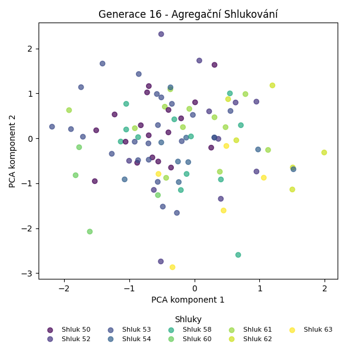
Stabilita mezi generací 15 → 16:
Shluk 54 → 54: 2 jedinců (22.2 %)
Shluk 54 → 52: 1 jedinců (11.1 %)
Shluk 54 → 58: 1 jedinců (11.1 %)
Shluk 54 → 50: 2 jedinců (22.2 %)
Shluk 54 → 62: 1 jedinců (11.1 %)
Shluk 54 → 61: 1 jedinců (11.1 %)
Shluk 54 → 53: 1 jedinců (11.1 %)
Shluk 50 → 52: 3 jedinců (10.0 %)
Shluk 50 → 58: 4 jedinců (13.3 %)
Shluk 50 → 61: 4 jedinců (13.3 %)
Shluk 50 → 53: 3 jedinců (10.0 %)
Shluk 50 → 50: 10 jedinců (33.3 %)
Shluk 50 → 62: 2 jedinců (6.7 %)
Shluk 50 → 60: 1 jedinců (3.3 %)
Shluk 50 → 63: 2 jedinců (6.7 %)
Shluk 50 → 54: 1 jedinců (3.3 %)
Shluk 52 → 53: 2 jedinců (25.0 %)
Shluk 52 → 61: 1 jedinců (12.5 %)
Shluk 52 → 60: 1 jedinců (12.5 %)
Shluk 52 → 50: 1 jedinců (12.5 %)
Shluk 52 → 63: 1 jedinců (12.5 %)
Shluk 52 → 52: 2 jedinců (25.0 %)
Shluk 58 → 50: 3 jedinců (18.8 %)
Shluk 58 → 58: 6 jedinců (37.5 %)
Shluk 58 → 63: 1 jedinců (6.2 %)
Shluk 58 → 53: 3 jedinců (18.8 %)
Shluk 58 → 54: 2 jedinců (12.5 %)
Shluk 58 → 61: 1 jedinců (6.2 %)
Shluk 53 → 52: 3 jedinců (15.0 %)
Shluk 53 → 61: 2 jedinců (10.0 %)
Shluk 53 → 53: 8 jedinců (40.0 %)
Shluk 53 → 54: 3 jedinců (15.0 %)
Shluk 53 → 62: 1 jedinců (5.0 %)
Shluk 53 → 63: 1 jedinců (5.0 %)
Shluk 53 → 50: 1 jedinců (5.0 %)
Shluk 53 → 58: 1 jedinců (5.0 %)
Shluk 59 → 62: 1 jedinců (11.1 %)
Shluk 59 → 61: 2 jedinců (22.2 %)
Shluk 59 → 53: 3 jedinců (33.3 %)
Shluk 59 → 50: 1 jedinců (11.1 %)
Shluk 59 → 52: 1 jedinců (11.1 %)
Shluk 59 → 54: 1 jedinců (11.1 %)
Shluk 60 → 54: 1 jedinců (12.5 %)
Shluk 60 → 60: 2 jedinců (25.0 %)
Shluk 60 → 62: 1 jedinců (12.5 %)
Shluk 60 → 61: 1 jedinců (12.5 %)
Shluk 60 → 53: 2 jedinců (25.0 %)
Shluk 60 → 52: 1 jedinců (12.5 %)
Jaccardovo mapování a overlap: Generace 15 → 16
- Shluk 54 → 54 (Jaccard: 0.12, Overlap: 0.22)
- Shluk 50 → 50 (Jaccard: 0.26, Overlap: 0.56)
- Shluk 52 → 52 (Jaccard: 0.12, Overlap: 0.25)
- Shluk 58 → 58 (Jaccard: 0.27, Overlap: 0.50)
- Shluk 53 → 53 (Jaccard: 0.24, Overlap: 0.40)
- Shluk 59 → 53 (Jaccard: 0.11, Overlap: 0.33)
- Shluk 60 → 60 (Jaccard: 0.20, Overlap: 0.50)
Posun centroidů mezi generací 15 → 16:
- Shluk 0: 1.6204
- Shluk 1: 4.1113
- Shluk 2: 1.6381
- Shluk 3: 2.2237
- Shluk 4: 2.0152
- Shluk 5: 2.7085
- Shluk 6: 1.9890
Generace 17

Stabilita mezi generací 16 → 17:
Shluk 54 → 54: 2 jedinců (20.0 %)
Shluk 54 → 63: 3 jedinců (30.0 %)
Shluk 54 → 60: 1 jedinců (10.0 %)
Shluk 54 → 65: 1 jedinců (10.0 %)
Shluk 54 → 50: 1 jedinců (10.0 %)
Shluk 54 → 53: 1 jedinců (10.0 %)
Shluk 54 → 64: 1 jedinců (10.0 %)
Shluk 52 → 54: 1 jedinců (9.1 %)
Shluk 52 → 63: 1 jedinců (9.1 %)
Shluk 52 → 53: 4 jedinců (36.4 %)
Shluk 52 → 60: 2 jedinců (18.2 %)
Shluk 52 → 50: 2 jedinců (18.2 %)
Shluk 52 → 65: 1 jedinců (9.1 %)
Shluk 53 → 53: 8 jedinců (36.4 %)
Shluk 53 → 64: 2 jedinců (9.1 %)
Shluk 53 → 50: 5 jedinců (22.7 %)
Shluk 53 → 62: 1 jedinců (4.5 %)
Shluk 53 → 61: 3 jedinců (13.6 %)
Shluk 53 → 63: 1 jedinců (4.5 %)
Shluk 53 → 65: 2 jedinců (9.1 %)
Shluk 50 → 61: 3 jedinců (16.7 %)
Shluk 50 → 64: 3 jedinců (16.7 %)
Shluk 50 → 53: 3 jedinců (16.7 %)
Shluk 50 → 50: 4 jedinců (22.2 %)
Shluk 50 → 62: 2 jedinců (11.1 %)
Shluk 50 → 63: 1 jedinců (5.6 %)
Shluk 50 → 65: 2 jedinců (11.1 %)
Shluk 58 → 53: 4 jedinců (33.3 %)
Shluk 58 → 54: 1 jedinců (8.3 %)
Shluk 58 → 64: 2 jedinců (16.7 %)
Shluk 58 → 63: 2 jedinců (16.7 %)
Shluk 58 → 61: 1 jedinců (8.3 %)
Shluk 58 → 50: 1 jedinců (8.3 %)
Shluk 58 → 60: 1 jedinců (8.3 %)
Shluk 61 → 53: 3 jedinců (25.0 %)
Shluk 61 → 61: 4 jedinců (33.3 %)
Shluk 61 → 60: 1 jedinců (8.3 %)
Shluk 61 → 50: 1 jedinců (8.3 %)
Shluk 61 → 65: 1 jedinců (8.3 %)
Shluk 61 → 54: 1 jedinců (8.3 %)
Shluk 61 → 63: 1 jedinců (8.3 %)
Shluk 60 → 64: 1 jedinců (25.0 %)
Shluk 60 → 50: 1 jedinců (25.0 %)
Shluk 60 → 61: 1 jedinců (25.0 %)
Shluk 60 → 60: 1 jedinců (25.0 %)
Shluk 62 → 62: 1 jedinců (16.7 %)
Shluk 62 → 60: 1 jedinců (16.7 %)
Shluk 62 → 53: 2 jedinců (33.3 %)
Shluk 62 → 63: 1 jedinců (16.7 %)
Shluk 62 → 50: 1 jedinců (16.7 %)
Shluk 63 → 64: 2 jedinců (40.0 %)
Shluk 63 → 63: 3 jedinců (60.0 %)
Jaccardovo mapování a overlap: Generace 16 → 17
- Shluk 54 → 54 (Jaccard: 0.15, Overlap: 0.40)
- Shluk 52 → 53 (Jaccard: 0.12, Overlap: 0.36)
- Shluk 53 → 53 (Jaccard: 0.21, Overlap: 0.36)
- Shluk 50 → 50 (Jaccard: 0.13, Overlap: 0.25)
- Shluk 58 → 53 (Jaccard: 0.12, Overlap: 0.33)
- Shluk 61 → 61 (Jaccard: 0.20, Overlap: 0.33)
- Shluk 60 → 60 (Jaccard: 0.10, Overlap: 0.25)
- Shluk 62 → 62 (Jaccard: 0.11, Overlap: 0.25)
- Shluk 63 → 63 (Jaccard: 0.20, Overlap: 0.60)
Posun centroidů mezi generací 16 → 17:
- Shluk 0: 2.4599
- Shluk 1: 2.2736
- Shluk 2: 2.2768
- Shluk 3: 2.1688
- Shluk 4: 2.0686
- Shluk 5: 2.8965
- Shluk 6: 1.7783
- Shluk 7: 3.1728
- Shluk 8: 2.9625
Generace 18
Stabilita mezi generací 17 → 18:
Shluk 54 → 61: 1 jedinců (20.0 %)
Shluk 54 → 62: 1 jedinců (20.0 %)
Shluk 54 → 63: 1 jedinců (20.0 %)
Shluk 54 → 64: 1 jedinců (20.0 %)
Shluk 54 → 67: 1 jedinců (20.0 %)
Shluk 63 → 66: 2 jedinců (15.4 %)
Shluk 63 → 60: 1 jedinců (7.7 %)
Shluk 63 → 68: 1 jedinců (7.7 %)
Shluk 63 → 62: 1 jedinců (7.7 %)
Shluk 63 → 61: 2 jedinců (15.4 %)
Shluk 63 → 63: 3 jedinců (23.1 %)
Shluk 63 → 65: 1 jedinců (7.7 %)
Shluk 63 → 50: 1 jedinců (7.7 %)
Shluk 63 → 64: 1 jedinců (7.7 %)
Shluk 53 → 62: 2 jedinců (8.0 %)
Shluk 53 → 67: 6 jedinců (24.0 %)
Shluk 53 → 61: 8 jedinců (32.0 %)
Shluk 53 → 64: 1 jedinců (4.0 %)
Shluk 53 → 66: 1 jedinců (4.0 %)
Shluk 53 → 60: 3 jedinců (12.0 %)
Shluk 53 → 68: 2 jedinců (8.0 %)
Shluk 53 → 63: 2 jedinců (8.0 %)
Shluk 61 → 61: 6 jedinců (50.0 %)
Shluk 61 → 66: 3 jedinců (25.0 %)
Shluk 61 → 63: 1 jedinců (8.3 %)
Shluk 61 → 67: 2 jedinců (16.7 %)
Shluk 60 → 60: 2 jedinců (28.6 %)
Shluk 60 → 50: 1 jedinců (14.3 %)
Shluk 60 → 63: 1 jedinců (14.3 %)
Shluk 60 → 61: 2 jedinců (28.6 %)
Shluk 60 → 67: 1 jedinců (14.3 %)
Shluk 64 → 64: 2 jedinců (18.2 %)
Shluk 64 → 63: 1 jedinců (9.1 %)
Shluk 64 → 61: 1 jedinců (9.1 %)
Shluk 64 → 67: 2 jedinců (18.2 %)
Shluk 64 → 65: 1 jedinců (9.1 %)
Shluk 64 → 66: 2 jedinců (18.2 %)
Shluk 64 → 62: 1 jedinců (9.1 %)
Shluk 64 → 60: 1 jedinců (9.1 %)
Shluk 62 → 67: 1 jedinců (25.0 %)
Shluk 62 → 62: 1 jedinců (25.0 %)
Shluk 62 → 61: 1 jedinců (25.0 %)
Shluk 62 → 60: 1 jedinců (25.0 %)
Shluk 50 → 66: 2 jedinců (12.5 %)
Shluk 50 → 67: 3 jedinců (18.8 %)
Shluk 50 → 50: 3 jedinců (18.8 %)
Shluk 50 → 64: 3 jedinců (18.8 %)
Shluk 50 → 60: 1 jedinců (6.2 %)
Shluk 50 → 62: 1 jedinců (6.2 %)
Shluk 50 → 61: 2 jedinců (12.5 %)
Shluk 50 → 63: 1 jedinců (6.2 %)
Shluk 65 → 60: 1 jedinců (14.3 %)
Shluk 65 → 65: 1 jedinců (14.3 %)
Shluk 65 → 61: 1 jedinců (14.3 %)
Shluk 65 → 63: 1 jedinců (14.3 %)
Shluk 65 → 68: 1 jedinců (14.3 %)
Shluk 65 → 62: 1 jedinců (14.3 %)
Shluk 65 → 67: 1 jedinců (14.3 %)
Jaccardovo mapování a overlap: Generace 17 → 18
- Shluk 54 → 62 (Jaccard: 0.08, Overlap: 0.20)
- Shluk 63 → 63 (Jaccard: 0.14, Overlap: 0.27)
- Shluk 53 → 61 (Jaccard: 0.20, Overlap: 0.33)
- Shluk 61 → 61 (Jaccard: 0.20, Overlap: 0.50)
- Shluk 60 → 60 (Jaccard: 0.13, Overlap: 0.29)
- Shluk 64 → 64 (Jaccard: 0.12, Overlap: 0.25)
- Shluk 62 → 62 (Jaccard: 0.09, Overlap: 0.25)
- Shluk 50 → 50 (Jaccard: 0.17, Overlap: 0.60)
- Shluk 65 → 65 (Jaccard: 0.11, Overlap: 0.33)
Posun centroidů mezi generací 17 → 18:
- Shluk 0: 2.2850
- Shluk 1: 2.4180
- Shluk 2: 2.7123
- Shluk 3: 2.2601
- Shluk 4: 1.7894
- Shluk 5: 2.4574
- Shluk 6: 3.2553
- Shluk 7: 3.1472
- Shluk 8: 3.4844
Generace 19

Stabilita mezi generací 18 → 19:
Shluk 61 → 69: 4 jedinců (16.7 %)
Shluk 61 → 71: 1 jedinců (4.2 %)
Shluk 61 → 63: 1 jedinců (4.2 %)
Shluk 61 → 73: 3 jedinců (12.5 %)
Shluk 61 → 61: 6 jedinců (25.0 %)
Shluk 61 → 64: 1 jedinců (4.2 %)
Shluk 61 → 74: 2 jedinců (8.3 %)
Shluk 61 → 76: 2 jedinců (8.3 %)
Shluk 61 → 72: 2 jedinců (8.3 %)
Shluk 61 → 75: 1 jedinců (4.2 %)
Shluk 61 → 60: 1 jedinců (4.2 %)
Shluk 62 → 62: 3 jedinců (37.5 %)
Shluk 62 → 70: 2 jedinců (25.0 %)
Shluk 62 → 60: 1 jedinců (12.5 %)
Shluk 62 → 61: 2 jedinců (25.0 %)
Shluk 66 → 61: 3 jedinců (30.0 %)
Shluk 66 → 62: 1 jedinců (10.0 %)
Shluk 66 → 64: 1 jedinců (10.0 %)
Shluk 66 → 69: 2 jedinců (20.0 %)
Shluk 66 → 60: 1 jedinců (10.0 %)
Shluk 66 → 71: 1 jedinců (10.0 %)
Shluk 66 → 72: 1 jedinců (10.0 %)
Shluk 67 → 69: 1 jedinců (5.9 %)
Shluk 67 → 70: 2 jedinců (11.8 %)
Shluk 67 → 71: 1 jedinců (5.9 %)
Shluk 67 → 62: 2 jedinců (11.8 %)
Shluk 67 → 74: 2 jedinců (11.8 %)
Shluk 67 → 61: 2 jedinců (11.8 %)
Shluk 67 → 60: 3 jedinců (17.6 %)
Shluk 67 → 73: 3 jedinců (17.6 %)
Shluk 67 → 63: 1 jedinců (5.9 %)
Shluk 63 → 72: 2 jedinců (18.2 %)
Shluk 63 → 63: 3 jedinců (27.3 %)
Shluk 63 → 76: 1 jedinců (9.1 %)
Shluk 63 → 73: 1 jedinců (9.1 %)
Shluk 63 → 75: 1 jedinců (9.1 %)
Shluk 63 → 70: 2 jedinců (18.2 %)
Shluk 63 → 62: 1 jedinců (9.1 %)
Shluk 60 → 60: 3 jedinců (30.0 %)
Shluk 60 → 74: 1 jedinců (10.0 %)
Shluk 60 → 61: 1 jedinců (10.0 %)
Shluk 60 → 75: 1 jedinců (10.0 %)
Shluk 60 → 70: 1 jedinců (10.0 %)
Shluk 60 → 69: 2 jedinců (20.0 %)
Shluk 60 → 64: 1 jedinců (10.0 %)
Shluk 64 → 61: 1 jedinců (12.5 %)
Shluk 64 → 63: 1 jedinců (12.5 %)
Shluk 64 → 71: 1 jedinců (12.5 %)
Shluk 64 → 73: 1 jedinců (12.5 %)
Shluk 64 → 64: 2 jedinců (25.0 %)
Shluk 64 → 75: 2 jedinců (25.0 %)
Shluk 50 → 61: 3 jedinců (60.0 %)
Shluk 50 → 74: 1 jedinců (20.0 %)
Shluk 50 → 75: 1 jedinců (20.0 %)
Shluk 68 → 73: 1 jedinců (25.0 %)
Shluk 68 → 62: 2 jedinců (50.0 %)
Shluk 68 → 63: 1 jedinců (25.0 %)
Shluk 65 → 62: 2 jedinců (66.7 %)
Shluk 65 → 64: 1 jedinců (33.3 %)
Jaccardovo mapování a overlap: Generace 18 → 19
- Shluk 61 → 61 (Jaccard: 0.17, Overlap: 0.33)
- Shluk 62 → 62 (Jaccard: 0.19, Overlap: 0.38)
- Shluk 66 → 61 (Jaccard: 0.12, Overlap: 0.30)
- Shluk 67 → 60 (Jaccard: 0.13, Overlap: 0.33)
- Shluk 63 → 63 (Jaccard: 0.20, Overlap: 0.43)
- Shluk 60 → 60 (Jaccard: 0.19, Overlap: 0.33)
- Shluk 64 → 64 (Jaccard: 0.17, Overlap: 0.33)
- Shluk 50 → 61 (Jaccard: 0.15, Overlap: 0.60)
- Shluk 68 → 62 (Jaccard: 0.15, Overlap: 0.50)
- Shluk 65 → 62 (Jaccard: 0.17, Overlap: 0.67)
Posun centroidů mezi generací 18 → 19:
- Shluk 0: 2.4276
- Shluk 1: 2.3324
- Shluk 2: 2.5827
- Shluk 3: 2.6794
- Shluk 4: 2.4517
- Shluk 5: 3.3151
- Shluk 6: 3.7630
- Shluk 7: 4.1868
- Shluk 8: 2.0378
- Shluk 9: 5.5298
Generace 20
Stabilita mezi generací 19 → 20:
Shluk 69 → 69: 3 jedinců (33.3 %)
Shluk 69 → 73: 1 jedinců (11.1 %)
Shluk 69 → 75: 1 jedinců (11.1 %)
Shluk 69 → 62: 1 jedinců (11.1 %)
Shluk 69 → 61: 2 jedinců (22.2 %)
Shluk 69 → 60: 1 jedinců (11.1 %)
Shluk 62 → 69: 1 jedinců (9.1 %)
Shluk 62 → 77: 2 jedinců (18.2 %)
Shluk 62 → 62: 5 jedinců (45.5 %)
Shluk 62 → 74: 1 jedinců (9.1 %)
Shluk 62 → 73: 1 jedinců (9.1 %)
Shluk 62 → 75: 1 jedinců (9.1 %)
Shluk 61 → 77: 2 jedinců (11.1 %)
Shluk 61 → 64: 3 jedinců (16.7 %)
Shluk 61 → 62: 3 jedinců (16.7 %)
Shluk 61 → 61: 3 jedinců (16.7 %)
Shluk 61 → 60: 3 jedinců (16.7 %)
Shluk 61 → 76: 1 jedinců (5.6 %)
Shluk 61 → 75: 2 jedinců (11.1 %)
Shluk 61 → 73: 1 jedinců (5.6 %)
Shluk 70 → 77: 1 jedinců (14.3 %)
Shluk 70 → 75: 1 jedinců (14.3 %)
Shluk 70 → 70: 1 jedinců (14.3 %)
Shluk 70 → 61: 1 jedinců (14.3 %)
Shluk 70 → 73: 1 jedinců (14.3 %)
Shluk 70 → 62: 1 jedinců (14.3 %)
Shluk 70 → 69: 1 jedinců (14.3 %)
Shluk 71 → 62: 2 jedinců (50.0 %)
Shluk 71 → 77: 1 jedinců (25.0 %)
Shluk 71 → 60: 1 jedinců (25.0 %)
Shluk 72 → 60: 1 jedinců (20.0 %)
Shluk 72 → 61: 1 jedinců (20.0 %)
Shluk 72 → 77: 1 jedinců (20.0 %)
Shluk 72 → 75: 1 jedinců (20.0 %)
Shluk 72 → 62: 1 jedinců (20.0 %)
Shluk 63 → 62: 2 jedinců (28.6 %)
Shluk 63 → 60: 1 jedinců (14.3 %)
Shluk 63 → 64: 1 jedinců (14.3 %)
Shluk 63 → 77: 1 jedinců (14.3 %)
Shluk 63 → 75: 1 jedinců (14.3 %)
Shluk 63 → 76: 1 jedinců (14.3 %)
Shluk 60 → 64: 2 jedinců (22.2 %)
Shluk 60 → 75: 1 jedinců (11.1 %)
Shluk 60 → 60: 2 jedinců (22.2 %)
Shluk 60 → 62: 2 jedinců (22.2 %)
Shluk 60 → 77: 1 jedinců (11.1 %)
Shluk 60 → 76: 1 jedinců (11.1 %)
Shluk 73 → 69: 2 jedinců (22.2 %)
Shluk 73 → 75: 1 jedinců (11.1 %)
Shluk 73 → 64: 1 jedinců (11.1 %)
Shluk 73 → 77: 1 jedinců (11.1 %)
Shluk 73 → 74: 1 jedinců (11.1 %)
Shluk 73 → 73: 2 jedinců (22.2 %)
Shluk 73 → 70: 1 jedinců (11.1 %)
Shluk 64 → 64: 3 jedinců (50.0 %)
Shluk 64 → 62: 1 jedinců (16.7 %)
Shluk 64 → 76: 1 jedinců (16.7 %)
Shluk 64 → 69: 1 jedinců (16.7 %)
Shluk 74 → 61: 1 jedinců (16.7 %)
Shluk 74 → 62: 1 jedinců (16.7 %)
Shluk 74 → 74: 2 jedinců (33.3 %)
Shluk 74 → 76: 1 jedinců (16.7 %)
Shluk 74 → 73: 1 jedinců (16.7 %)
Shluk 75 → 62: 1 jedinců (16.7 %)
Shluk 75 → 77: 1 jedinců (16.7 %)
Shluk 75 → 60: 1 jedinců (16.7 %)
Shluk 75 → 75: 2 jedinců (33.3 %)
Shluk 75 → 61: 1 jedinců (16.7 %)
Shluk 76 → 64: 1 jedinců (33.3 %)
Shluk 76 → 60: 1 jedinců (33.3 %)
Shluk 76 → 76: 1 jedinců (33.3 %)
Jaccardovo mapování a overlap: Generace 19 → 20
- Shluk 69 → 69 (Jaccard: 0.21, Overlap: 0.38)
- Shluk 62 → 62 (Jaccard: 0.19, Overlap: 0.45)
- Shluk 61 → 61 (Jaccard: 0.12, Overlap: 0.33)
- Shluk 70 → 70 (Jaccard: 0.12, Overlap: 0.50)
- Shluk 71 → 62 (Jaccard: 0.09, Overlap: 0.50)
- Shluk 72 → 61 (Jaccard: 0.08, Overlap: 0.20)
- Shluk 63 → 76 (Jaccard: 0.08, Overlap: 0.17)
- Shluk 60 → 60 (Jaccard: 0.11, Overlap: 0.22)
- Shluk 73 → 73 (Jaccard: 0.14, Overlap: 0.29)
- Shluk 64 → 64 (Jaccard: 0.21, Overlap: 0.50)
- Shluk 74 → 74 (Jaccard: 0.25, Overlap: 0.50)
- Shluk 75 → 75 (Jaccard: 0.13, Overlap: 0.33)
- Shluk 76 → 76 (Jaccard: 0.12, Overlap: 0.33)
Posun centroidů mezi generací 19 → 20:
- Shluk 0: 1.9702
- Shluk 1: 1.8300
- Shluk 2: 1.8609
- Shluk 3: 1.8838
- Shluk 4: 3.1166
- Shluk 5: 4.0847
- Shluk 6: 3.4338
- Shluk 7: 2.8163
- Shluk 8: 2.6898
- Shluk 9: 4.0605
- Shluk 10: 2.0873
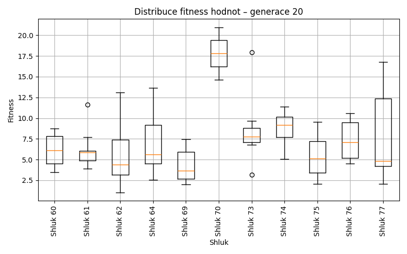
Generace 21
Stabilita mezi generací 20 → 21:
Shluk 69 → 61: 2 jedinců (25.0 %)
Shluk 69 → 78: 1 jedinců (12.5 %)
Shluk 69 → 79: 2 jedinců (25.0 %)
Shluk 69 → 75: 1 jedinců (12.5 %)
Shluk 69 → 60: 1 jedinců (12.5 %)
Shluk 69 → 77: 1 jedinců (12.5 %)
Shluk 77 → 77: 4 jedinců (36.4 %)
Shluk 77 → 79: 1 jedinců (9.1 %)
Shluk 77 → 76: 1 jedinců (9.1 %)
Shluk 77 → 62: 1 jedinců (9.1 %)
Shluk 77 → 60: 1 jedinců (9.1 %)
Shluk 77 → 64: 1 jedinců (9.1 %)
Shluk 77 → 75: 1 jedinců (9.1 %)
Shluk 77 → 73: 1 jedinců (9.1 %)
Shluk 75 → 75: 3 jedinců (27.3 %)
Shluk 75 → 64: 2 jedinců (18.2 %)
Shluk 75 → 73: 2 jedinců (18.2 %)
Shluk 75 → 78: 1 jedinců (9.1 %)
Shluk 75 → 77: 1 jedinců (9.1 %)
Shluk 75 → 79: 1 jedinců (9.1 %)
Shluk 75 → 62: 1 jedinců (9.1 %)
Shluk 62 → 73: 3 jedinců (15.0 %)
Shluk 62 → 62: 4 jedinců (20.0 %)
Shluk 62 → 75: 4 jedinců (20.0 %)
Shluk 62 → 77: 1 jedinců (5.0 %)
Shluk 62 → 78: 3 jedinců (15.0 %)
Shluk 62 → 61: 1 jedinců (5.0 %)
Shluk 62 → 64: 2 jedinců (10.0 %)
Shluk 62 → 79: 2 jedinců (10.0 %)
Shluk 73 → 73: 2 jedinců (28.6 %)
Shluk 73 → 64: 1 jedinců (14.3 %)
Shluk 73 → 75: 2 jedinců (28.6 %)
Shluk 73 → 79: 1 jedinců (14.3 %)
Shluk 73 → 77: 1 jedinců (14.3 %)
Shluk 60 → 77: 2 jedinců (18.2 %)
Shluk 60 → 61: 1 jedinců (9.1 %)
Shluk 60 → 73: 1 jedinců (9.1 %)
Shluk 60 → 60: 2 jedinců (18.2 %)
Shluk 60 → 76: 1 jedinců (9.1 %)
Shluk 60 → 64: 1 jedinců (9.1 %)
Shluk 60 → 78: 1 jedinců (9.1 %)
Shluk 60 → 75: 1 jedinců (9.1 %)
Shluk 60 → 79: 1 jedinců (9.1 %)
Shluk 64 → 62: 1 jedinců (9.1 %)
Shluk 64 → 64: 5 jedinců (45.5 %)
Shluk 64 → 78: 2 jedinců (18.2 %)
Shluk 64 → 79: 2 jedinců (18.2 %)
Shluk 64 → 60: 1 jedinců (9.1 %)
Shluk 70 → 60: 1 jedinců (50.0 %)
Shluk 70 → 64: 1 jedinců (50.0 %)
Shluk 61 → 77: 2 jedinců (22.2 %)
Shluk 61 → 61: 4 jedinců (44.4 %)
Shluk 61 → 75: 1 jedinců (11.1 %)
Shluk 61 → 64: 1 jedinců (11.1 %)
Shluk 61 → 62: 1 jedinců (11.1 %)
Shluk 76 → 75: 1 jedinců (16.7 %)
Shluk 76 → 76: 1 jedinců (16.7 %)
Shluk 76 → 77: 2 jedinců (33.3 %)
Shluk 76 → 60: 1 jedinců (16.7 %)
Shluk 76 → 78: 1 jedinců (16.7 %)
Shluk 74 → 64: 3 jedinců (75.0 %)
Shluk 74 → 79: 1 jedinců (25.0 %)
Jaccardovo mapování a overlap: Generace 20 → 21
- Shluk 69 → 61 (Jaccard: 0.14, Overlap: 0.25)
- Shluk 77 → 77 (Jaccard: 0.19, Overlap: 0.36)
- Shluk 75 → 75 (Jaccard: 0.14, Overlap: 0.27)
- Shluk 62 → 62 (Jaccard: 0.17, Overlap: 0.50)
- Shluk 73 → 73 (Jaccard: 0.14, Overlap: 0.29)
- Shluk 60 → 60 (Jaccard: 0.12, Overlap: 0.29)
- Shluk 64 → 64 (Jaccard: 0.22, Overlap: 0.45)
- Shluk 70 → 60 (Jaccard: 0.12, Overlap: 0.50)
- Shluk 61 → 61 (Jaccard: 0.31, Overlap: 0.50)
- Shluk 76 → 76 (Jaccard: 0.12, Overlap: 0.33)
- Shluk 74 → 64 (Jaccard: 0.17, Overlap: 0.75)
Posun centroidů mezi generací 20 → 21:
- Shluk 0: 1.8556
- Shluk 1: 1.7979
- Shluk 2: 2.2515
- Shluk 3: 2.6101
- Shluk 4: 1.8287
- Shluk 5: 3.9165
- Shluk 6: 3.2555
- Shluk 7: 2.7927
- Shluk 8: 3.7071
- Shluk 9: 3.1674
Generace 22
Stabilita mezi generací 21 → 22:
Shluk 61 → 61: 2 jedinců (25.0 %)
Shluk 61 → 80: 1 jedinců (12.5 %)
Shluk 61 → 81: 2 jedinců (25.0 %)
Shluk 61 → 62: 1 jedinců (12.5 %)
Shluk 61 → 79: 2 jedinců (25.0 %)
Shluk 78 → 78: 3 jedinců (33.3 %)
Shluk 78 → 79: 1 jedinců (11.1 %)
Shluk 78 → 80: 2 jedinců (22.2 %)
Shluk 78 → 83: 2 jedinců (22.2 %)
Shluk 78 → 82: 1 jedinců (11.1 %)
Shluk 77 → 80: 2 jedinců (14.3 %)
Shluk 77 → 79: 4 jedinců (28.6 %)
Shluk 77 → 81: 2 jedinců (14.3 %)
Shluk 77 → 78: 3 jedinců (21.4 %)
Shluk 77 → 82: 1 jedinců (7.1 %)
Shluk 77 → 83: 2 jedinců (14.3 %)
Shluk 75 → 78: 3 jedinců (21.4 %)
Shluk 75 → 75: 3 jedinců (21.4 %)
Shluk 75 → 81: 2 jedinců (14.3 %)
Shluk 75 → 62: 1 jedinců (7.1 %)
Shluk 75 → 83: 1 jedinců (7.1 %)
Shluk 75 → 82: 1 jedinců (7.1 %)
Shluk 75 → 79: 2 jedinců (14.3 %)
Shluk 75 → 60: 1 jedinců (7.1 %)
Shluk 73 → 75: 1 jedinců (11.1 %)
Shluk 73 → 81: 2 jedinců (22.2 %)
Shluk 73 → 80: 2 jedinců (22.2 %)
Shluk 73 → 60: 2 jedinců (22.2 %)
Shluk 73 → 82: 1 jedinců (11.1 %)
Shluk 73 → 83: 1 jedinců (11.1 %)
Shluk 62 → 62: 3 jedinců (37.5 %)
Shluk 62 → 78: 1 jedinců (12.5 %)
Shluk 62 → 81: 3 jedinců (37.5 %)
Shluk 62 → 79: 1 jedinců (12.5 %)
Shluk 79 → 79: 4 jedinců (36.4 %)
Shluk 79 → 61: 2 jedinců (18.2 %)
Shluk 79 → 62: 3 jedinců (27.3 %)
Shluk 79 → 81: 2 jedinců (18.2 %)
Shluk 64 → 61: 3 jedinců (17.6 %)
Shluk 64 → 62: 3 jedinců (17.6 %)
Shluk 64 → 82: 1 jedinců (5.9 %)
Shluk 64 → 79: 3 jedinců (17.6 %)
Shluk 64 → 60: 2 jedinců (11.8 %)
Shluk 64 → 81: 3 jedinců (17.6 %)
Shluk 64 → 78: 1 jedinců (5.9 %)
Shluk 64 → 75: 1 jedinců (5.9 %)
Shluk 76 → 80: 1 jedinců (33.3 %)
Shluk 76 → 82: 1 jedinců (33.3 %)
Shluk 76 → 75: 1 jedinců (33.3 %)
Shluk 60 → 60: 2 jedinců (28.6 %)
Shluk 60 → 79: 2 jedinců (28.6 %)
Shluk 60 → 62: 1 jedinců (14.3 %)
Shluk 60 → 80: 1 jedinců (14.3 %)
Shluk 60 → 78: 1 jedinců (14.3 %)
Jaccardovo mapování a overlap: Generace 21 → 22
- Shluk 61 → 61 (Jaccard: 0.15, Overlap: 0.29)
- Shluk 78 → 78 (Jaccard: 0.17, Overlap: 0.33)
- Shluk 77 → 79 (Jaccard: 0.14, Overlap: 0.29)
- Shluk 75 → 75 (Jaccard: 0.18, Overlap: 0.50)
- Shluk 73 → 60 (Jaccard: 0.14, Overlap: 0.29)
- Shluk 62 → 62 (Jaccard: 0.18, Overlap: 0.38)
- Shluk 79 → 79 (Jaccard: 0.15, Overlap: 0.36)
- Shluk 64 → 61 (Jaccard: 0.14, Overlap: 0.43)
- Shluk 76 → 75 (Jaccard: 0.12, Overlap: 0.33)
- Shluk 60 → 60 (Jaccard: 0.17, Overlap: 0.29)
Posun centroidů mezi generací 21 → 22:
- Shluk 0: 2.7377
- Shluk 1: 2.6830
- Shluk 2: 2.3390
- Shluk 3: 2.1536
- Shluk 4: 2.1357
- Shluk 5: 2.2475
- Shluk 6: 2.6199
- Shluk 7: 3.1201
- Shluk 8: 4.4608
- Shluk 9: 1.7941
Generace 23
Stabilita mezi generací 22 → 23:
Shluk 61 → 78: 5 jedinců (71.4 %)
Shluk 61 → 86: 1 jedinců (14.3 %)
Shluk 61 → 62: 1 jedinců (14.3 %)
Shluk 78 → 60: 2 jedinců (16.7 %)
Shluk 78 → 78: 6 jedinců (50.0 %)
Shluk 78 → 86: 1 jedinců (8.3 %)
Shluk 78 → 81: 2 jedinců (16.7 %)
Shluk 78 → 84: 1 jedinců (8.3 %)
Shluk 80 → 84: 1 jedinců (11.1 %)
Shluk 80 → 78: 3 jedinců (33.3 %)
Shluk 80 → 85: 1 jedinců (11.1 %)
Shluk 80 → 60: 2 jedinců (22.2 %)
Shluk 80 → 81: 1 jedinců (11.1 %)
Shluk 80 → 86: 1 jedinců (11.1 %)
Shluk 79 → 84: 3 jedinců (15.8 %)
Shluk 79 → 81: 4 jedinců (21.1 %)
Shluk 79 → 82: 3 jedinců (15.8 %)
Shluk 79 → 85: 3 jedinců (15.8 %)
Shluk 79 → 86: 2 jedinců (10.5 %)
Shluk 79 → 78: 2 jedinců (10.5 %)
Shluk 79 → 83: 1 jedinců (5.3 %)
Shluk 79 → 60: 1 jedinců (5.3 %)
Shluk 75 → 78: 3 jedinců (50.0 %)
Shluk 75 → 84: 1 jedinců (16.7 %)
Shluk 75 → 85: 1 jedinců (16.7 %)
Shluk 75 → 86: 1 jedinců (16.7 %)
Shluk 81 → 78: 4 jedinců (25.0 %)
Shluk 81 → 84: 3 jedinců (18.8 %)
Shluk 81 → 81: 4 jedinců (25.0 %)
Shluk 81 → 82: 2 jedinců (12.5 %)
Shluk 81 → 85: 2 jedinců (12.5 %)
Shluk 81 → 86: 1 jedinců (6.2 %)
Shluk 62 → 85: 2 jedinců (16.7 %)
Shluk 62 → 84: 1 jedinců (8.3 %)
Shluk 62 → 62: 4 jedinců (33.3 %)
Shluk 62 → 81: 2 jedinců (16.7 %)
Shluk 62 → 86: 1 jedinců (8.3 %)
Shluk 62 → 83: 1 jedinců (8.3 %)
Shluk 62 → 78: 1 jedinců (8.3 %)
Shluk 60 → 78: 3 jedinců (42.9 %)
Shluk 60 → 60: 2 jedinců (28.6 %)
Shluk 60 → 86: 1 jedinců (14.3 %)
Shluk 60 → 84: 1 jedinců (14.3 %)
Shluk 82 → 86: 2 jedinců (33.3 %)
Shluk 82 → 82: 2 jedinců (33.3 %)
Shluk 82 → 81: 1 jedinců (16.7 %)
Shluk 82 → 78: 1 jedinců (16.7 %)
Shluk 83 → 78: 2 jedinců (33.3 %)
Shluk 83 → 83: 1 jedinců (16.7 %)
Shluk 83 → 84: 1 jedinců (16.7 %)
Shluk 83 → 81: 2 jedinců (33.3 %)
Jaccardovo mapování a overlap: Generace 22 → 23
- Shluk 61 → 78 (Jaccard: 0.16, Overlap: 0.71)
- Shluk 78 → 78 (Jaccard: 0.17, Overlap: 0.50)
- Shluk 80 → 60 (Jaccard: 0.14, Overlap: 0.29)
- Shluk 79 → 82 (Jaccard: 0.13, Overlap: 0.43)
- Shluk 75 → 78 (Jaccard: 0.09, Overlap: 0.50)
- Shluk 81 → 81 (Jaccard: 0.14, Overlap: 0.25)
- Shluk 62 → 62 (Jaccard: 0.31, Overlap: 0.80)
- Shluk 60 → 60 (Jaccard: 0.17, Overlap: 0.29)
- Shluk 82 → 82 (Jaccard: 0.18, Overlap: 0.33)
- Shluk 83 → 83 (Jaccard: 0.12, Overlap: 0.33)
Posun centroidů mezi generací 22 → 23:
- Shluk 0: 3.1967
- Shluk 1: 2.0548
- Shluk 2: 1.4786
- Shluk 3: 2.7699
- Shluk 4: 2.4110
- Shluk 5: 2.0305
- Shluk 6: 2.5283
- Shluk 7: 3.6231
- Shluk 8: 3.1000
Generace 24
Stabilita mezi generací 23 → 24:
Shluk 78 → 86: 3 jedinců (10.0 %)
Shluk 78 → 82: 2 jedinců (6.7 %)
Shluk 78 → 87: 7 jedinců (23.3 %)
Shluk 78 → 88: 4 jedinců (13.3 %)
Shluk 78 → 81: 1 jedinců (3.3 %)
Shluk 78 → 89: 2 jedinců (6.7 %)
Shluk 78 → 78: 6 jedinců (20.0 %)
Shluk 78 → 62: 4 jedinců (13.3 %)
Shluk 78 → 85: 1 jedinců (3.3 %)
Shluk 60 → 82: 1 jedinců (14.3 %)
Shluk 60 → 81: 1 jedinců (14.3 %)
Shluk 60 → 89: 1 jedinců (14.3 %)
Shluk 60 → 87: 1 jedinců (14.3 %)
Shluk 60 → 62: 1 jedinců (14.3 %)
Shluk 60 → 88: 1 jedinců (14.3 %)
Shluk 60 → 86: 1 jedinců (14.3 %)
Shluk 84 → 87: 2 jedinců (16.7 %)
Shluk 84 → 62: 2 jedinců (16.7 %)
Shluk 84 → 84: 4 jedinců (33.3 %)
Shluk 84 → 78: 1 jedinců (8.3 %)
Shluk 84 → 89: 1 jedinců (8.3 %)
Shluk 84 → 88: 1 jedinců (8.3 %)
Shluk 84 → 81: 1 jedinců (8.3 %)
Shluk 85 → 89: 1 jedinců (11.1 %)
Shluk 85 → 88: 1 jedinců (11.1 %)
Shluk 85 → 85: 2 jedinců (22.2 %)
Shluk 85 → 87: 1 jedinců (11.1 %)
Shluk 85 → 84: 1 jedinců (11.1 %)
Shluk 85 → 86: 1 jedinců (11.1 %)
Shluk 85 → 78: 1 jedinců (11.1 %)
Shluk 85 → 62: 1 jedinců (11.1 %)
Shluk 86 → 85: 1 jedinců (9.1 %)
Shluk 86 → 86: 2 jedinců (18.2 %)
Shluk 86 → 62: 3 jedinců (27.3 %)
Shluk 86 → 89: 2 jedinců (18.2 %)
Shluk 86 → 87: 1 jedinců (9.1 %)
Shluk 86 → 88: 1 jedinců (9.1 %)
Shluk 86 → 84: 1 jedinců (9.1 %)
Shluk 81 → 81: 4 jedinců (25.0 %)
Shluk 81 → 88: 2 jedinců (12.5 %)
Shluk 81 → 87: 3 jedinců (18.8 %)
Shluk 81 → 62: 3 jedinců (18.8 %)
Shluk 81 → 89: 2 jedinců (12.5 %)
Shluk 81 → 82: 1 jedinců (6.2 %)
Shluk 81 → 85: 1 jedinců (6.2 %)
Shluk 82 → 89: 1 jedinců (14.3 %)
Shluk 82 → 84: 1 jedinců (14.3 %)
Shluk 82 → 82: 2 jedinců (28.6 %)
Shluk 82 → 81: 1 jedinců (14.3 %)
Shluk 82 → 88: 1 jedinců (14.3 %)
Shluk 82 → 87: 1 jedinců (14.3 %)
Shluk 62 → 62: 2 jedinců (40.0 %)
Shluk 62 → 81: 1 jedinců (20.0 %)
Shluk 62 → 84: 1 jedinců (20.0 %)
Shluk 62 → 88: 1 jedinců (20.0 %)
Shluk 83 → 82: 1 jedinců (33.3 %)
Shluk 83 → 88: 1 jedinců (33.3 %)
Shluk 83 → 89: 1 jedinců (33.3 %)
Jaccardovo mapování a overlap: Generace 23 → 24
- Shluk 78 → 78 (Jaccard: 0.19, Overlap: 0.75)
- Shluk 60 → 86 (Jaccard: 0.08, Overlap: 0.14)
- Shluk 84 → 84 (Jaccard: 0.25, Overlap: 0.50)
- Shluk 85 → 85 (Jaccard: 0.17, Overlap: 0.40)
- Shluk 86 → 86 (Jaccard: 0.12, Overlap: 0.29)
- Shluk 81 → 81 (Jaccard: 0.19, Overlap: 0.44)
- Shluk 82 → 82 (Jaccard: 0.17, Overlap: 0.29)
- Shluk 62 → 62 (Jaccard: 0.11, Overlap: 0.40)
- Shluk 83 → 82 (Jaccard: 0.11, Overlap: 0.33)
Posun centroidů mezi generací 23 → 24:
- Shluk 0: 1.1369
- Shluk 1: 1.5416
- Shluk 2: 3.2473
- Shluk 3: 1.7647
- Shluk 4: 3.0533
- Shluk 5: 2.1391
- Shluk 6: 3.9248
- Shluk 7: 3.5812
- Shluk 8: 2.2895
Generace 25
Stabilita mezi generací 24 → 25:
Shluk 86 → 85: 1 jedinců (14.3 %)
Shluk 86 → 88: 2 jedinců (28.6 %)
Shluk 86 → 86: 2 jedinců (28.6 %)
Shluk 86 → 90: 1 jedinců (14.3 %)
Shluk 86 → 62: 1 jedinců (14.3 %)
Shluk 82 → 88: 1 jedinců (14.3 %)
Shluk 82 → 62: 3 jedinců (42.9 %)
Shluk 82 → 82: 3 jedinců (42.9 %)
Shluk 87 → 87: 5 jedinců (31.2 %)
Shluk 87 → 62: 4 jedinců (25.0 %)
Shluk 87 → 82: 4 jedinců (25.0 %)
Shluk 87 → 90: 1 jedinců (6.2 %)
Shluk 87 → 88: 1 jedinců (6.2 %)
Shluk 87 → 86: 1 jedinců (6.2 %)
Shluk 62 → 87: 1 jedinců (6.2 %)
Shluk 62 → 62: 5 jedinců (31.2 %)
Shluk 62 → 86: 2 jedinců (12.5 %)
Shluk 62 → 88: 2 jedinců (12.5 %)
Shluk 62 → 85: 1 jedinců (6.2 %)
Shluk 62 → 82: 4 jedinců (25.0 %)
Shluk 62 → 90: 1 jedinců (6.2 %)
Shluk 88 → 88: 4 jedinců (30.8 %)
Shluk 88 → 86: 1 jedinců (7.7 %)
Shluk 88 → 62: 3 jedinců (23.1 %)
Shluk 88 → 87: 2 jedinců (15.4 %)
Shluk 88 → 85: 1 jedinců (7.7 %)
Shluk 88 → 82: 2 jedinců (15.4 %)
Shluk 84 → 82: 2 jedinců (25.0 %)
Shluk 84 → 62: 2 jedinců (25.0 %)
Shluk 84 → 88: 2 jedinců (25.0 %)
Shluk 84 → 85: 1 jedinců (12.5 %)
Shluk 84 → 87: 1 jedinců (12.5 %)
Shluk 89 → 85: 4 jedinců (36.4 %)
Shluk 89 → 86: 1 jedinců (9.1 %)
Shluk 89 → 82: 3 jedinců (27.3 %)
Shluk 89 → 90: 1 jedinců (9.1 %)
Shluk 89 → 88: 1 jedinců (9.1 %)
Shluk 89 → 62: 1 jedinců (9.1 %)
Shluk 85 → 82: 1 jedinců (20.0 %)
Shluk 85 → 85: 3 jedinců (60.0 %)
Shluk 85 → 88: 1 jedinců (20.0 %)
Shluk 81 → 62: 3 jedinců (33.3 %)
Shluk 81 → 88: 2 jedinců (22.2 %)
Shluk 81 → 90: 1 jedinců (11.1 %)
Shluk 81 → 82: 1 jedinců (11.1 %)
Shluk 81 → 86: 2 jedinců (22.2 %)
Shluk 78 → 88: 2 jedinců (25.0 %)
Shluk 78 → 86: 1 jedinců (12.5 %)
Shluk 78 → 82: 1 jedinců (12.5 %)
Shluk 78 → 87: 1 jedinců (12.5 %)
Shluk 78 → 62: 3 jedinců (37.5 %)
Jaccardovo mapování a overlap: Generace 24 → 25
- Shluk 86 → 86 (Jaccard: 0.13, Overlap: 0.29)
- Shluk 82 → 82 (Jaccard: 0.12, Overlap: 0.43)
- Shluk 87 → 87 (Jaccard: 0.24, Overlap: 0.50)
- Shluk 62 → 62 (Jaccard: 0.14, Overlap: 0.31)
- Shluk 88 → 88 (Jaccard: 0.15, Overlap: 0.31)
- Shluk 84 → 88 (Jaccard: 0.08, Overlap: 0.25)
- Shluk 89 → 85 (Jaccard: 0.22, Overlap: 0.36)
- Shluk 85 → 85 (Jaccard: 0.23, Overlap: 0.60)
- Shluk 81 → 86 (Jaccard: 0.12, Overlap: 0.22)
- Shluk 78 → 62 (Jaccard: 0.10, Overlap: 0.38)
Posun centroidů mezi generací 24 → 25:
- Shluk 0: 2.2294
- Shluk 1: 2.2641
- Shluk 2: 2.6409
- Shluk 3: 1.3864
- Shluk 4: 2.8959
- Shluk 5: 3.4900
- Shluk 6: 1.7918
Generace 26
Stabilita mezi generací 25 → 26:
Shluk 85 → 82: 2 jedinců (18.2 %)
Shluk 85 → 90: 2 jedinců (18.2 %)
Shluk 85 → 86: 2 jedinců (18.2 %)
Shluk 85 → 62: 1 jedinců (9.1 %)
Shluk 85 → 92: 1 jedinců (9.1 %)
Shluk 85 → 94: 1 jedinců (9.1 %)
Shluk 85 → 87: 1 jedinců (9.1 %)
Shluk 85 → 93: 1 jedinců (9.1 %)
Shluk 88 → 91: 1 jedinců (5.6 %)
Shluk 88 → 93: 1 jedinců (5.6 %)
Shluk 88 → 92: 2 jedinců (11.1 %)
Shluk 88 → 82: 3 jedinců (16.7 %)
Shluk 88 → 88: 6 jedinců (33.3 %)
Shluk 88 → 86: 2 jedinců (11.1 %)
Shluk 88 → 87: 1 jedinců (5.6 %)
Shluk 88 → 62: 2 jedinců (11.1 %)
Shluk 87 → 92: 2 jedinců (20.0 %)
Shluk 87 → 88: 2 jedinců (20.0 %)
Shluk 87 → 87: 2 jedinců (20.0 %)
Shluk 87 → 86: 1 jedinců (10.0 %)
Shluk 87 → 82: 3 jedinců (30.0 %)
Shluk 62 → 90: 3 jedinců (12.0 %)
Shluk 62 → 87: 2 jedinců (8.0 %)
Shluk 62 → 62: 5 jedinců (20.0 %)
Shluk 62 → 88: 4 jedinců (16.0 %)
Shluk 62 → 94: 1 jedinců (4.0 %)
Shluk 62 → 82: 5 jedinců (20.0 %)
Shluk 62 → 86: 3 jedinců (12.0 %)
Shluk 62 → 93: 2 jedinců (8.0 %)
Shluk 82 → 90: 2 jedinců (9.5 %)
Shluk 82 → 94: 2 jedinců (9.5 %)
Shluk 82 → 82: 4 jedinců (19.0 %)
Shluk 82 → 86: 3 jedinců (14.3 %)
Shluk 82 → 93: 2 jedinců (9.5 %)
Shluk 82 → 91: 1 jedinců (4.8 %)
Shluk 82 → 92: 2 jedinců (9.5 %)
Shluk 82 → 88: 2 jedinců (9.5 %)
Shluk 82 → 62: 3 jedinců (14.3 %)
Shluk 86 → 62: 1 jedinců (10.0 %)
Shluk 86 → 82: 1 jedinců (10.0 %)
Shluk 86 → 88: 1 jedinců (10.0 %)
Shluk 86 → 86: 4 jedinců (40.0 %)
Shluk 86 → 87: 1 jedinců (10.0 %)
Shluk 86 → 90: 1 jedinců (10.0 %)
Shluk 86 → 92: 1 jedinců (10.0 %)
Shluk 90 → 62: 2 jedinců (40.0 %)
Shluk 90 → 90: 3 jedinců (60.0 %)
Jaccardovo mapování a overlap: Generace 25 → 26
- Shluk 85 → 90 (Jaccard: 0.10, Overlap: 0.18)
- Shluk 88 → 88 (Jaccard: 0.22, Overlap: 0.40)
- Shluk 87 → 87 (Jaccard: 0.13, Overlap: 0.29)
- Shluk 62 → 62 (Jaccard: 0.15, Overlap: 0.36)
- Shluk 82 → 82 (Jaccard: 0.11, Overlap: 0.22)
- Shluk 86 → 86 (Jaccard: 0.19, Overlap: 0.40)
- Shluk 90 → 90 (Jaccard: 0.23, Overlap: 0.60)
Posun centroidů mezi generací 25 → 26:
- Shluk 0: 1.4865
- Shluk 1: 1.8909
- Shluk 2: 2.0573
- Shluk 3: 1.4284
- Shluk 4: 2.3607
- Shluk 5: 3.9040
- Shluk 6: 2.1136
Generace 27
Stabilita mezi generací 26 → 27:
Shluk 82 → 92: 3 jedinců (16.7 %)
Shluk 82 → 82: 6 jedinců (33.3 %)
Shluk 82 → 95: 4 jedinců (22.2 %)
Shluk 82 → 94: 3 jedinců (16.7 %)
Shluk 82 → 88: 1 jedinců (5.6 %)
Shluk 82 → 97: 1 jedinců (5.6 %)
Shluk 91 → 91: 2 jedinců (100.0 %)
Shluk 92 → 82: 2 jedinců (25.0 %)
Shluk 92 → 94: 1 jedinců (12.5 %)
Shluk 92 → 95: 2 jedinců (25.0 %)
Shluk 92 → 92: 2 jedinců (25.0 %)
Shluk 92 → 91: 1 jedinců (12.5 %)
Shluk 88 → 88: 2 jedinců (13.3 %)
Shluk 88 → 82: 3 jedinců (20.0 %)
Shluk 88 → 96: 2 jedinců (13.3 %)
Shluk 88 → 91: 1 jedinců (6.7 %)
Shluk 88 → 95: 1 jedinců (6.7 %)
Shluk 88 → 97: 1 jedinců (6.7 %)
Shluk 88 → 90: 1 jedinců (6.7 %)
Shluk 88 → 94: 3 jedinců (20.0 %)
Shluk 88 → 93: 1 jedinců (6.7 %)
Shluk 90 → 95: 2 jedinců (18.2 %)
Shluk 90 → 94: 2 jedinců (18.2 %)
Shluk 90 → 96: 1 jedinců (9.1 %)
Shluk 90 → 88: 1 jedinců (9.1 %)
Shluk 90 → 82: 2 jedinců (18.2 %)
Shluk 90 → 90: 2 jedinců (18.2 %)
Shluk 90 → 92: 1 jedinců (9.1 %)
Shluk 87 → 95: 2 jedinců (28.6 %)
Shluk 87 → 82: 1 jedinců (14.3 %)
Shluk 87 → 87: 2 jedinců (28.6 %)
Shluk 87 → 94: 1 jedinců (14.3 %)
Shluk 87 → 96: 1 jedinců (14.3 %)
Shluk 93 → 94: 1 jedinců (16.7 %)
Shluk 93 → 93: 2 jedinců (33.3 %)
Shluk 93 → 82: 1 jedinců (16.7 %)
Shluk 93 → 91: 1 jedinců (16.7 %)
Shluk 93 → 97: 1 jedinců (16.7 %)
Shluk 94 → 94: 2 jedinců (50.0 %)
Shluk 94 → 82: 1 jedinců (25.0 %)
Shluk 94 → 96: 1 jedinců (25.0 %)
Shluk 62 → 82: 5 jedinců (35.7 %)
Shluk 62 → 95: 2 jedinců (14.3 %)
Shluk 62 → 94: 1 jedinců (7.1 %)
Shluk 62 → 96: 2 jedinců (14.3 %)
Shluk 62 → 90: 1 jedinců (7.1 %)
Shluk 62 → 92: 1 jedinců (7.1 %)
Shluk 62 → 97: 1 jedinců (7.1 %)
Shluk 62 → 91: 1 jedinců (7.1 %)
Shluk 86 → 94: 2 jedinců (13.3 %)
Shluk 86 → 82: 3 jedinců (20.0 %)
Shluk 86 → 91: 1 jedinců (6.7 %)
Shluk 86 → 90: 1 jedinců (6.7 %)
Shluk 86 → 95: 3 jedinců (20.0 %)
Shluk 86 → 92: 1 jedinců (6.7 %)
Shluk 86 → 96: 1 jedinců (6.7 %)
Shluk 86 → 93: 2 jedinců (13.3 %)
Shluk 86 → 97: 1 jedinců (6.7 %)
Jaccardovo mapování a overlap: Generace 26 → 27
- Shluk 82 → 82 (Jaccard: 0.17, Overlap: 0.33)
- Shluk 91 → 91 (Jaccard: 0.29, Overlap: 1.00)
- Shluk 92 → 92 (Jaccard: 0.14, Overlap: 0.25)
- Shluk 88 → 88 (Jaccard: 0.12, Overlap: 0.50)
- Shluk 90 → 90 (Jaccard: 0.14, Overlap: 0.40)
- Shluk 87 → 87 (Jaccard: 0.29, Overlap: 1.00)
- Shluk 93 → 93 (Jaccard: 0.22, Overlap: 0.40)
- Shluk 94 → 94 (Jaccard: 0.11, Overlap: 0.50)
- Shluk 62 → 82 (Jaccard: 0.15, Overlap: 0.36)
- Shluk 86 → 93 (Jaccard: 0.11, Overlap: 0.40)
Posun centroidů mezi generací 26 → 27:
- Shluk 0: 1.6992
- Shluk 1: 1.8348
- Shluk 2: 1.7079
- Shluk 3: 2.0664
- Shluk 4: 2.8604
- Shluk 5: 2.4379
- Shluk 6: 3.4897
- Shluk 7: 2.9752
- Shluk 8: 3.2291
- Shluk 9: 3.4838
Generace 28
Stabilita mezi generací 27 → 28:
Shluk 92 → 92: 3 jedinců (37.5 %)
Shluk 92 → 98: 1 jedinců (12.5 %)
Shluk 92 → 95: 2 jedinců (25.0 %)
Shluk 92 → 97: 1 jedinců (12.5 %)
Shluk 92 → 93: 1 jedinců (12.5 %)
Shluk 91 → 98: 1 jedinců (14.3 %)
Shluk 91 → 92: 1 jedinců (14.3 %)
Shluk 91 → 91: 2 jedinců (28.6 %)
Shluk 91 → 97: 1 jedinců (14.3 %)
Shluk 91 → 82: 1 jedinců (14.3 %)
Shluk 91 → 100: 1 jedinců (14.3 %)
Shluk 82 → 82: 8 jedinců (33.3 %)
Shluk 82 → 93: 4 jedinců (16.7 %)
Shluk 82 → 95: 5 jedinců (20.8 %)
Shluk 82 → 99: 2 jedinců (8.3 %)
Shluk 82 → 91: 3 jedinců (12.5 %)
Shluk 82 → 98: 1 jedinců (4.2 %)
Shluk 82 → 100: 1 jedinců (4.2 %)
Shluk 88 → 95: 2 jedinců (50.0 %)
Shluk 88 → 92: 2 jedinců (50.0 %)
Shluk 95 → 91: 1 jedinců (6.2 %)
Shluk 95 → 95: 5 jedinců (31.2 %)
Shluk 95 → 99: 3 jedinců (18.8 %)
Shluk 95 → 82: 2 jedinců (12.5 %)
Shluk 95 → 93: 3 jedinců (18.8 %)
Shluk 95 → 100: 1 jedinců (6.2 %)
Shluk 95 → 98: 1 jedinců (6.2 %)
Shluk 94 → 82: 4 jedinců (25.0 %)
Shluk 94 → 95: 3 jedinců (18.8 %)
Shluk 94 → 93: 3 jedinců (18.8 %)
Shluk 94 → 91: 1 jedinců (6.2 %)
Shluk 94 → 98: 1 jedinců (6.2 %)
Shluk 94 → 99: 3 jedinců (18.8 %)
Shluk 94 → 92: 1 jedinců (6.2 %)
Shluk 96 → 92: 2 jedinců (25.0 %)
Shluk 96 → 82: 3 jedinců (37.5 %)
Shluk 96 → 99: 1 jedinců (12.5 %)
Shluk 96 → 91: 1 jedinců (12.5 %)
Shluk 96 → 95: 1 jedinců (12.5 %)
Shluk 90 → 91: 1 jedinců (20.0 %)
Shluk 90 → 92: 2 jedinců (40.0 %)
Shluk 90 → 82: 1 jedinců (20.0 %)
Shluk 90 → 100: 1 jedinců (20.0 %)
Shluk 87 → 92: 2 jedinců (100.0 %)
Shluk 93 → 99: 1 jedinců (20.0 %)
Shluk 93 → 93: 2 jedinců (40.0 %)
Shluk 93 → 95: 1 jedinců (20.0 %)
Shluk 93 → 92: 1 jedinců (20.0 %)
Shluk 97 → 99: 1 jedinců (20.0 %)
Shluk 97 → 82: 1 jedinců (20.0 %)
Shluk 97 → 97: 1 jedinců (20.0 %)
Shluk 97 → 100: 1 jedinců (20.0 %)
Shluk 97 → 91: 1 jedinců (20.0 %)
Jaccardovo mapování a overlap: Generace 27 → 28
- Shluk 92 → 92 (Jaccard: 0.16, Overlap: 0.38)
- Shluk 91 → 91 (Jaccard: 0.13, Overlap: 0.29)
- Shluk 82 → 82 (Jaccard: 0.22, Overlap: 0.40)
- Shluk 88 → 92 (Jaccard: 0.12, Overlap: 0.50)
- Shluk 95 → 95 (Jaccard: 0.17, Overlap: 0.31)
- Shluk 94 → 82 (Jaccard: 0.12, Overlap: 0.25)
- Shluk 96 → 82 (Jaccard: 0.12, Overlap: 0.38)
- Shluk 90 → 92 (Jaccard: 0.12, Overlap: 0.40)
- Shluk 87 → 92 (Jaccard: 0.14, Overlap: 1.00)
- Shluk 93 → 93 (Jaccard: 0.12, Overlap: 0.40)
- Shluk 97 → 97 (Jaccard: 0.14, Overlap: 0.33)
Posun centroidů mezi generací 27 → 28:
- Shluk 0: 1.3480
- Shluk 1: 1.6998
- Shluk 2: 1.9996
- Shluk 3: 3.0239
- Shluk 4: 2.4401
- Shluk 5: 3.0919
- Shluk 6: 2.4155
- Shluk 7: 2.6662
- Shluk 8: 3.8639
Generace 29
Stabilita mezi generací 28 → 29:
Shluk 92 → 92: 4 jedinců (28.6 %)
Shluk 92 → 91: 3 jedinců (21.4 %)
Shluk 92 → 97: 3 jedinců (21.4 %)
Shluk 92 → 82: 3 jedinců (21.4 %)
Shluk 92 → 101: 1 jedinců (7.1 %)
Shluk 98 → 92: 1 jedinců (20.0 %)
Shluk 98 → 95: 2 jedinců (40.0 %)
Shluk 98 → 93: 1 jedinců (20.0 %)
Shluk 98 → 101: 1 jedinců (20.0 %)
Shluk 82 → 82: 7 jedinců (35.0 %)
Shluk 82 → 95: 2 jedinců (10.0 %)
Shluk 82 → 92: 4 jedinců (20.0 %)
Shluk 82 → 93: 1 jedinců (5.0 %)
Shluk 82 → 101: 1 jedinců (5.0 %)
Shluk 82 → 91: 4 jedinců (20.0 %)
Shluk 82 → 97: 1 jedinců (5.0 %)
Shluk 95 → 101: 4 jedinců (21.1 %)
Shluk 95 → 92: 2 jedinců (10.5 %)
Shluk 95 → 91: 3 jedinců (15.8 %)
Shluk 95 → 95: 4 jedinců (21.1 %)
Shluk 95 → 97: 2 jedinců (10.5 %)
Shluk 95 → 93: 2 jedinců (10.5 %)
Shluk 95 → 82: 2 jedinců (10.5 %)
Shluk 91 → 82: 1 jedinců (10.0 %)
Shluk 91 → 93: 2 jedinců (20.0 %)
Shluk 91 → 92: 2 jedinců (20.0 %)
Shluk 91 → 91: 3 jedinců (30.0 %)
Shluk 91 → 97: 1 jedinců (10.0 %)
Shluk 91 → 101: 1 jedinců (10.0 %)
Shluk 93 → 101: 3 jedinců (23.1 %)
Shluk 93 → 93: 3 jedinců (23.1 %)
Shluk 93 → 97: 1 jedinců (7.7 %)
Shluk 93 → 92: 3 jedinců (23.1 %)
Shluk 93 → 91: 3 jedinců (23.1 %)
Shluk 99 → 101: 1 jedinců (9.1 %)
Shluk 99 → 91: 3 jedinců (27.3 %)
Shluk 99 → 82: 4 jedinců (36.4 %)
Shluk 99 → 93: 1 jedinců (9.1 %)
Shluk 99 → 97: 1 jedinců (9.1 %)
Shluk 99 → 95: 1 jedinců (9.1 %)
Shluk 97 → 97: 2 jedinců (66.7 %)
Shluk 97 → 93: 1 jedinců (33.3 %)
Shluk 100 → 95: 2 jedinců (40.0 %)
Shluk 100 → 101: 1 jedinců (20.0 %)
Shluk 100 → 82: 1 jedinců (20.0 %)
Shluk 100 → 91: 1 jedinců (20.0 %)
Jaccardovo mapování a overlap: Generace 28 → 29
- Shluk 92 → 92 (Jaccard: 0.15, Overlap: 0.29)
- Shluk 98 → 95 (Jaccard: 0.14, Overlap: 0.40)
- Shluk 82 → 82 (Jaccard: 0.23, Overlap: 0.39)
- Shluk 95 → 95 (Jaccard: 0.15, Overlap: 0.36)
- Shluk 91 → 91 (Jaccard: 0.11, Overlap: 0.30)
- Shluk 93 → 93 (Jaccard: 0.14, Overlap: 0.27)
- Shluk 99 → 82 (Jaccard: 0.16, Overlap: 0.36)
- Shluk 97 → 97 (Jaccard: 0.17, Overlap: 0.67)
- Shluk 100 → 95 (Jaccard: 0.14, Overlap: 0.40)
Posun centroidů mezi generací 28 → 29:
- Shluk 0: 1.1996
- Shluk 1: 1.9334
- Shluk 2: 2.5555
- Shluk 3: 2.5036
- Shluk 4: 2.1186
- Shluk 5: 2.3499
- Shluk 6: 1.4558
Generace 30
Stabilita mezi generací 29 → 30:
Shluk 92 → 92: 4 jedinců (25.0 %)
Shluk 92 → 93: 2 jedinců (12.5 %)
Shluk 92 → 95: 2 jedinců (12.5 %)
Shluk 92 → 82: 1 jedinců (6.2 %)
Shluk 92 → 103: 2 jedinců (12.5 %)
Shluk 92 → 104: 3 jedinců (18.8 %)
Shluk 92 → 105: 1 jedinců (6.2 %)
Shluk 92 → 102: 1 jedinců (6.2 %)
Shluk 82 → 95: 3 jedinců (16.7 %)
Shluk 82 → 97: 2 jedinců (11.1 %)
Shluk 82 → 102: 3 jedinců (16.7 %)
Shluk 82 → 104: 2 jedinců (11.1 %)
Shluk 82 → 82: 3 jedinců (16.7 %)
Shluk 82 → 103: 1 jedinců (5.6 %)
Shluk 82 → 105: 2 jedinců (11.1 %)
Shluk 82 → 92: 1 jedinců (5.6 %)
Shluk 82 → 93: 1 jedinců (5.6 %)
Shluk 101 → 102: 2 jedinců (15.4 %)
Shluk 101 → 97: 1 jedinců (7.7 %)
Shluk 101 → 93: 3 jedinců (23.1 %)
Shluk 101 → 95: 2 jedinců (15.4 %)
Shluk 101 → 103: 1 jedinců (7.7 %)
Shluk 101 → 105: 2 jedinců (15.4 %)
Shluk 101 → 104: 1 jedinců (7.7 %)
Shluk 101 → 82: 1 jedinců (7.7 %)
Shluk 95 → 95: 4 jedinců (36.4 %)
Shluk 95 → 103: 1 jedinců (9.1 %)
Shluk 95 → 105: 1 jedinců (9.1 %)
Shluk 95 → 93: 1 jedinců (9.1 %)
Shluk 95 → 82: 1 jedinců (9.1 %)
Shluk 95 → 104: 2 jedinců (18.2 %)
Shluk 95 → 97: 1 jedinců (9.1 %)
Shluk 91 → 103: 2 jedinců (10.0 %)
Shluk 91 → 97: 2 jedinců (10.0 %)
Shluk 91 → 104: 1 jedinců (5.0 %)
Shluk 91 → 105: 2 jedinců (10.0 %)
Shluk 91 → 92: 2 jedinců (10.0 %)
Shluk 91 → 93: 5 jedinců (25.0 %)
Shluk 91 → 95: 1 jedinců (5.0 %)
Shluk 91 → 82: 2 jedinců (10.0 %)
Shluk 91 → 102: 3 jedinců (15.0 %)
Shluk 93 → 93: 4 jedinců (36.4 %)
Shluk 93 → 97: 1 jedinců (9.1 %)
Shluk 93 → 95: 2 jedinců (18.2 %)
Shluk 93 → 105: 1 jedinců (9.1 %)
Shluk 93 → 103: 1 jedinců (9.1 %)
Shluk 93 → 104: 1 jedinců (9.1 %)
Shluk 93 → 82: 1 jedinců (9.1 %)
Shluk 97 → 104: 2 jedinců (18.2 %)
Shluk 97 → 97: 3 jedinců (27.3 %)
Shluk 97 → 102: 2 jedinců (18.2 %)
Shluk 97 → 92: 1 jedinců (9.1 %)
Shluk 97 → 105: 1 jedinců (9.1 %)
Shluk 97 → 82: 1 jedinců (9.1 %)
Shluk 97 → 93: 1 jedinců (9.1 %)
Jaccardovo mapování a overlap: Generace 29 → 30
- Shluk 92 → 92 (Jaccard: 0.20, Overlap: 0.50)
- Shluk 82 → 82 (Jaccard: 0.12, Overlap: 0.30)
- Shluk 101 → 93 (Jaccard: 0.11, Overlap: 0.23)
- Shluk 95 → 95 (Jaccard: 0.19, Overlap: 0.36)
- Shluk 91 → 93 (Jaccard: 0.16, Overlap: 0.29)
- Shluk 93 → 93 (Jaccard: 0.17, Overlap: 0.36)
- Shluk 97 → 97 (Jaccard: 0.17, Overlap: 0.30)
Posun centroidů mezi generací 29 → 30:
- Shluk 0: 1.4405
- Shluk 1: 1.9208
- Shluk 2: 1.5162
- Shluk 3: 2.0819
- Shluk 4: 1.8765
- Shluk 5: 2.0028
- Shluk 6: 2.2645
Generace 31
Stabilita mezi generací 30 → 31:
Shluk 92 → 97: 2 jedinců (25.0 %)
Shluk 92 → 104: 1 jedinců (12.5 %)
Shluk 92 → 92: 2 jedinců (25.0 %)
Shluk 92 → 95: 2 jedinců (25.0 %)
Shluk 92 → 109: 1 jedinců (12.5 %)
Shluk 95 → 95: 6 jedinců (42.9 %)
Shluk 95 → 107: 1 jedinců (7.1 %)
Shluk 95 → 106: 3 jedinců (21.4 %)
Shluk 95 → 105: 2 jedinců (14.3 %)
Shluk 95 → 97: 1 jedinců (7.1 %)
Shluk 95 → 104: 1 jedinců (7.1 %)
Shluk 102 → 106: 3 jedinců (27.3 %)
Shluk 102 → 95: 3 jedinců (27.3 %)
Shluk 102 → 108: 1 jedinců (9.1 %)
Shluk 102 → 97: 2 jedinců (18.2 %)
Shluk 102 → 102: 2 jedinců (18.2 %)
Shluk 97 → 105: 1 jedinců (10.0 %)
Shluk 97 → 106: 2 jedinců (20.0 %)
Shluk 97 → 97: 2 jedinců (20.0 %)
Shluk 97 → 95: 3 jedinců (30.0 %)
Shluk 97 → 102: 1 jedinců (10.0 %)
Shluk 97 → 109: 1 jedinců (10.0 %)
Shluk 93 → 105: 4 jedinců (23.5 %)
Shluk 93 → 97: 3 jedinců (17.6 %)
Shluk 93 → 92: 3 jedinců (17.6 %)
Shluk 93 → 109: 1 jedinců (5.9 %)
Shluk 93 → 107: 1 jedinců (5.9 %)
Shluk 93 → 106: 3 jedinců (17.6 %)
Shluk 93 → 95: 2 jedinců (11.8 %)
Shluk 103 → 95: 4 jedinců (50.0 %)
Shluk 103 → 105: 2 jedinců (25.0 %)
Shluk 103 → 97: 1 jedinců (12.5 %)
Shluk 103 → 107: 1 jedinců (12.5 %)
Shluk 82 → 97: 1 jedinců (10.0 %)
Shluk 82 → 92: 2 jedinců (20.0 %)
Shluk 82 → 95: 4 jedinců (40.0 %)
Shluk 82 → 106: 1 jedinců (10.0 %)
Shluk 82 → 102: 1 jedinců (10.0 %)
Shluk 82 → 105: 1 jedinců (10.0 %)
Shluk 104 → 95: 3 jedinců (25.0 %)
Shluk 104 → 104: 2 jedinců (16.7 %)
Shluk 104 → 102: 1 jedinců (8.3 %)
Shluk 104 → 108: 1 jedinců (8.3 %)
Shluk 104 → 107: 2 jedinců (16.7 %)
Shluk 104 → 97: 1 jedinců (8.3 %)
Shluk 104 → 92: 1 jedinců (8.3 %)
Shluk 104 → 109: 1 jedinců (8.3 %)
Shluk 105 → 105: 4 jedinců (40.0 %)
Shluk 105 → 107: 1 jedinců (10.0 %)
Shluk 105 → 97: 1 jedinců (10.0 %)
Shluk 105 → 106: 2 jedinců (20.0 %)
Shluk 105 → 104: 1 jedinců (10.0 %)
Shluk 105 → 109: 1 jedinců (10.0 %)
Jaccardovo mapování a overlap: Generace 30 → 31
- Shluk 92 → 92 (Jaccard: 0.14, Overlap: 0.25)
- Shluk 95 → 95 (Jaccard: 0.17, Overlap: 0.43)
- Shluk 102 → 102 (Jaccard: 0.14, Overlap: 0.40)
- Shluk 97 → 97 (Jaccard: 0.09, Overlap: 0.20)
- Shluk 93 → 105 (Jaccard: 0.15, Overlap: 0.29)
- Shluk 103 → 95 (Jaccard: 0.13, Overlap: 0.50)
- Shluk 82 → 92 (Jaccard: 0.12, Overlap: 0.25)
- Shluk 104 → 104 (Jaccard: 0.13, Overlap: 0.40)
- Shluk 105 → 105 (Jaccard: 0.20, Overlap: 0.40)
Posun centroidů mezi generací 30 → 31:
- Shluk 0: 2.0076
- Shluk 1: 1.6811
- Shluk 2: 1.4373
- Shluk 3: 2.4065
- Shluk 4: 2.8724
- Shluk 5: 2.3399
- Shluk 6: 1.8275
- Shluk 7: 2.6155
- Shluk 8: 2.9710
Generace 32
Stabilita mezi generací 31 → 32:
Shluk 97 → 110: 2 jedinců (14.3 %)
Shluk 97 → 95: 4 jedinců (28.6 %)
Shluk 97 → 111: 2 jedinců (14.3 %)
Shluk 97 → 97: 3 jedinců (21.4 %)
Shluk 97 → 106: 2 jedinců (14.3 %)
Shluk 97 → 105: 1 jedinců (7.1 %)
Shluk 104 → 104: 1 jedinců (20.0 %)
Shluk 104 → 95: 2 jedinců (40.0 %)
Shluk 104 → 105: 1 jedinců (20.0 %)
Shluk 104 → 110: 1 jedinců (20.0 %)
Shluk 95 → 106: 4 jedinců (14.8 %)
Shluk 95 → 95: 10 jedinců (37.0 %)
Shluk 95 → 107: 2 jedinců (7.4 %)
Shluk 95 → 105: 3 jedinců (11.1 %)
Shluk 95 → 111: 2 jedinců (7.4 %)
Shluk 95 → 92: 2 jedinců (7.4 %)
Shluk 95 → 97: 1 jedinců (3.7 %)
Shluk 95 → 112: 2 jedinců (7.4 %)
Shluk 95 → 110: 1 jedinců (3.7 %)
Shluk 106 → 97: 1 jedinců (7.1 %)
Shluk 106 → 106: 5 jedinců (35.7 %)
Shluk 106 → 110: 1 jedinců (7.1 %)
Shluk 106 → 112: 1 jedinců (7.1 %)
Shluk 106 → 105: 3 jedinců (21.4 %)
Shluk 106 → 95: 3 jedinců (21.4 %)
Shluk 105 → 95: 3 jedinců (21.4 %)
Shluk 105 → 105: 3 jedinců (21.4 %)
Shluk 105 → 97: 2 jedinců (14.3 %)
Shluk 105 → 106: 2 jedinců (14.3 %)
Shluk 105 → 107: 1 jedinců (7.1 %)
Shluk 105 → 110: 1 jedinců (7.1 %)
Shluk 105 → 92: 1 jedinců (7.1 %)
Shluk 105 → 112: 1 jedinců (7.1 %)
Shluk 107 → 95: 2 jedinců (33.3 %)
Shluk 107 → 107: 2 jedinců (33.3 %)
Shluk 107 → 105: 1 jedinců (16.7 %)
Shluk 107 → 104: 1 jedinců (16.7 %)
Shluk 92 → 107: 2 jedinců (25.0 %)
Shluk 92 → 105: 2 jedinců (25.0 %)
Shluk 92 → 92: 2 jedinců (25.0 %)
Shluk 92 → 104: 1 jedinců (12.5 %)
Shluk 92 → 97: 1 jedinců (12.5 %)
Shluk 102 → 105: 2 jedinců (40.0 %)
Shluk 102 → 95: 1 jedinců (20.0 %)
Shluk 102 → 97: 1 jedinců (20.0 %)
Shluk 102 → 92: 1 jedinců (20.0 %)
Shluk 108 → 97: 1 jedinců (50.0 %)
Shluk 108 → 95: 1 jedinců (50.0 %)
Shluk 109 → 95: 1 jedinců (20.0 %)
Shluk 109 → 97: 1 jedinců (20.0 %)
Shluk 109 → 105: 1 jedinců (20.0 %)
Shluk 109 → 107: 1 jedinců (20.0 %)
Shluk 109 → 92: 1 jedinců (20.0 %)
Jaccardovo mapování a overlap: Generace 31 → 32
- Shluk 97 → 97 (Jaccard: 0.14, Overlap: 0.27)
- Shluk 104 → 104 (Jaccard: 0.14, Overlap: 0.33)
- Shluk 95 → 95 (Jaccard: 0.23, Overlap: 0.37)
- Shluk 106 → 106 (Jaccard: 0.23, Overlap: 0.38)
- Shluk 105 → 105 (Jaccard: 0.11, Overlap: 0.21)
- Shluk 107 → 107 (Jaccard: 0.17, Overlap: 0.33)
- Shluk 92 → 92 (Jaccard: 0.15, Overlap: 0.29)
- Shluk 102 → 105 (Jaccard: 0.10, Overlap: 0.40)
- Shluk 108 → 97 (Jaccard: 0.08, Overlap: 0.50)
- Shluk 109 → 92 (Jaccard: 0.09, Overlap: 0.20)
Posun centroidů mezi generací 31 → 32:
- Shluk 0: 1.7883
- Shluk 1: 2.1973
- Shluk 2: 1.6561
- Shluk 3: 1.9585
- Shluk 4: 3.4198
- Shluk 5: 2.4333
- Shluk 6: 2.9694
- Shluk 7: 2.4995
- Shluk 8: 4.2915
- Shluk 9: 3.1076
Generace 33
Stabilita mezi generací 32 → 33:
Shluk 110 → 95: 2 jedinců (33.3 %)
Shluk 110 → 97: 1 jedinců (16.7 %)
Shluk 110 → 114: 1 jedinců (16.7 %)
Shluk 110 → 104: 1 jedinců (16.7 %)
Shluk 110 → 106: 1 jedinců (16.7 %)
Shluk 104 → 104: 2 jedinců (66.7 %)
Shluk 104 → 92: 1 jedinců (33.3 %)
Shluk 106 → 95: 2 jedinců (15.4 %)
Shluk 106 → 104: 3 jedinců (23.1 %)
Shluk 106 → 113: 2 jedinců (15.4 %)
Shluk 106 → 106: 3 jedinců (23.1 %)
Shluk 106 → 92: 2 jedinců (15.4 %)
Shluk 106 → 114: 1 jedinců (7.7 %)
Shluk 97 → 113: 1 jedinců (9.1 %)
Shluk 97 → 97: 2 jedinců (18.2 %)
Shluk 97 → 105: 1 jedinců (9.1 %)
Shluk 97 → 95: 2 jedinců (18.2 %)
Shluk 97 → 104: 2 jedinců (18.2 %)
Shluk 97 → 92: 1 jedinců (9.1 %)
Shluk 97 → 106: 2 jedinců (18.2 %)
Shluk 95 → 106: 3 jedinců (11.1 %)
Shluk 95 → 114: 4 jedinců (14.8 %)
Shluk 95 → 105: 5 jedinců (18.5 %)
Shluk 95 → 104: 3 jedinců (11.1 %)
Shluk 95 → 95: 7 jedinců (25.9 %)
Shluk 95 → 92: 2 jedinců (7.4 %)
Shluk 95 → 97: 2 jedinců (7.4 %)
Shluk 95 → 111: 1 jedinců (3.7 %)
Shluk 105 → 105: 4 jedinců (23.5 %)
Shluk 105 → 114: 3 jedinců (17.6 %)
Shluk 105 → 95: 2 jedinců (11.8 %)
Shluk 105 → 92: 1 jedinců (5.9 %)
Shluk 105 → 113: 2 jedinců (11.8 %)
Shluk 105 → 104: 3 jedinců (17.6 %)
Shluk 105 → 106: 2 jedinců (11.8 %)
Shluk 107 → 95: 3 jedinců (37.5 %)
Shluk 107 → 92: 2 jedinců (25.0 %)
Shluk 107 → 105: 2 jedinců (25.0 %)
Shluk 107 → 114: 1 jedinců (12.5 %)
Shluk 111 → 104: 1 jedinců (25.0 %)
Shluk 111 → 105: 1 jedinců (25.0 %)
Shluk 111 → 111: 1 jedinců (25.0 %)
Shluk 111 → 106: 1 jedinců (25.0 %)
Shluk 92 → 105: 2 jedinců (28.6 %)
Shluk 92 → 92: 2 jedinců (28.6 %)
Shluk 92 → 95: 1 jedinců (14.3 %)
Shluk 92 → 113: 1 jedinců (14.3 %)
Shluk 92 → 104: 1 jedinců (14.3 %)
Shluk 112 → 97: 1 jedinců (25.0 %)
Shluk 112 → 105: 2 jedinců (50.0 %)
Shluk 112 → 95: 1 jedinců (25.0 %)
Jaccardovo mapování a overlap: Generace 32 → 33
- Shluk 110 → 97 (Jaccard: 0.09, Overlap: 0.17)
- Shluk 104 → 104 (Jaccard: 0.12, Overlap: 0.67)
- Shluk 106 → 106 (Jaccard: 0.14, Overlap: 0.25)
- Shluk 97 → 97 (Jaccard: 0.13, Overlap: 0.33)
- Shluk 95 → 95 (Jaccard: 0.17, Overlap: 0.35)
- Shluk 105 → 105 (Jaccard: 0.13, Overlap: 0.24)
- Shluk 107 → 95 (Jaccard: 0.12, Overlap: 0.38)
- Shluk 111 → 111 (Jaccard: 0.20, Overlap: 0.50)
- Shluk 92 → 92 (Jaccard: 0.12, Overlap: 0.29)
- Shluk 112 → 97 (Jaccard: 0.11, Overlap: 0.25)
Posun centroidů mezi generací 32 → 33:
- Shluk 0: 1.2260
- Shluk 1: 1.8845
- Shluk 2: 1.6224
- Shluk 3: 1.8346
- Shluk 4: 3.0062
- Shluk 5: 1.3231
- Shluk 6: 4.5067
- Shluk 7: 3.4384
- Shluk 8: 2.8486
Generace 34
Stabilita mezi generací 33 → 34:
Shluk 95 → 114: 3 jedinců (15.0 %)
Shluk 95 → 104: 1 jedinců (5.0 %)
Shluk 95 → 92: 4 jedinců (20.0 %)
Shluk 95 → 115: 2 jedinců (10.0 %)
Shluk 95 → 116: 2 jedinců (10.0 %)
Shluk 95 → 95: 6 jedinců (30.0 %)
Shluk 95 → 105: 2 jedinců (10.0 %)
Shluk 104 → 92: 3 jedinců (18.8 %)
Shluk 104 → 105: 3 jedinců (18.8 %)
Shluk 104 → 95: 5 jedinců (31.2 %)
Shluk 104 → 115: 1 jedinců (6.2 %)
Shluk 104 → 104: 4 jedinců (25.0 %)
Shluk 113 → 105: 2 jedinců (33.3 %)
Shluk 113 → 113: 1 jedinců (16.7 %)
Shluk 113 → 104: 1 jedinců (16.7 %)
Shluk 113 → 95: 1 jedinců (16.7 %)
Shluk 113 → 116: 1 jedinců (16.7 %)
Shluk 106 → 115: 1 jedinců (8.3 %)
Shluk 106 → 104: 3 jedinců (25.0 %)
Shluk 106 → 92: 2 jedinců (16.7 %)
Shluk 106 → 114: 1 jedinců (8.3 %)
Shluk 106 → 95: 3 jedinců (25.0 %)
Shluk 106 → 105: 2 jedinců (16.7 %)
Shluk 105 → 95: 6 jedinců (35.3 %)
Shluk 105 → 105: 6 jedinců (35.3 %)
Shluk 105 → 92: 1 jedinců (5.9 %)
Shluk 105 → 115: 2 jedinců (11.8 %)
Shluk 105 → 104: 1 jedinců (5.9 %)
Shluk 105 → 113: 1 jedinců (5.9 %)
Shluk 114 → 105: 2 jedinců (20.0 %)
Shluk 114 → 116: 1 jedinců (10.0 %)
Shluk 114 → 114: 3 jedinců (30.0 %)
Shluk 114 → 104: 4 jedinců (40.0 %)
Shluk 97 → 104: 2 jedinců (33.3 %)
Shluk 97 → 105: 2 jedinců (33.3 %)
Shluk 97 → 95: 1 jedinců (16.7 %)
Shluk 97 → 115: 1 jedinců (16.7 %)
Shluk 92 → 105: 2 jedinců (18.2 %)
Shluk 92 → 92: 3 jedinců (27.3 %)
Shluk 92 → 95: 4 jedinců (36.4 %)
Shluk 92 → 104: 1 jedinců (9.1 %)
Shluk 92 → 116: 1 jedinců (9.1 %)
Shluk 111 → 114: 1 jedinců (50.0 %)
Shluk 111 → 95: 1 jedinců (50.0 %)
Jaccardovo mapování a overlap: Generace 33 → 34
- Shluk 95 → 95 (Jaccard: 0.15, Overlap: 0.30)
- Shluk 104 → 104 (Jaccard: 0.14, Overlap: 0.25)
- Shluk 113 → 113 (Jaccard: 0.14, Overlap: 0.50)
- Shluk 106 → 104 (Jaccard: 0.12, Overlap: 0.25)
- Shluk 105 → 105 (Jaccard: 0.19, Overlap: 0.35)
- Shluk 114 → 114 (Jaccard: 0.20, Overlap: 0.38)
- Shluk 97 → 104 (Jaccard: 0.10, Overlap: 0.33)
- Shluk 92 → 92 (Jaccard: 0.14, Overlap: 0.27)
- Shluk 111 → 114 (Jaccard: 0.11, Overlap: 0.50)
Posun centroidů mezi generací 33 → 34:
- Shluk 0: 1.7411
- Shluk 1: 1.3239
- Shluk 2: 2.4410
- Shluk 3: 2.0521
- Shluk 4: 2.3801
- Shluk 5: 1.4730
- Shluk 6: 3.3304
- Shluk 7: 3.5117
Generace 35
Stabilita mezi generací 34 → 35:
Shluk 114 → 114: 2 jedinců (25.0 %)
Shluk 114 → 104: 4 jedinců (50.0 %)
Shluk 114 → 105: 1 jedinců (12.5 %)
Shluk 114 → 92: 1 jedinců (12.5 %)
Shluk 92 → 92: 5 jedinců (38.5 %)
Shluk 92 → 104: 4 jedinců (30.8 %)
Shluk 92 → 117: 3 jedinců (23.1 %)
Shluk 92 → 105: 1 jedinců (7.7 %)
Shluk 104 → 104: 7 jedinců (41.2 %)
Shluk 104 → 92: 3 jedinců (17.6 %)
Shluk 104 → 105: 3 jedinců (17.6 %)
Shluk 104 → 114: 2 jedinců (11.8 %)
Shluk 104 → 117: 1 jedinců (5.9 %)
Shluk 104 → 115: 1 jedinců (5.9 %)
Shluk 105 → 105: 7 jedinců (33.3 %)
Shluk 105 → 118: 2 jedinců (9.5 %)
Shluk 105 → 104: 8 jedinců (38.1 %)
Shluk 105 → 115: 1 jedinců (4.8 %)
Shluk 105 → 92: 1 jedinců (4.8 %)
Shluk 105 → 117: 2 jedinců (9.5 %)
Shluk 115 → 117: 1 jedinců (14.3 %)
Shluk 115 → 115: 1 jedinců (14.3 %)
Shluk 115 → 92: 2 jedinců (28.6 %)
Shluk 115 → 113: 1 jedinců (14.3 %)
Shluk 115 → 104: 1 jedinců (14.3 %)
Shluk 115 → 114: 1 jedinců (14.3 %)
Shluk 95 → 92: 4 jedinců (14.8 %)
Shluk 95 → 104: 8 jedinců (29.6 %)
Shluk 95 → 118: 2 jedinců (7.4 %)
Shluk 95 → 117: 4 jedinců (14.8 %)
Shluk 95 → 115: 1 jedinců (3.7 %)
Shluk 95 → 105: 4 jedinců (14.8 %)
Shluk 95 → 113: 4 jedinců (14.8 %)
Shluk 113 → 113: 1 jedinců (50.0 %)
Shluk 113 → 92: 1 jedinců (50.0 %)
Shluk 116 → 92: 2 jedinců (40.0 %)
Shluk 116 → 104: 1 jedinců (20.0 %)
Shluk 116 → 105: 1 jedinců (20.0 %)
Shluk 116 → 113: 1 jedinců (20.0 %)
Jaccardovo mapování a overlap: Generace 34 → 35
- Shluk 114 → 114 (Jaccard: 0.18, Overlap: 0.40)
- Shluk 92 → 92 (Jaccard: 0.19, Overlap: 0.38)
- Shluk 104 → 104 (Jaccard: 0.16, Overlap: 0.41)
- Shluk 105 → 105 (Jaccard: 0.23, Overlap: 0.41)
- Shluk 115 → 115 (Jaccard: 0.10, Overlap: 0.25)
- Shluk 95 → 104 (Jaccard: 0.15, Overlap: 0.30)
- Shluk 113 → 113 (Jaccard: 0.12, Overlap: 0.50)
- Shluk 116 → 92 (Jaccard: 0.09, Overlap: 0.40)
Posun centroidů mezi generací 34 → 35:
- Shluk 0: 1.3603
- Shluk 1: 1.2055
- Shluk 2: 2.6876
- Shluk 3: 3.5587
- Shluk 4: 1.8315
- Shluk 5: 1.5488
- Shluk 6: 2.0398
- Shluk 7: 2.9113
Generace 36
Stabilita mezi generací 35 → 36:
Shluk 114 → 104: 2 jedinců (40.0 %)
Shluk 114 → 117: 2 jedinců (40.0 %)
Shluk 114 → 92: 1 jedinců (20.0 %)
Shluk 92 → 119: 3 jedinců (15.8 %)
Shluk 92 → 104: 4 jedinců (21.1 %)
Shluk 92 → 92: 5 jedinců (26.3 %)
Shluk 92 → 121: 2 jedinců (10.5 %)
Shluk 92 → 113: 3 jedinců (15.8 %)
Shluk 92 → 120: 1 jedinců (5.3 %)
Shluk 92 → 117: 1 jedinců (5.3 %)
Shluk 104 → 105: 6 jedinců (18.2 %)
Shluk 104 → 104: 11 jedinců (33.3 %)
Shluk 104 → 113: 1 jedinců (3.0 %)
Shluk 104 → 92: 3 jedinců (9.1 %)
Shluk 104 → 121: 2 jedinců (6.1 %)
Shluk 104 → 119: 2 jedinců (6.1 %)
Shluk 104 → 120: 1 jedinců (3.0 %)
Shluk 104 → 117: 3 jedinců (9.1 %)
Shluk 104 → 118: 4 jedinců (12.1 %)
Shluk 105 → 120: 2 jedinců (11.8 %)
Shluk 105 → 105: 6 jedinců (35.3 %)
Shluk 105 → 119: 4 jedinců (23.5 %)
Shluk 105 → 118: 1 jedinců (5.9 %)
Shluk 105 → 117: 1 jedinců (5.9 %)
Shluk 105 → 104: 3 jedinců (17.6 %)
Shluk 117 → 121: 1 jedinců (9.1 %)
Shluk 117 → 120: 1 jedinců (9.1 %)
Shluk 117 → 105: 2 jedinců (18.2 %)
Shluk 117 → 104: 2 jedinců (18.2 %)
Shluk 117 → 117: 3 jedinců (27.3 %)
Shluk 117 → 118: 2 jedinců (18.2 %)
Shluk 118 → 118: 1 jedinců (25.0 %)
Shluk 118 → 92: 1 jedinců (25.0 %)
Shluk 118 → 105: 1 jedinců (25.0 %)
Shluk 118 → 119: 1 jedinců (25.0 %)
Shluk 113 → 119: 1 jedinců (14.3 %)
Shluk 113 → 120: 1 jedinců (14.3 %)
Shluk 113 → 105: 1 jedinců (14.3 %)
Shluk 113 → 104: 2 jedinců (28.6 %)
Shluk 113 → 113: 2 jedinců (28.6 %)
Shluk 115 → 92: 1 jedinců (25.0 %)
Shluk 115 → 104: 1 jedinců (25.0 %)
Shluk 115 → 105: 1 jedinců (25.0 %)
Shluk 115 → 117: 1 jedinců (25.0 %)
Jaccardovo mapování a overlap: Generace 35 → 36
- Shluk 114 → 117 (Jaccard: 0.14, Overlap: 0.40)
- Shluk 92 → 92 (Jaccard: 0.20, Overlap: 0.45)
- Shluk 104 → 104 (Jaccard: 0.23, Overlap: 0.44)
- Shluk 105 → 105 (Jaccard: 0.21, Overlap: 0.35)
- Shluk 117 → 117 (Jaccard: 0.16, Overlap: 0.27)
- Shluk 118 → 118 (Jaccard: 0.09, Overlap: 0.25)
- Shluk 113 → 113 (Jaccard: 0.18, Overlap: 0.33)
- Shluk 115 → 92 (Jaccard: 0.07, Overlap: 0.25)
Posun centroidů mezi generací 35 → 36:
- Shluk 0: 1.0608
- Shluk 1: 1.8169
- Shluk 2: 0.8874
- Shluk 3: 2.8023
- Shluk 4: 2.0293
- Shluk 5: 1.9185
- Shluk 6: 1.9603
- Shluk 7: 3.3320
Generace 37
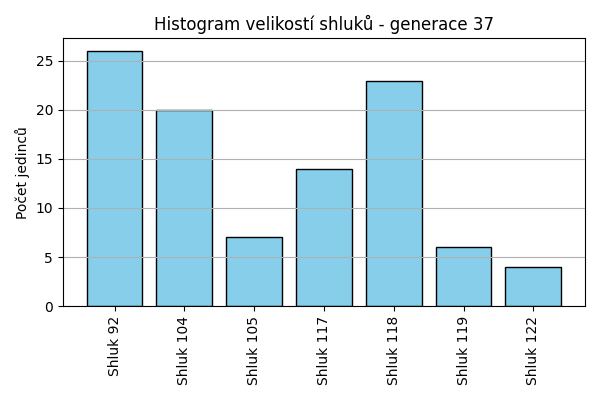
Stabilita mezi generací 36 → 37:
Shluk 104 → 122: 2 jedinců (8.0 %)
Shluk 104 → 118: 5 jedinců (20.0 %)
Shluk 104 → 104: 6 jedinců (24.0 %)
Shluk 104 → 92: 6 jedinců (24.0 %)
Shluk 104 → 117: 4 jedinců (16.0 %)
Shluk 104 → 119: 1 jedinců (4.0 %)
Shluk 104 → 105: 1 jedinců (4.0 %)
Shluk 119 → 104: 3 jedinců (27.3 %)
Shluk 119 → 119: 2 jedinců (18.2 %)
Shluk 119 → 92: 3 jedinců (27.3 %)
Shluk 119 → 117: 1 jedinců (9.1 %)
Shluk 119 → 118: 1 jedinců (9.1 %)
Shluk 119 → 105: 1 jedinců (9.1 %)
Shluk 105 → 104: 4 jedinců (23.5 %)
Shluk 105 → 92: 4 jedinců (23.5 %)
Shluk 105 → 105: 4 jedinců (23.5 %)
Shluk 105 → 118: 2 jedinců (11.8 %)
Shluk 105 → 117: 2 jedinců (11.8 %)
Shluk 105 → 119: 1 jedinců (5.9 %)
Shluk 120 → 92: 2 jedinců (33.3 %)
Shluk 120 → 118: 3 jedinců (50.0 %)
Shluk 120 → 122: 1 jedinců (16.7 %)
Shluk 121 → 104: 3 jedinců (60.0 %)
Shluk 121 → 117: 1 jedinců (20.0 %)
Shluk 121 → 92: 1 jedinců (20.0 %)
Shluk 118 → 118: 5 jedinců (62.5 %)
Shluk 118 → 104: 1 jedinců (12.5 %)
Shluk 118 → 92: 2 jedinců (25.0 %)
Shluk 113 → 118: 4 jedinců (66.7 %)
Shluk 113 → 117: 1 jedinců (16.7 %)
Shluk 113 → 119: 1 jedinců (16.7 %)
Shluk 92 → 92: 4 jedinců (36.4 %)
Shluk 92 → 117: 2 jedinců (18.2 %)
Shluk 92 → 104: 2 jedinců (18.2 %)
Shluk 92 → 118: 2 jedinců (18.2 %)
Shluk 92 → 122: 1 jedinců (9.1 %)
Shluk 117 → 117: 3 jedinců (27.3 %)
Shluk 117 → 104: 1 jedinců (9.1 %)
Shluk 117 → 92: 4 jedinců (36.4 %)
Shluk 117 → 105: 1 jedinců (9.1 %)
Shluk 117 → 119: 1 jedinců (9.1 %)
Shluk 117 → 118: 1 jedinců (9.1 %)
Jaccardovo mapování a overlap: Generace 36 → 37
- Shluk 104 → 104 (Jaccard: 0.15, Overlap: 0.30)
- Shluk 119 → 119 (Jaccard: 0.13, Overlap: 0.33)
- Shluk 105 → 105 (Jaccard: 0.20, Overlap: 0.57)
- Shluk 120 → 118 (Jaccard: 0.12, Overlap: 0.50)
- Shluk 121 → 104 (Jaccard: 0.14, Overlap: 0.60)
- Shluk 118 → 118 (Jaccard: 0.19, Overlap: 0.62)
- Shluk 113 → 118 (Jaccard: 0.16, Overlap: 0.67)
- Shluk 92 → 92 (Jaccard: 0.12, Overlap: 0.36)
- Shluk 117 → 117 (Jaccard: 0.14, Overlap: 0.27)
Posun centroidů mezi generací 36 → 37:
- Shluk 0: 1.9187
- Shluk 1: 1.4445
- Shluk 2: 2.0819
- Shluk 3: 1.9641
- Shluk 4: 1.5191
- Shluk 5: 2.3253
- Shluk 6: 1.2299
Generace 38
Stabilita mezi generací 37 → 38:
Shluk 122 → 122: 2 jedinců (50.0 %)
Shluk 122 → 119: 1 jedinců (25.0 %)
Shluk 122 → 117: 1 jedinců (25.0 %)
Shluk 104 → 104: 9 jedinců (45.0 %)
Shluk 104 → 124: 2 jedinců (10.0 %)
Shluk 104 → 105: 1 jedinců (5.0 %)
Shluk 104 → 122: 1 jedinců (5.0 %)
Shluk 104 → 117: 1 jedinců (5.0 %)
Shluk 104 → 123: 1 jedinců (5.0 %)
Shluk 104 → 92: 4 jedinců (20.0 %)
Shluk 104 → 125: 1 jedinců (5.0 %)
Shluk 92 → 123: 3 jedinců (11.5 %)
Shluk 92 → 92: 9 jedinců (34.6 %)
Shluk 92 → 104: 3 jedinců (11.5 %)
Shluk 92 → 124: 3 jedinců (11.5 %)
Shluk 92 → 117: 3 jedinců (11.5 %)
Shluk 92 → 105: 3 jedinců (11.5 %)
Shluk 92 → 122: 1 jedinců (3.8 %)
Shluk 92 → 125: 1 jedinců (3.8 %)
Shluk 118 → 124: 2 jedinců (8.7 %)
Shluk 118 → 125: 3 jedinců (13.0 %)
Shluk 118 → 117: 4 jedinců (17.4 %)
Shluk 118 → 122: 4 jedinců (17.4 %)
Shluk 118 → 119: 1 jedinců (4.3 %)
Shluk 118 → 104: 4 jedinců (17.4 %)
Shluk 118 → 92: 3 jedinců (13.0 %)
Shluk 118 → 123: 1 jedinců (4.3 %)
Shluk 118 → 105: 1 jedinců (4.3 %)
Shluk 119 → 104: 1 jedinců (16.7 %)
Shluk 119 → 125: 1 jedinců (16.7 %)
Shluk 119 → 92: 1 jedinců (16.7 %)
Shluk 119 → 119: 1 jedinců (16.7 %)
Shluk 119 → 105: 1 jedinců (16.7 %)
Shluk 119 → 122: 1 jedinců (16.7 %)
Shluk 105 → 92: 1 jedinců (14.3 %)
Shluk 105 → 117: 1 jedinců (14.3 %)
Shluk 105 → 122: 1 jedinců (14.3 %)
Shluk 105 → 105: 2 jedinců (28.6 %)
Shluk 105 → 104: 1 jedinců (14.3 %)
Shluk 105 → 125: 1 jedinců (14.3 %)
Shluk 117 → 117: 3 jedinců (21.4 %)
Shluk 117 → 119: 2 jedinců (14.3 %)
Shluk 117 → 125: 1 jedinců (7.1 %)
Shluk 117 → 122: 2 jedinců (14.3 %)
Shluk 117 → 105: 2 jedinců (14.3 %)
Shluk 117 → 104: 3 jedinců (21.4 %)
Shluk 117 → 123: 1 jedinců (7.1 %)
Jaccardovo mapování a overlap: Generace 37 → 38
- Shluk 122 → 122 (Jaccard: 0.14, Overlap: 0.50)
- Shluk 104 → 104 (Jaccard: 0.28, Overlap: 0.45)
- Shluk 92 → 92 (Jaccard: 0.26, Overlap: 0.50)
- Shluk 118 → 122 (Jaccard: 0.13, Overlap: 0.33)
- Shluk 119 → 119 (Jaccard: 0.10, Overlap: 0.20)
- Shluk 105 → 105 (Jaccard: 0.13, Overlap: 0.29)
- Shluk 117 → 117 (Jaccard: 0.12, Overlap: 0.23)
Posun centroidů mezi generací 37 → 38:
- Shluk 0: 1.4412
- Shluk 1: 1.3961
- Shluk 2: 3.0442
- Shluk 3: 1.3172
- Shluk 4: 2.0161
- Shluk 5: 2.7383
- Shluk 6: 1.2786
Generace 39
Stabilita mezi generací 38 → 39:
Shluk 122 → 123: 4 jedinců (33.3 %)
Shluk 122 → 104: 5 jedinců (41.7 %)
Shluk 122 → 119: 2 jedinců (16.7 %)
Shluk 122 → 125: 1 jedinců (8.3 %)
Shluk 104 → 119: 2 jedinců (9.5 %)
Shluk 104 → 123: 7 jedinců (33.3 %)
Shluk 104 → 104: 9 jedinců (42.9 %)
Shluk 104 → 125: 3 jedinců (14.3 %)
Shluk 123 → 123: 4 jedinců (66.7 %)
Shluk 123 → 104: 2 jedinců (33.3 %)
Shluk 124 → 104: 3 jedinců (42.9 %)
Shluk 124 → 119: 2 jedinců (28.6 %)
Shluk 124 → 124: 2 jedinců (28.6 %)
Shluk 92 → 104: 8 jedinců (44.4 %)
Shluk 92 → 123: 6 jedinců (33.3 %)
Shluk 92 → 119: 3 jedinců (16.7 %)
Shluk 92 → 125: 1 jedinců (5.6 %)
Shluk 125 → 123: 4 jedinců (50.0 %)
Shluk 125 → 119: 1 jedinců (12.5 %)
Shluk 125 → 125: 3 jedinců (37.5 %)
Shluk 117 → 119: 2 jedinců (15.4 %)
Shluk 117 → 104: 4 jedinců (30.8 %)
Shluk 117 → 123: 4 jedinců (30.8 %)
Shluk 117 → 125: 1 jedinců (7.7 %)
Shluk 117 → 124: 2 jedinců (15.4 %)
Shluk 105 → 123: 3 jedinců (30.0 %)
Shluk 105 → 104: 4 jedinců (40.0 %)
Shluk 105 → 125: 3 jedinců (30.0 %)
Shluk 119 → 104: 2 jedinců (40.0 %)
Shluk 119 → 119: 1 jedinců (20.0 %)
Shluk 119 → 125: 1 jedinců (20.0 %)
Shluk 119 → 123: 1 jedinců (20.0 %)
Jaccardovo mapování a overlap: Generace 38 → 39
- Shluk 122 → 104 (Jaccard: 0.11, Overlap: 0.42)
- Shluk 104 → 104 (Jaccard: 0.18, Overlap: 0.43)
- Shluk 123 → 123 (Jaccard: 0.11, Overlap: 0.67)
- Shluk 124 → 124 (Jaccard: 0.22, Overlap: 0.50)
- Shluk 92 → 104 (Jaccard: 0.17, Overlap: 0.44)
- Shluk 125 → 125 (Jaccard: 0.17, Overlap: 0.38)
- Shluk 117 → 124 (Jaccard: 0.13, Overlap: 0.50)
- Shluk 105 → 125 (Jaccard: 0.15, Overlap: 0.30)
- Shluk 119 → 119 (Jaccard: 0.06, Overlap: 0.20)
Posun centroidů mezi generací 38 → 39:
- Shluk 0: 1.5588
- Shluk 1: 1.0139
- Shluk 2: 3.1152
- Shluk 3: 2.9187
- Shluk 4: 1.7611
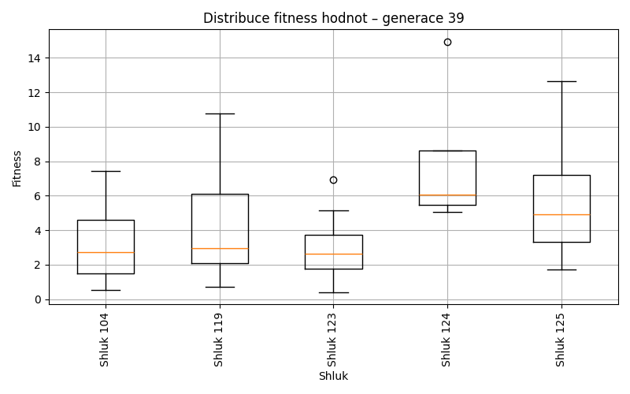
Generace 40
Stabilita mezi generací 39 → 40:
Shluk 123 → 126: 7 jedinců (21.2 %)
Shluk 123 → 119: 3 jedinců (9.1 %)
Shluk 123 → 123: 11 jedinců (33.3 %)
Shluk 123 → 127: 4 jedinců (12.1 %)
Shluk 123 → 128: 3 jedinců (9.1 %)
Shluk 123 → 124: 2 jedinců (6.1 %)
Shluk 123 → 125: 3 jedinců (9.1 %)
Shluk 119 → 127: 3 jedinců (23.1 %)
Shluk 119 → 128: 1 jedinců (7.7 %)
Shluk 119 → 126: 3 jedinců (23.1 %)
Shluk 119 → 119: 3 jedinců (23.1 %)
Shluk 119 → 125: 2 jedinců (15.4 %)
Shluk 119 → 129: 1 jedinců (7.7 %)
Shluk 104 → 125: 6 jedinců (16.2 %)
Shluk 104 → 127: 2 jedinců (5.4 %)
Shluk 104 → 126: 6 jedinců (16.2 %)
Shluk 104 → 123: 9 jedinců (24.3 %)
Shluk 104 → 128: 8 jedinců (21.6 %)
Shluk 104 → 119: 4 jedinců (10.8 %)
Shluk 104 → 129: 2 jedinců (5.4 %)
Shluk 125 → 126: 3 jedinců (23.1 %)
Shluk 125 → 123: 1 jedinců (7.7 %)
Shluk 125 → 128: 3 jedinců (23.1 %)
Shluk 125 → 125: 3 jedinců (23.1 %)
Shluk 125 → 129: 1 jedinců (7.7 %)
Shluk 125 → 127: 2 jedinců (15.4 %)
Shluk 124 → 126: 1 jedinců (25.0 %)
Shluk 124 → 124: 2 jedinců (50.0 %)
Shluk 124 → 125: 1 jedinců (25.0 %)
Jaccardovo mapování a overlap: Generace 39 → 40
- Shluk 123 → 123 (Jaccard: 0.26, Overlap: 0.52)
- Shluk 119 → 119 (Jaccard: 0.15, Overlap: 0.30)
- Shluk 104 → 123 (Jaccard: 0.18, Overlap: 0.43)
- Shluk 125 → 125 (Jaccard: 0.12, Overlap: 0.23)
- Shluk 124 → 124 (Jaccard: 0.33, Overlap: 0.50)
Posun centroidů mezi generací 39 → 40:
- Shluk 0: 1.0869
- Shluk 1: 1.4442
- Shluk 2: 1.9950
- Shluk 3: 2.4396
- Shluk 4: 1.0540
Generace 41
Stabilita mezi generací 40 → 41:
Shluk 126 → 119: 2 jedinců (10.0 %)
Shluk 126 → 124: 3 jedinců (15.0 %)
Shluk 126 → 131: 1 jedinců (5.0 %)
Shluk 126 → 130: 5 jedinců (25.0 %)
Shluk 126 → 123: 6 jedinců (30.0 %)
Shluk 126 → 127: 1 jedinců (5.0 %)
Shluk 126 → 125: 2 jedinců (10.0 %)
Shluk 127 → 130: 3 jedinců (27.3 %)
Shluk 127 → 125: 2 jedinců (18.2 %)
Shluk 127 → 124: 1 jedinců (9.1 %)
Shluk 127 → 123: 2 jedinců (18.2 %)
Shluk 127 → 127: 2 jedinců (18.2 %)
Shluk 127 → 119: 1 jedinců (9.1 %)
Shluk 119 → 123: 2 jedinců (20.0 %)
Shluk 119 → 130: 2 jedinců (20.0 %)
Shluk 119 → 125: 2 jedinců (20.0 %)
Shluk 119 → 119: 2 jedinců (20.0 %)
Shluk 119 → 131: 1 jedinců (10.0 %)
Shluk 119 → 124: 1 jedinců (10.0 %)
Shluk 125 → 125: 4 jedinců (26.7 %)
Shluk 125 → 127: 2 jedinců (13.3 %)
Shluk 125 → 123: 6 jedinců (40.0 %)
Shluk 125 → 119: 1 jedinců (6.7 %)
Shluk 125 → 130: 1 jedinců (6.7 %)
Shluk 125 → 124: 1 jedinců (6.7 %)
Shluk 128 → 123: 6 jedinců (40.0 %)
Shluk 128 → 127: 3 jedinců (20.0 %)
Shluk 128 → 130: 4 jedinců (26.7 %)
Shluk 128 → 124: 1 jedinců (6.7 %)
Shluk 128 → 119: 1 jedinců (6.7 %)
Shluk 123 → 127: 1 jedinců (4.8 %)
Shluk 123 → 123: 8 jedinců (38.1 %)
Shluk 123 → 130: 7 jedinců (33.3 %)
Shluk 123 → 124: 2 jedinců (9.5 %)
Shluk 123 → 119: 2 jedinců (9.5 %)
Shluk 123 → 125: 1 jedinců (4.8 %)
Shluk 129 → 119: 1 jedinců (25.0 %)
Shluk 129 → 125: 2 jedinců (50.0 %)
Shluk 129 → 130: 1 jedinců (25.0 %)
Shluk 124 → 124: 1 jedinců (25.0 %)
Shluk 124 → 130: 2 jedinců (50.0 %)
Shluk 124 → 119: 1 jedinců (25.0 %)
Jaccardovo mapování a overlap: Generace 40 → 41
- Shluk 126 → 123 (Jaccard: 0.14, Overlap: 0.30)
- Shluk 127 → 127 (Jaccard: 0.11, Overlap: 0.22)
- Shluk 119 → 119 (Jaccard: 0.11, Overlap: 0.20)
- Shluk 125 → 125 (Jaccard: 0.17, Overlap: 0.31)
- Shluk 128 → 123 (Jaccard: 0.15, Overlap: 0.40)
- Shluk 123 → 123 (Jaccard: 0.19, Overlap: 0.38)
- Shluk 129 → 125 (Jaccard: 0.13, Overlap: 0.50)
- Shluk 124 → 124 (Jaccard: 0.08, Overlap: 0.25)
Posun centroidů mezi generací 40 → 41:
- Shluk 0: 1.6379
- Shluk 1: 1.3721
- Shluk 2: 1.8183
- Shluk 3: 1.5659
- Shluk 4: 1.2380
- Shluk 5: 2.4236
- Shluk 6: 3.0585
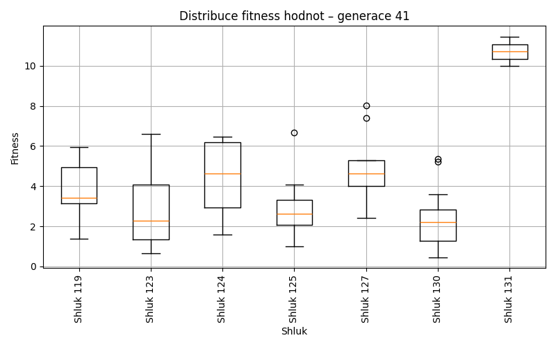
Generace 42

Stabilita mezi generací 41 → 42:
Shluk 119 → 125: 4 jedinců (36.4 %)
Shluk 119 → 124: 3 jedinců (27.3 %)
Shluk 119 → 123: 2 jedinců (18.2 %)
Shluk 119 → 133: 2 jedinců (18.2 %)
Shluk 130 → 125: 6 jedinců (24.0 %)
Shluk 130 → 132: 5 jedinců (20.0 %)
Shluk 130 → 123: 8 jedinců (32.0 %)
Shluk 130 → 133: 2 jedinců (8.0 %)
Shluk 130 → 124: 3 jedinců (12.0 %)
Shluk 130 → 131: 1 jedinců (4.0 %)
Shluk 123 → 132: 2 jedinců (6.7 %)
Shluk 123 → 124: 7 jedinců (23.3 %)
Shluk 123 → 123: 9 jedinců (30.0 %)
Shluk 123 → 125: 4 jedinců (13.3 %)
Shluk 123 → 134: 2 jedinců (6.7 %)
Shluk 123 → 127: 2 jedinců (6.7 %)
Shluk 123 → 131: 2 jedinců (6.7 %)
Shluk 123 → 133: 2 jedinců (6.7 %)
Shluk 124 → 123: 3 jedinců (30.0 %)
Shluk 124 → 124: 4 jedinců (40.0 %)
Shluk 124 → 125: 2 jedinců (20.0 %)
Shluk 124 → 127: 1 jedinců (10.0 %)
Shluk 125 → 125: 5 jedinců (38.5 %)
Shluk 125 → 124: 2 jedinců (15.4 %)
Shluk 125 → 123: 1 jedinců (7.7 %)
Shluk 125 → 133: 2 jedinců (15.4 %)
Shluk 125 → 132: 2 jedinců (15.4 %)
Shluk 125 → 131: 1 jedinců (7.7 %)
Shluk 127 → 125: 4 jedinců (44.4 %)
Shluk 127 → 127: 2 jedinců (22.2 %)
Shluk 127 → 134: 1 jedinců (11.1 %)
Shluk 127 → 124: 2 jedinců (22.2 %)
Shluk 131 → 133: 1 jedinců (50.0 %)
Shluk 131 → 131: 1 jedinců (50.0 %)
Jaccardovo mapování a overlap: Generace 41 → 42
- Shluk 119 → 125 (Jaccard: 0.12, Overlap: 0.36)
- Shluk 130 → 123 (Jaccard: 0.20, Overlap: 0.35)
- Shluk 123 → 123 (Jaccard: 0.20, Overlap: 0.39)
- Shluk 124 → 124 (Jaccard: 0.15, Overlap: 0.40)
- Shluk 125 → 125 (Jaccard: 0.15, Overlap: 0.38)
- Shluk 127 → 127 (Jaccard: 0.17, Overlap: 0.40)
- Shluk 131 → 131 (Jaccard: 0.17, Overlap: 0.50)
Posun centroidů mezi generací 41 → 42:
- Shluk 0: 1.0495
- Shluk 1: 1.6917
- Shluk 2: 1.7541
- Shluk 3: 1.8597
- Shluk 4: 1.7287
- Shluk 5: 2.0376
- Shluk 6: 3.4711
Generace 43
Stabilita mezi generací 42 → 43:
Shluk 125 → 135: 1 jedinců (4.0 %)
Shluk 125 → 136: 4 jedinců (16.0 %)
Shluk 125 → 123: 3 jedinců (12.0 %)
Shluk 125 → 137: 3 jedinců (12.0 %)
Shluk 125 → 125: 5 jedinců (20.0 %)
Shluk 125 → 134: 2 jedinců (8.0 %)
Shluk 125 → 124: 3 jedinců (12.0 %)
Shluk 125 → 138: 2 jedinců (8.0 %)
Shluk 125 → 127: 2 jedinců (8.0 %)
Shluk 132 → 124: 3 jedinců (33.3 %)
Shluk 132 → 123: 2 jedinců (22.2 %)
Shluk 132 → 127: 1 jedinců (11.1 %)
Shluk 132 → 135: 1 jedinců (11.1 %)
Shluk 132 → 138: 1 jedinců (11.1 %)
Shluk 132 → 125: 1 jedinců (11.1 %)
Shluk 123 → 135: 2 jedinců (8.7 %)
Shluk 123 → 124: 6 jedinců (26.1 %)
Shluk 123 → 134: 4 jedinců (17.4 %)
Shluk 123 → 123: 5 jedinců (21.7 %)
Shluk 123 → 136: 1 jedinců (4.3 %)
Shluk 123 → 138: 2 jedinců (8.7 %)
Shluk 123 → 137: 1 jedinců (4.3 %)
Shluk 123 → 131: 1 jedinců (4.3 %)
Shluk 123 → 125: 1 jedinců (4.3 %)
Shluk 127 → 124: 1 jedinců (20.0 %)
Shluk 127 → 137: 1 jedinců (20.0 %)
Shluk 127 → 133: 1 jedinců (20.0 %)
Shluk 127 → 125: 1 jedinců (20.0 %)
Shluk 127 → 127: 1 jedinců (20.0 %)
Shluk 133 → 131: 2 jedinců (22.2 %)
Shluk 133 → 134: 1 jedinců (11.1 %)
Shluk 133 → 125: 1 jedinců (11.1 %)
Shluk 133 → 133: 3 jedinců (33.3 %)
Shluk 133 → 124: 2 jedinců (22.2 %)
Shluk 124 → 124: 7 jedinců (33.3 %)
Shluk 124 → 136: 2 jedinců (9.5 %)
Shluk 124 → 137: 1 jedinců (4.8 %)
Shluk 124 → 127: 1 jedinců (4.8 %)
Shluk 124 → 135: 2 jedinců (9.5 %)
Shluk 124 → 134: 3 jedinců (14.3 %)
Shluk 124 → 125: 2 jedinců (9.5 %)
Shluk 124 → 138: 2 jedinců (9.5 %)
Shluk 124 → 123: 1 jedinců (4.8 %)
Shluk 134 → 134: 2 jedinců (66.7 %)
Shluk 134 → 124: 1 jedinců (33.3 %)
Shluk 131 → 131: 1 jedinců (20.0 %)
Shluk 131 → 133: 1 jedinců (20.0 %)
Shluk 131 → 123: 1 jedinců (20.0 %)
Shluk 131 → 124: 2 jedinců (40.0 %)
Jaccardovo mapování a overlap: Generace 42 → 43
- Shluk 125 → 125 (Jaccard: 0.16, Overlap: 0.45)
- Shluk 132 → 123 (Jaccard: 0.11, Overlap: 0.22)
- Shluk 123 → 123 (Jaccard: 0.17, Overlap: 0.42)
- Shluk 127 → 127 (Jaccard: 0.11, Overlap: 0.20)
- Shluk 133 → 133 (Jaccard: 0.27, Overlap: 0.60)
- Shluk 124 → 124 (Jaccard: 0.18, Overlap: 0.33)
- Shluk 134 → 134 (Jaccard: 0.15, Overlap: 0.67)
- Shluk 131 → 131 (Jaccard: 0.12, Overlap: 0.25)
Posun centroidů mezi generací 42 → 43:
- Shluk 0: 1.9515
- Shluk 1: 2.4740
- Shluk 2: 0.9999
- Shluk 3: 2.6281
- Shluk 4: 2.2573
- Shluk 5: 2.1366
- Shluk 6: 2.2585
- Shluk 7: 1.4328
Generace 44
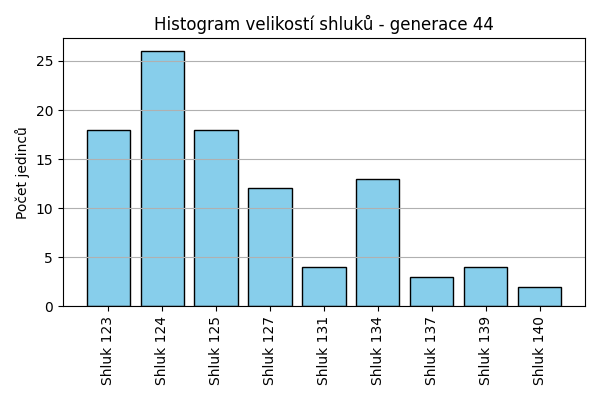
Stabilita mezi generací 43 → 44:
Shluk 135 → 124: 2 jedinců (33.3 %)
Shluk 135 → 125: 1 jedinců (16.7 %)
Shluk 135 → 127: 1 jedinců (16.7 %)
Shluk 135 → 134: 2 jedinců (33.3 %)
Shluk 136 → 137: 1 jedinců (14.3 %)
Shluk 136 → 123: 1 jedinců (14.3 %)
Shluk 136 → 125: 2 jedinců (28.6 %)
Shluk 136 → 127: 1 jedinců (14.3 %)
Shluk 136 → 139: 1 jedinců (14.3 %)
Shluk 136 → 134: 1 jedinců (14.3 %)
Shluk 124 → 125: 4 jedinců (16.0 %)
Shluk 124 → 123: 3 jedinců (12.0 %)
Shluk 124 → 124: 13 jedinců (52.0 %)
Shluk 124 → 131: 2 jedinců (8.0 %)
Shluk 124 → 134: 1 jedinců (4.0 %)
Shluk 124 → 139: 1 jedinců (4.0 %)
Shluk 124 → 127: 1 jedinců (4.0 %)
Shluk 123 → 124: 3 jedinců (25.0 %)
Shluk 123 → 123: 4 jedinců (33.3 %)
Shluk 123 → 139: 1 jedinců (8.3 %)
Shluk 123 → 125: 1 jedinců (8.3 %)
Shluk 123 → 134: 1 jedinců (8.3 %)
Shluk 123 → 127: 2 jedinců (16.7 %)
Shluk 137 → 123: 2 jedinců (33.3 %)
Shluk 137 → 137: 2 jedinců (33.3 %)
Shluk 137 → 125: 1 jedinců (16.7 %)
Shluk 137 → 134: 1 jedinců (16.7 %)
Shluk 125 → 125: 4 jedinců (36.4 %)
Shluk 125 → 123: 1 jedinců (9.1 %)
Shluk 125 → 140: 1 jedinců (9.1 %)
Shluk 125 → 127: 2 jedinců (18.2 %)
Shluk 125 → 131: 1 jedinců (9.1 %)
Shluk 125 → 134: 2 jedinců (18.2 %)
Shluk 131 → 123: 1 jedinců (25.0 %)
Shluk 131 → 125: 1 jedinců (25.0 %)
Shluk 131 → 124: 1 jedinců (25.0 %)
Shluk 131 → 131: 1 jedinců (25.0 %)
Shluk 127 → 127: 3 jedinců (60.0 %)
Shluk 127 → 125: 1 jedinců (20.0 %)
Shluk 127 → 123: 1 jedinců (20.0 %)
Shluk 134 → 124: 3 jedinců (25.0 %)
Shluk 134 → 127: 2 jedinců (16.7 %)
Shluk 134 → 134: 3 jedinců (25.0 %)
Shluk 134 → 125: 3 jedinců (25.0 %)
Shluk 134 → 140: 1 jedinců (8.3 %)
Shluk 138 → 123: 3 jedinců (42.9 %)
Shluk 138 → 139: 1 jedinců (14.3 %)
Shluk 138 → 124: 2 jedinců (28.6 %)
Shluk 138 → 134: 1 jedinců (14.3 %)
Shluk 133 → 124: 2 jedinců (40.0 %)
Shluk 133 → 123: 2 jedinců (40.0 %)
Shluk 133 → 134: 1 jedinců (20.0 %)
Jaccardovo mapování a overlap: Generace 43 → 44
- Shluk 135 → 134 (Jaccard: 0.12, Overlap: 0.33)
- Shluk 136 → 137 (Jaccard: 0.11, Overlap: 0.33)
- Shluk 124 → 124 (Jaccard: 0.34, Overlap: 0.52)
- Shluk 123 → 123 (Jaccard: 0.15, Overlap: 0.33)
- Shluk 137 → 137 (Jaccard: 0.29, Overlap: 0.67)
- Shluk 125 → 125 (Jaccard: 0.16, Overlap: 0.36)
- Shluk 131 → 131 (Jaccard: 0.14, Overlap: 0.25)
- Shluk 127 → 127 (Jaccard: 0.21, Overlap: 0.60)
- Shluk 134 → 134 (Jaccard: 0.14, Overlap: 0.25)
- Shluk 138 → 123 (Jaccard: 0.14, Overlap: 0.43)
- Shluk 133 → 123 (Jaccard: 0.10, Overlap: 0.40)
Posun centroidů mezi generací 43 → 44:
- Shluk 0: 1.7074
- Shluk 1: 2.4487
- Shluk 2: 0.6454
- Shluk 3: 2.3473
- Shluk 4: 1.6706
- Shluk 5: 2.1130
- Shluk 6: 2.2370
- Shluk 7: 2.2203
- Shluk 8: 2.9687
Generace 45
Stabilita mezi generací 44 → 45:
Shluk 124 → 124: 17 jedinců (65.4 %)
Shluk 124 → 141: 2 jedinců (7.7 %)
Shluk 124 → 140: 2 jedinců (7.7 %)
Shluk 124 → 127: 2 jedinců (7.7 %)
Shluk 124 → 137: 1 jedinců (3.8 %)
Shluk 124 → 143: 2 jedinců (7.7 %)
Shluk 137 → 137: 1 jedinců (33.3 %)
Shluk 137 → 124: 2 jedinců (66.7 %)
Shluk 125 → 124: 2 jedinců (11.1 %)
Shluk 125 → 140: 3 jedinců (16.7 %)
Shluk 125 → 125: 4 jedinců (22.2 %)
Shluk 125 → 127: 2 jedinců (11.1 %)
Shluk 125 → 123: 3 jedinců (16.7 %)
Shluk 125 → 143: 2 jedinců (11.1 %)
Shluk 125 → 142: 1 jedinců (5.6 %)
Shluk 125 → 137: 1 jedinců (5.6 %)
Shluk 123 → 124: 3 jedinců (16.7 %)
Shluk 123 → 140: 4 jedinců (22.2 %)
Shluk 123 → 142: 2 jedinců (11.1 %)
Shluk 123 → 123: 4 jedinců (22.2 %)
Shluk 123 → 127: 3 jedinců (16.7 %)
Shluk 123 → 137: 1 jedinců (5.6 %)
Shluk 123 → 143: 1 jedinců (5.6 %)
Shluk 139 → 124: 2 jedinců (50.0 %)
Shluk 139 → 137: 1 jedinců (25.0 %)
Shluk 139 → 127: 1 jedinců (25.0 %)
Shluk 127 → 123: 1 jedinců (8.3 %)
Shluk 127 → 127: 3 jedinců (25.0 %)
Shluk 127 → 142: 2 jedinců (16.7 %)
Shluk 127 → 124: 2 jedinců (16.7 %)
Shluk 127 → 143: 1 jedinců (8.3 %)
Shluk 127 → 125: 1 jedinců (8.3 %)
Shluk 127 → 141: 1 jedinců (8.3 %)
Shluk 127 → 140: 1 jedinců (8.3 %)
Shluk 140 → 140: 2 jedinců (100.0 %)
Shluk 134 → 123: 1 jedinců (7.7 %)
Shluk 134 → 124: 3 jedinců (23.1 %)
Shluk 134 → 141: 1 jedinců (7.7 %)
Shluk 134 → 142: 2 jedinců (15.4 %)
Shluk 134 → 140: 1 jedinců (7.7 %)
Shluk 134 → 125: 2 jedinců (15.4 %)
Shluk 134 → 143: 1 jedinců (7.7 %)
Shluk 134 → 127: 2 jedinců (15.4 %)
Shluk 131 → 124: 3 jedinců (75.0 %)
Shluk 131 → 137: 1 jedinců (25.0 %)
Jaccardovo mapování a overlap: Generace 44 → 45
- Shluk 124 → 124 (Jaccard: 0.40, Overlap: 0.65)
- Shluk 137 → 137 (Jaccard: 0.12, Overlap: 0.33)
- Shluk 125 → 125 (Jaccard: 0.19, Overlap: 0.57)
- Shluk 123 → 123 (Jaccard: 0.17, Overlap: 0.44)
- Shluk 139 → 137 (Jaccard: 0.11, Overlap: 0.25)
- Shluk 127 → 127 (Jaccard: 0.14, Overlap: 0.25)
- Shluk 140 → 140 (Jaccard: 0.15, Overlap: 1.00)
- Shluk 134 → 125 (Jaccard: 0.11, Overlap: 0.29)
- Shluk 131 → 137 (Jaccard: 0.11, Overlap: 0.25)
Posun centroidů mezi generací 44 → 45:
- Shluk 0: 1.1199
- Shluk 1: 1.7464
- Shluk 2: 1.8817
- Shluk 3: 1.9309
- Shluk 4: 2.2191
- Shluk 5: 1.4501
- Shluk 6: 2.4655
- Shluk 7: 2.2178
- Shluk 8: 2.7481
Generace 46
Stabilita mezi generací 45 → 46:
Shluk 124 → 124: 13 jedinců (38.2 %)
Shluk 124 → 140: 7 jedinců (20.6 %)
Shluk 124 → 142: 5 jedinců (14.7 %)
Shluk 124 → 125: 1 jedinců (2.9 %)
Shluk 124 → 143: 2 jedinců (5.9 %)
Shluk 124 → 141: 4 jedinců (11.8 %)
Shluk 124 → 144: 1 jedinců (2.9 %)
Shluk 124 → 137: 1 jedinců (2.9 %)
Shluk 137 → 137: 1 jedinců (16.7 %)
Shluk 137 → 124: 1 jedinců (16.7 %)
Shluk 137 → 144: 1 jedinců (16.7 %)
Shluk 137 → 125: 1 jedinců (16.7 %)
Shluk 137 → 140: 2 jedinců (33.3 %)
Shluk 140 → 140: 6 jedinců (46.2 %)
Shluk 140 → 143: 1 jedinců (7.7 %)
Shluk 140 → 125: 1 jedinců (7.7 %)
Shluk 140 → 124: 4 jedinců (30.8 %)
Shluk 140 → 123: 1 jedinců (7.7 %)
Shluk 141 → 144: 1 jedinců (25.0 %)
Shluk 141 → 141: 2 jedinců (50.0 %)
Shluk 141 → 124: 1 jedinců (25.0 %)
Shluk 125 → 140: 1 jedinců (14.3 %)
Shluk 125 → 125: 4 jedinců (57.1 %)
Shluk 125 → 141: 1 jedinců (14.3 %)
Shluk 125 → 137: 1 jedinců (14.3 %)
Shluk 142 → 123: 1 jedinců (14.3 %)
Shluk 142 → 142: 2 jedinců (28.6 %)
Shluk 142 → 124: 2 jedinců (28.6 %)
Shluk 142 → 140: 2 jedinců (28.6 %)
Shluk 123 → 123: 3 jedinců (33.3 %)
Shluk 123 → 142: 1 jedinců (11.1 %)
Shluk 123 → 125: 1 jedinců (11.1 %)
Shluk 123 → 124: 1 jedinců (11.1 %)
Shluk 123 → 143: 2 jedinců (22.2 %)
Shluk 123 → 140: 1 jedinců (11.1 %)
Shluk 127 → 124: 4 jedinců (30.8 %)
Shluk 127 → 143: 2 jedinců (15.4 %)
Shluk 127 → 142: 2 jedinců (15.4 %)
Shluk 127 → 123: 3 jedinců (23.1 %)
Shluk 127 → 140: 2 jedinců (15.4 %)
Shluk 143 → 140: 2 jedinců (28.6 %)
Shluk 143 → 124: 2 jedinců (28.6 %)
Shluk 143 → 143: 2 jedinců (28.6 %)
Shluk 143 → 142: 1 jedinců (14.3 %)
Jaccardovo mapování a overlap: Generace 45 → 46
- Shluk 124 → 124 (Jaccard: 0.27, Overlap: 0.46)
- Shluk 137 → 137 (Jaccard: 0.12, Overlap: 0.33)
- Shluk 140 → 140 (Jaccard: 0.20, Overlap: 0.46)
- Shluk 141 → 141 (Jaccard: 0.22, Overlap: 0.50)
- Shluk 125 → 125 (Jaccard: 0.36, Overlap: 0.57)
- Shluk 142 → 142 (Jaccard: 0.12, Overlap: 0.29)
- Shluk 123 → 123 (Jaccard: 0.21, Overlap: 0.38)
- Shluk 127 → 123 (Jaccard: 0.17, Overlap: 0.38)
- Shluk 143 → 143 (Jaccard: 0.14, Overlap: 0.29)
Posun centroidů mezi generací 45 → 46:
- Shluk 0: 1.0530
- Shluk 1: 1.3761
- Shluk 2: 2.5897
- Shluk 3: 1.4449
- Shluk 4: 2.6347
- Shluk 5: 1.8879
- Shluk 6: 2.6027
- Shluk 7: 1.9524
- Shluk 8: 1.5544

Generace 47
Stabilita mezi generací 46 → 47:
Shluk 124 → 144: 2 jedinců (7.1 %)
Shluk 124 → 140: 10 jedinců (35.7 %)
Shluk 124 → 125: 5 jedinců (17.9 %)
Shluk 124 → 147: 4 jedinců (14.3 %)
Shluk 124 → 146: 2 jedinců (7.1 %)
Shluk 124 → 137: 2 jedinců (7.1 %)
Shluk 124 → 145: 1 jedinců (3.6 %)
Shluk 124 → 123: 2 jedinců (7.1 %)
Shluk 137 → 137: 1 jedinců (33.3 %)
Shluk 137 → 145: 1 jedinců (33.3 %)
Shluk 137 → 146: 1 jedinců (33.3 %)
Shluk 140 → 145: 3 jedinců (13.0 %)
Shluk 140 → 123: 2 jedinců (8.7 %)
Shluk 140 → 146: 2 jedinců (8.7 %)
Shluk 140 → 125: 2 jedinců (8.7 %)
Shluk 140 → 140: 11 jedinců (47.8 %)
Shluk 140 → 144: 2 jedinců (8.7 %)
Shluk 140 → 147: 1 jedinců (4.3 %)
Shluk 144 → 144: 3 jedinců (100.0 %)
Shluk 142 → 140: 5 jedinců (45.5 %)
Shluk 142 → 142: 2 jedinců (18.2 %)
Shluk 142 → 125: 1 jedinců (9.1 %)
Shluk 142 → 145: 1 jedinců (9.1 %)
Shluk 142 → 144: 1 jedinců (9.1 %)
Shluk 142 → 123: 1 jedinců (9.1 %)
Shluk 143 → 125: 1 jedinců (11.1 %)
Shluk 143 → 145: 1 jedinců (11.1 %)
Shluk 143 → 137: 1 jedinců (11.1 %)
Shluk 143 → 140: 1 jedinců (11.1 %)
Shluk 143 → 146: 1 jedinců (11.1 %)
Shluk 143 → 123: 1 jedinců (11.1 %)
Shluk 143 → 142: 1 jedinců (11.1 %)
Shluk 143 → 144: 1 jedinců (11.1 %)
Shluk 143 → 147: 1 jedinců (11.1 %)
Shluk 125 → 145: 2 jedinců (25.0 %)
Shluk 125 → 137: 1 jedinců (12.5 %)
Shluk 125 → 125: 3 jedinců (37.5 %)
Shluk 125 → 146: 1 jedinců (12.5 %)
Shluk 125 → 123: 1 jedinců (12.5 %)
Shluk 123 → 145: 1 jedinců (12.5 %)
Shluk 123 → 123: 3 jedinců (37.5 %)
Shluk 123 → 140: 2 jedinců (25.0 %)
Shluk 123 → 146: 1 jedinců (12.5 %)
Shluk 123 → 142: 1 jedinců (12.5 %)
Shluk 141 → 140: 2 jedinců (28.6 %)
Shluk 141 → 125: 2 jedinců (28.6 %)
Shluk 141 → 142: 1 jedinců (14.3 %)
Shluk 141 → 123: 1 jedinců (14.3 %)
Shluk 141 → 145: 1 jedinců (14.3 %)
Jaccardovo mapování a overlap: Generace 46 → 47
- Shluk 124 → 140 (Jaccard: 0.20, Overlap: 0.36)
- Shluk 137 → 137 (Jaccard: 0.14, Overlap: 0.33)
- Shluk 140 → 140 (Jaccard: 0.26, Overlap: 0.48)
- Shluk 144 → 144 (Jaccard: 0.33, Overlap: 1.00)
- Shluk 142 → 142 (Jaccard: 0.14, Overlap: 0.40)
- Shluk 143 → 137 (Jaccard: 0.08, Overlap: 0.20)
- Shluk 125 → 125 (Jaccard: 0.16, Overlap: 0.38)
- Shluk 123 → 123 (Jaccard: 0.19, Overlap: 0.38)
- Shluk 141 → 125 (Jaccard: 0.11, Overlap: 0.29)
Posun centroidů mezi generací 46 → 47:
- Shluk 0: 0.6974
- Shluk 1: 1.7323
- Shluk 2: 1.6885
- Shluk 3: 1.4158
- Shluk 4: 2.5111
- Shluk 5: 1.4297
- Shluk 6: 2.6187
- Shluk 7: 2.0605
- Shluk 8: 1.9315
Generace 48
Stabilita mezi generací 47 → 48:
Shluk 144 → 148: 1 jedinců (11.1 %)
Shluk 144 → 140: 3 jedinců (33.3 %)
Shluk 144 → 146: 1 jedinců (11.1 %)
Shluk 144 → 142: 1 jedinců (11.1 %)
Shluk 144 → 147: 2 jedinců (22.2 %)
Shluk 144 → 149: 1 jedinců (11.1 %)
Shluk 137 → 145: 1 jedinců (20.0 %)
Shluk 137 → 140: 1 jedinců (20.0 %)
Shluk 137 → 123: 1 jedinců (20.0 %)
Shluk 137 → 149: 1 jedinců (20.0 %)
Shluk 137 → 146: 1 jedinců (20.0 %)
Shluk 145 → 145: 3 jedinců (27.3 %)
Shluk 145 → 147: 2 jedinců (18.2 %)
Shluk 145 → 148: 2 jedinců (18.2 %)
Shluk 145 → 142: 1 jedinců (9.1 %)
Shluk 145 → 150: 1 jedinců (9.1 %)
Shluk 145 → 151: 1 jedinců (9.1 %)
Shluk 145 → 140: 1 jedinců (9.1 %)
Shluk 123 → 140: 1 jedinců (9.1 %)
Shluk 123 → 123: 4 jedinců (36.4 %)
Shluk 123 → 145: 1 jedinců (9.1 %)
Shluk 123 → 149: 1 jedinců (9.1 %)
Shluk 123 → 147: 2 jedinců (18.2 %)
Shluk 123 → 148: 1 jedinců (9.1 %)
Shluk 123 → 146: 1 jedinců (9.1 %)
Shluk 140 → 146: 2 jedinců (6.5 %)
Shluk 140 → 148: 3 jedinců (9.7 %)
Shluk 140 → 140: 12 jedinců (38.7 %)
Shluk 140 → 147: 3 jedinců (9.7 %)
Shluk 140 → 150: 1 jedinců (3.2 %)
Shluk 140 → 123: 3 jedinců (9.7 %)
Shluk 140 → 151: 2 jedinců (6.5 %)
Shluk 140 → 142: 1 jedinců (3.2 %)
Shluk 140 → 145: 1 jedinců (3.2 %)
Shluk 140 → 149: 3 jedinců (9.7 %)
Shluk 146 → 146: 2 jedinců (25.0 %)
Shluk 146 → 145: 2 jedinců (25.0 %)
Shluk 146 → 123: 1 jedinců (12.5 %)
Shluk 146 → 149: 1 jedinců (12.5 %)
Shluk 146 → 151: 1 jedinců (12.5 %)
Shluk 146 → 142: 1 jedinců (12.5 %)
Shluk 125 → 140: 5 jedinců (35.7 %)
Shluk 125 → 147: 2 jedinců (14.3 %)
Shluk 125 → 142: 1 jedinců (7.1 %)
Shluk 125 → 123: 3 jedinců (21.4 %)
Shluk 125 → 148: 1 jedinců (7.1 %)
Shluk 125 → 150: 1 jedinců (7.1 %)
Shluk 125 → 145: 1 jedinců (7.1 %)
Shluk 147 → 147: 2 jedinců (33.3 %)
Shluk 147 → 151: 1 jedinců (16.7 %)
Shluk 147 → 150: 1 jedinců (16.7 %)
Shluk 147 → 142: 1 jedinců (16.7 %)
Shluk 147 → 146: 1 jedinců (16.7 %)
Shluk 142 → 149: 1 jedinců (20.0 %)
Shluk 142 → 148: 1 jedinců (20.0 %)
Shluk 142 → 142: 1 jedinců (20.0 %)
Shluk 142 → 140: 2 jedinců (40.0 %)
Jaccardovo mapování a overlap: Generace 47 → 48
- Shluk 144 → 147 (Jaccard: 0.10, Overlap: 0.22)
- Shluk 137 → 146 (Jaccard: 0.08, Overlap: 0.20)
- Shluk 145 → 145 (Jaccard: 0.18, Overlap: 0.33)
- Shluk 123 → 123 (Jaccard: 0.21, Overlap: 0.36)
- Shluk 140 → 140 (Jaccard: 0.27, Overlap: 0.48)
- Shluk 146 → 146 (Jaccard: 0.14, Overlap: 0.25)
- Shluk 125 → 140 (Jaccard: 0.15, Overlap: 0.36)
- Shluk 147 → 147 (Jaccard: 0.12, Overlap: 0.33)
- Shluk 142 → 142 (Jaccard: 0.09, Overlap: 0.20)
Posun centroidů mezi generací 47 → 48:
- Shluk 0: 1.5722
- Shluk 1: 1.9817
- Shluk 2: 1.8500
- Shluk 3: 2.3308
- Shluk 4: 1.4487
- Shluk 5: 2.4408
- Shluk 6: 2.0211
- Shluk 7: 1.7641
- Shluk 8: 2.2979
Generace 49
Stabilita mezi generací 48 → 49:
Shluk 148 → 140: 4 jedinců (44.4 %)
Shluk 148 → 148: 3 jedinců (33.3 %)
Shluk 148 → 146: 2 jedinců (22.2 %)
Shluk 145 → 140: 5 jedinců (55.6 %)
Shluk 145 → 145: 2 jedinců (22.2 %)
Shluk 145 → 152: 1 jedinců (11.1 %)
Shluk 145 → 150: 1 jedinců (11.1 %)
Shluk 140 → 140: 16 jedinců (64.0 %)
Shluk 140 → 152: 4 jedinců (16.0 %)
Shluk 140 → 145: 2 jedinců (8.0 %)
Shluk 140 → 150: 1 jedinců (4.0 %)
Shluk 140 → 146: 1 jedinců (4.0 %)
Shluk 140 → 148: 1 jedinců (4.0 %)
Shluk 146 → 142: 1 jedinců (12.5 %)
Shluk 146 → 146: 2 jedinců (25.0 %)
Shluk 146 → 140: 3 jedinců (37.5 %)
Shluk 146 → 152: 1 jedinců (12.5 %)
Shluk 146 → 148: 1 jedinců (12.5 %)
Shluk 147 → 152: 1 jedinců (7.7 %)
Shluk 147 → 140: 8 jedinců (61.5 %)
Shluk 147 → 148: 1 jedinců (7.7 %)
Shluk 147 → 145: 1 jedinců (7.7 %)
Shluk 147 → 142: 1 jedinců (7.7 %)
Shluk 147 → 123: 1 jedinců (7.7 %)
Shluk 123 → 140: 6 jedinců (50.0 %)
Shluk 123 → 149: 1 jedinců (8.3 %)
Shluk 123 → 123: 2 jedinců (16.7 %)
Shluk 123 → 145: 1 jedinců (8.3 %)
Shluk 123 → 150: 2 jedinců (16.7 %)
Shluk 142 → 148: 1 jedinců (14.3 %)
Shluk 142 → 146: 1 jedinců (14.3 %)
Shluk 142 → 152: 1 jedinců (14.3 %)
Shluk 142 → 142: 1 jedinců (14.3 %)
Shluk 142 → 145: 1 jedinců (14.3 %)
Shluk 142 → 140: 2 jedinců (28.6 %)
Shluk 149 → 140: 3 jedinců (37.5 %)
Shluk 149 → 150: 1 jedinců (12.5 %)
Shluk 149 → 149: 2 jedinců (25.0 %)
Shluk 149 → 152: 2 jedinců (25.0 %)
Shluk 150 → 140: 2 jedinců (50.0 %)
Shluk 150 → 150: 1 jedinců (25.0 %)
Shluk 150 → 145: 1 jedinců (25.0 %)
Shluk 151 → 146: 1 jedinců (20.0 %)
Shluk 151 → 145: 1 jedinců (20.0 %)
Shluk 151 → 148: 1 jedinců (20.0 %)
Shluk 151 → 150: 1 jedinců (20.0 %)
Shluk 151 → 152: 1 jedinců (20.0 %)
Jaccardovo mapování a overlap: Generace 48 → 49
- Shluk 148 → 148 (Jaccard: 0.21, Overlap: 0.38)
- Shluk 145 → 145 (Jaccard: 0.12, Overlap: 0.22)
- Shluk 140 → 140 (Jaccard: 0.28, Overlap: 0.64)
- Shluk 146 → 146 (Jaccard: 0.15, Overlap: 0.29)
- Shluk 147 → 140 (Jaccard: 0.15, Overlap: 0.62)
- Shluk 123 → 123 (Jaccard: 0.15, Overlap: 0.67)
- Shluk 142 → 142 (Jaccard: 0.11, Overlap: 0.33)
- Shluk 149 → 149 (Jaccard: 0.22, Overlap: 0.67)
- Shluk 150 → 150 (Jaccard: 0.10, Overlap: 0.25)
- Shluk 151 → 146 (Jaccard: 0.09, Overlap: 0.20)
Posun centroidů mezi generací 48 → 49:
- Shluk 0: 1.1125
- Shluk 1: 1.4879
- Shluk 2: 1.5813
- Shluk 3: 1.7746
- Shluk 4: 1.9617
- Shluk 5: 2.0430
- Shluk 6: 2.3226
- Shluk 7: 1.6497
- Shluk 8: 3.1113
Generace 50
Stabilita mezi generací 49 → 50:
Shluk 140 → 150: 10 jedinců (20.4 %)
Shluk 140 → 153: 5 jedinců (10.2 %)
Shluk 140 → 140: 12 jedinců (24.5 %)
Shluk 140 → 154: 5 jedinců (10.2 %)
Shluk 140 → 156: 5 jedinců (10.2 %)
Shluk 140 → 155: 3 jedinců (6.1 %)
Shluk 140 → 146: 3 jedinců (6.1 %)
Shluk 140 → 157: 5 jedinců (10.2 %)
Shluk 140 → 145: 1 jedinců (2.0 %)
Shluk 142 → 140: 2 jedinců (66.7 %)
Shluk 142 → 153: 1 jedinců (33.3 %)
Shluk 146 → 155: 1 jedinců (14.3 %)
Shluk 146 → 149: 2 jedinců (28.6 %)
Shluk 146 → 150: 1 jedinců (14.3 %)
Shluk 146 → 146: 3 jedinců (42.9 %)
Shluk 152 → 140: 1 jedinců (9.1 %)
Shluk 152 → 145: 2 jedinců (18.2 %)
Shluk 152 → 150: 2 jedinců (18.2 %)
Shluk 152 → 154: 1 jedinců (9.1 %)
Shluk 152 → 155: 1 jedinců (9.1 %)
Shluk 152 → 153: 2 jedinců (18.2 %)
Shluk 152 → 157: 1 jedinců (9.1 %)
Shluk 152 → 146: 1 jedinců (9.1 %)
Shluk 145 → 145: 2 jedinců (22.2 %)
Shluk 145 → 153: 1 jedinců (11.1 %)
Shluk 145 → 154: 1 jedinců (11.1 %)
Shluk 145 → 140: 2 jedinců (22.2 %)
Shluk 145 → 155: 1 jedinců (11.1 %)
Shluk 145 → 157: 1 jedinců (11.1 %)
Shluk 145 → 149: 1 jedinců (11.1 %)
Shluk 148 → 140: 3 jedinců (37.5 %)
Shluk 148 → 146: 1 jedinců (12.5 %)
Shluk 148 → 150: 2 jedinců (25.0 %)
Shluk 148 → 149: 1 jedinců (12.5 %)
Shluk 148 → 145: 1 jedinců (12.5 %)
Shluk 149 → 149: 1 jedinců (33.3 %)
Shluk 149 → 146: 1 jedinců (33.3 %)
Shluk 149 → 150: 1 jedinců (33.3 %)
Shluk 150 → 150: 3 jedinců (42.9 %)
Shluk 150 → 145: 1 jedinců (14.3 %)
Shluk 150 → 155: 1 jedinců (14.3 %)
Shluk 150 → 146: 1 jedinců (14.3 %)
Shluk 150 → 149: 1 jedinců (14.3 %)
Shluk 123 → 157: 1 jedinců (33.3 %)
Shluk 123 → 149: 1 jedinců (33.3 %)
Shluk 123 → 146: 1 jedinců (33.3 %)
Jaccardovo mapování a overlap: Generace 49 → 50
- Shluk 140 → 140 (Jaccard: 0.21, Overlap: 0.60)
- Shluk 142 → 140 (Jaccard: 0.10, Overlap: 0.67)
- Shluk 146 → 146 (Jaccard: 0.20, Overlap: 0.43)
- Shluk 152 → 145 (Jaccard: 0.12, Overlap: 0.29)
- Shluk 145 → 145 (Jaccard: 0.14, Overlap: 0.29)
- Shluk 148 → 140 (Jaccard: 0.12, Overlap: 0.38)
- Shluk 149 → 149 (Jaccard: 0.11, Overlap: 0.33)
- Shluk 150 → 150 (Jaccard: 0.13, Overlap: 0.43)
- Shluk 123 → 149 (Jaccard: 0.11, Overlap: 0.33)
Posun centroidů mezi generací 49 → 50:
- Shluk 0: 1.1229
- Shluk 1: 2.4668
- Shluk 2: 1.4585
- Shluk 3: 1.6412
- Shluk 4: 1.7165
- Shluk 5: 2.4334
- Shluk 6: 2.0131
- Shluk 7: 1.9602
- Shluk 8: 2.0915
Generace 51
Stabilita mezi generací 50 → 51:
Shluk 150 → 150: 7 jedinců (36.8 %)
Shluk 150 → 153: 2 jedinců (10.5 %)
Shluk 150 → 159: 2 jedinců (10.5 %)
Shluk 150 → 154: 4 jedinců (21.1 %)
Shluk 150 → 140: 2 jedinců (10.5 %)
Shluk 150 → 158: 2 jedinců (10.5 %)
Shluk 153 → 158: 2 jedinců (22.2 %)
Shluk 153 → 154: 1 jedinců (11.1 %)
Shluk 153 → 153: 3 jedinců (33.3 %)
Shluk 153 → 155: 1 jedinců (11.1 %)
Shluk 153 → 156: 2 jedinců (22.2 %)
Shluk 140 → 156: 2 jedinců (10.0 %)
Shluk 140 → 155: 1 jedinců (5.0 %)
Shluk 140 → 150: 2 jedinců (10.0 %)
Shluk 140 → 140: 4 jedinců (20.0 %)
Shluk 140 → 145: 2 jedinců (10.0 %)
Shluk 140 → 158: 4 jedinců (20.0 %)
Shluk 140 → 154: 4 jedinců (20.0 %)
Shluk 140 → 153: 1 jedinců (5.0 %)
Shluk 154 → 159: 1 jedinců (14.3 %)
Shluk 154 → 154: 4 jedinců (57.1 %)
Shluk 154 → 150: 1 jedinců (14.3 %)
Shluk 154 → 140: 1 jedinců (14.3 %)
Shluk 155 → 155: 3 jedinců (42.9 %)
Shluk 155 → 153: 1 jedinců (14.3 %)
Shluk 155 → 156: 1 jedinců (14.3 %)
Shluk 155 → 149: 1 jedinců (14.3 %)
Shluk 155 → 150: 1 jedinců (14.3 %)
Shluk 145 → 155: 1 jedinců (14.3 %)
Shluk 145 → 154: 1 jedinců (14.3 %)
Shluk 145 → 145: 1 jedinců (14.3 %)
Shluk 145 → 153: 1 jedinců (14.3 %)
Shluk 145 → 158: 1 jedinců (14.3 %)
Shluk 145 → 149: 1 jedinců (14.3 %)
Shluk 145 → 150: 1 jedinců (14.3 %)
Shluk 156 → 140: 2 jedinců (40.0 %)
Shluk 156 → 156: 2 jedinců (40.0 %)
Shluk 156 → 154: 1 jedinců (20.0 %)
Shluk 146 → 158: 3 jedinců (27.3 %)
Shluk 146 → 153: 3 jedinců (27.3 %)
Shluk 146 → 155: 1 jedinců (9.1 %)
Shluk 146 → 154: 2 jedinců (18.2 %)
Shluk 146 → 149: 1 jedinců (9.1 %)
Shluk 146 → 156: 1 jedinců (9.1 %)
Shluk 157 → 158: 1 jedinců (12.5 %)
Shluk 157 → 150: 1 jedinců (12.5 %)
Shluk 157 → 154: 4 jedinců (50.0 %)
Shluk 157 → 149: 1 jedinců (12.5 %)
Shluk 157 → 156: 1 jedinců (12.5 %)
Shluk 149 → 149: 2 jedinců (28.6 %)
Shluk 149 → 153: 2 jedinců (28.6 %)
Shluk 149 → 158: 2 jedinců (28.6 %)
Shluk 149 → 145: 1 jedinců (14.3 %)
Jaccardovo mapování a overlap: Generace 50 → 51
- Shluk 150 → 150 (Jaccard: 0.28, Overlap: 0.54)
- Shluk 153 → 153 (Jaccard: 0.16, Overlap: 0.33)
- Shluk 140 → 140 (Jaccard: 0.16, Overlap: 0.44)
- Shluk 154 → 154 (Jaccard: 0.17, Overlap: 0.57)
- Shluk 155 → 155 (Jaccard: 0.27, Overlap: 0.43)
- Shluk 145 → 145 (Jaccard: 0.10, Overlap: 0.25)
- Shluk 156 → 156 (Jaccard: 0.17, Overlap: 0.40)
- Shluk 146 → 153 (Jaccard: 0.14, Overlap: 0.27)
- Shluk 157 → 154 (Jaccard: 0.16, Overlap: 0.50)
- Shluk 149 → 149 (Jaccard: 0.18, Overlap: 0.33)
Posun centroidů mezi generací 50 → 51:
- Shluk 0: 0.7823
- Shluk 1: 1.6348
- Shluk 2: 0.9625
- Shluk 3: 2.0190
- Shluk 4: 2.0068
- Shluk 5: 1.6967
- Shluk 6: 2.3683
- Shluk 7: 2.3009
- Shluk 8: 2.1611
- Shluk 9: 1.4279
Generace 52
Stabilita mezi generací 51 → 52:
Shluk 150 → 150: 8 jedinců (61.5 %)
Shluk 150 → 161: 3 jedinců (23.1 %)
Shluk 150 → 160: 2 jedinců (15.4 %)
Shluk 158 → 160: 4 jedinců (26.7 %)
Shluk 158 → 140: 1 jedinců (6.7 %)
Shluk 158 → 161: 3 jedinců (20.0 %)
Shluk 158 → 150: 4 jedinců (26.7 %)
Shluk 158 → 158: 3 jedinců (20.0 %)
Shluk 156 → 161: 2 jedinců (22.2 %)
Shluk 156 → 150: 5 jedinců (55.6 %)
Shluk 156 → 155: 1 jedinců (11.1 %)
Shluk 156 → 160: 1 jedinců (11.1 %)
Shluk 159 → 159: 2 jedinců (66.7 %)
Shluk 159 → 158: 1 jedinců (33.3 %)
Shluk 155 → 150: 3 jedinců (42.9 %)
Shluk 155 → 161: 2 jedinců (28.6 %)
Shluk 155 → 155: 2 jedinců (28.6 %)
Shluk 140 → 140: 2 jedinců (22.2 %)
Shluk 140 → 161: 1 jedinců (11.1 %)
Shluk 140 → 155: 1 jedinců (11.1 %)
Shluk 140 → 160: 3 jedinců (33.3 %)
Shluk 140 → 150: 2 jedinců (22.2 %)
Shluk 154 → 150: 9 jedinců (42.9 %)
Shluk 154 → 161: 5 jedinců (23.8 %)
Shluk 154 → 160: 6 jedinců (28.6 %)
Shluk 154 → 159: 1 jedinců (4.8 %)
Shluk 145 → 150: 1 jedinců (25.0 %)
Shluk 145 → 161: 1 jedinců (25.0 %)
Shluk 145 → 158: 1 jedinců (25.0 %)
Shluk 145 → 160: 1 jedinců (25.0 %)
Shluk 153 → 160: 2 jedinců (15.4 %)
Shluk 153 → 150: 6 jedinců (46.2 %)
Shluk 153 → 155: 1 jedinců (7.7 %)
Shluk 153 → 158: 1 jedinců (7.7 %)
Shluk 153 → 159: 1 jedinců (7.7 %)
Shluk 153 → 140: 1 jedinců (7.7 %)
Shluk 153 → 161: 1 jedinců (7.7 %)
Shluk 149 → 150: 2 jedinců (33.3 %)
Shluk 149 → 160: 2 jedinců (33.3 %)
Shluk 149 → 140: 1 jedinců (16.7 %)
Shluk 149 → 161: 1 jedinců (16.7 %)
Jaccardovo mapování a overlap: Generace 51 → 52
- Shluk 150 → 150 (Jaccard: 0.18, Overlap: 0.62)
- Shluk 158 → 158 (Jaccard: 0.17, Overlap: 0.50)
- Shluk 156 → 150 (Jaccard: 0.11, Overlap: 0.56)
- Shluk 159 → 159 (Jaccard: 0.40, Overlap: 0.67)
- Shluk 155 → 155 (Jaccard: 0.20, Overlap: 0.40)
- Shluk 140 → 140 (Jaccard: 0.17, Overlap: 0.40)
- Shluk 154 → 150 (Jaccard: 0.17, Overlap: 0.43)
- Shluk 145 → 158 (Jaccard: 0.11, Overlap: 0.25)
- Shluk 153 → 150 (Jaccard: 0.13, Overlap: 0.46)
- Shluk 149 → 140 (Jaccard: 0.10, Overlap: 0.20)
Posun centroidů mezi generací 51 → 52:
- Shluk 0: 1.4914
- Shluk 1: 1.1746
- Shluk 2: 0.8761
- Shluk 3: 1.8880
- Shluk 4: 1.9972
- Shluk 5: 1.8219
- Shluk 6: 2.8717
Generace 53

Stabilita mezi generací 52 → 53:
Shluk 150 → 162: 4 jedinců (10.0 %)
Shluk 150 → 158: 6 jedinců (15.0 %)
Shluk 150 → 150: 11 jedinců (27.5 %)
Shluk 150 → 163: 4 jedinců (10.0 %)
Shluk 150 → 160: 13 jedinců (32.5 %)
Shluk 150 → 140: 2 jedinců (5.0 %)
Shluk 160 → 162: 3 jedinců (14.3 %)
Shluk 160 → 160: 10 jedinců (47.6 %)
Shluk 160 → 158: 3 jedinců (14.3 %)
Shluk 160 → 163: 2 jedinců (9.5 %)
Shluk 160 → 150: 2 jedinců (9.5 %)
Shluk 160 → 140: 1 jedinců (4.8 %)
Shluk 161 → 160: 9 jedinců (47.4 %)
Shluk 161 → 158: 2 jedinců (10.5 %)
Shluk 161 → 163: 2 jedinců (10.5 %)
Shluk 161 → 162: 2 jedinců (10.5 %)
Shluk 161 → 150: 3 jedinců (15.8 %)
Shluk 161 → 140: 1 jedinců (5.3 %)
Shluk 159 → 158: 1 jedinců (25.0 %)
Shluk 159 → 160: 3 jedinců (75.0 %)
Shluk 140 → 160: 2 jedinců (40.0 %)
Shluk 140 → 140: 1 jedinců (20.0 %)
Shluk 140 → 158: 1 jedinců (20.0 %)
Shluk 140 → 150: 1 jedinců (20.0 %)
Shluk 155 → 150: 2 jedinců (40.0 %)
Shluk 155 → 140: 1 jedinců (20.0 %)
Shluk 155 → 160: 1 jedinců (20.0 %)
Shluk 155 → 158: 1 jedinců (20.0 %)
Shluk 158 → 150: 2 jedinců (33.3 %)
Shluk 158 → 158: 2 jedinců (33.3 %)
Shluk 158 → 160: 1 jedinců (16.7 %)
Shluk 158 → 162: 1 jedinců (16.7 %)
Jaccardovo mapování a overlap: Generace 52 → 53
- Shluk 150 → 150 (Jaccard: 0.22, Overlap: 0.52)
- Shluk 160 → 160 (Jaccard: 0.20, Overlap: 0.48)
- Shluk 161 → 160 (Jaccard: 0.18, Overlap: 0.47)
- Shluk 159 → 160 (Jaccard: 0.07, Overlap: 0.75)
- Shluk 140 → 140 (Jaccard: 0.10, Overlap: 0.20)
- Shluk 155 → 140 (Jaccard: 0.10, Overlap: 0.20)
- Shluk 158 → 158 (Jaccard: 0.10, Overlap: 0.33)
Posun centroidů mezi generací 52 → 53:
- Shluk 0: 1.0472
- Shluk 1: 1.1092
- Shluk 2: 1.3458
- Shluk 3: 2.3308
- Shluk 4: 2.3395
- Shluk 5: 1.7074
Generace 54
Stabilita mezi generací 53 → 54:
Shluk 162 → 150: 2 jedinců (20.0 %)
Shluk 162 → 164: 1 jedinců (10.0 %)
Shluk 162 → 163: 1 jedinců (10.0 %)
Shluk 162 → 162: 2 jedinců (20.0 %)
Shluk 162 → 165: 2 jedinců (20.0 %)
Shluk 162 → 166: 1 jedinců (10.0 %)
Shluk 162 → 160: 1 jedinců (10.0 %)
Shluk 160 → 150: 8 jedinců (20.5 %)
Shluk 160 → 162: 6 jedinců (15.4 %)
Shluk 160 → 165: 6 jedinců (15.4 %)
Shluk 160 → 160: 10 jedinců (25.6 %)
Shluk 160 → 158: 6 jedinců (15.4 %)
Shluk 160 → 164: 1 jedinců (2.6 %)
Shluk 160 → 166: 1 jedinců (2.6 %)
Shluk 160 → 163: 1 jedinců (2.6 %)
Shluk 158 → 150: 2 jedinců (12.5 %)
Shluk 158 → 164: 1 jedinců (6.2 %)
Shluk 158 → 160: 3 jedinců (18.8 %)
Shluk 158 → 165: 2 jedinců (12.5 %)
Shluk 158 → 166: 1 jedinců (6.2 %)
Shluk 158 → 158: 4 jedinců (25.0 %)
Shluk 158 → 162: 1 jedinců (6.2 %)
Shluk 158 → 163: 2 jedinců (12.5 %)
Shluk 150 → 160: 4 jedinců (19.0 %)
Shluk 150 → 158: 2 jedinců (9.5 %)
Shluk 150 → 166: 3 jedinců (14.3 %)
Shluk 150 → 162: 2 jedinců (9.5 %)
Shluk 150 → 150: 7 jedinců (33.3 %)
Shluk 150 → 163: 1 jedinců (4.8 %)
Shluk 150 → 165: 2 jedinců (9.5 %)
Shluk 163 → 158: 1 jedinců (12.5 %)
Shluk 163 → 160: 3 jedinců (37.5 %)
Shluk 163 → 163: 2 jedinců (25.0 %)
Shluk 163 → 150: 1 jedinců (12.5 %)
Shluk 163 → 164: 1 jedinců (12.5 %)
Shluk 140 → 150: 4 jedinců (66.7 %)
Shluk 140 → 165: 1 jedinců (16.7 %)
Shluk 140 → 160: 1 jedinců (16.7 %)
Jaccardovo mapování a overlap: Generace 53 → 54
- Shluk 162 → 162 (Jaccard: 0.11, Overlap: 0.20)
- Shluk 160 → 160 (Jaccard: 0.20, Overlap: 0.45)
- Shluk 158 → 158 (Jaccard: 0.16, Overlap: 0.31)
- Shluk 150 → 150 (Jaccard: 0.18, Overlap: 0.33)
- Shluk 163 → 163 (Jaccard: 0.15, Overlap: 0.29)
- Shluk 140 → 150 (Jaccard: 0.15, Overlap: 0.67)
Posun centroidů mezi generací 53 → 54:
- Shluk 0: 0.9344
- Shluk 1: 0.9120
- Shluk 2: 1.7981
- Shluk 3: 1.7312
- Shluk 4: 1.9529
- Shluk 5: 1.4119
Generace 55
Stabilita mezi generací 54 → 55:
Shluk 150 → 160: 9 jedinců (37.5 %)
Shluk 150 → 150: 6 jedinců (25.0 %)
Shluk 150 → 166: 1 jedinců (4.2 %)
Shluk 150 → 165: 4 jedinců (16.7 %)
Shluk 150 → 168: 2 jedinců (8.3 %)
Shluk 150 → 163: 1 jedinců (4.2 %)
Shluk 150 → 167: 1 jedinců (4.2 %)
Shluk 164 → 160: 1 jedinců (25.0 %)
Shluk 164 → 167: 1 jedinců (25.0 %)
Shluk 164 → 158: 1 jedinců (25.0 %)
Shluk 164 → 165: 1 jedinců (25.0 %)
Shluk 160 → 158: 1 jedinců (4.5 %)
Shluk 160 → 167: 3 jedinců (13.6 %)
Shluk 160 → 160: 9 jedinců (40.9 %)
Shluk 160 → 150: 4 jedinců (18.2 %)
Shluk 160 → 166: 2 jedinců (9.1 %)
Shluk 160 → 168: 1 jedinců (4.5 %)
Shluk 160 → 165: 2 jedinců (9.1 %)
Shluk 162 → 160: 6 jedinců (54.5 %)
Shluk 162 → 167: 3 jedinců (27.3 %)
Shluk 162 → 168: 2 jedinců (18.2 %)
Shluk 163 → 158: 1 jedinců (14.3 %)
Shluk 163 → 166: 1 jedinců (14.3 %)
Shluk 163 → 167: 1 jedinců (14.3 %)
Shluk 163 → 160: 2 jedinců (28.6 %)
Shluk 163 → 163: 1 jedinců (14.3 %)
Shluk 163 → 150: 1 jedinců (14.3 %)
Shluk 158 → 165: 2 jedinců (15.4 %)
Shluk 158 → 166: 2 jedinců (15.4 %)
Shluk 158 → 160: 3 jedinců (23.1 %)
Shluk 158 → 150: 1 jedinců (7.7 %)
Shluk 158 → 158: 2 jedinců (15.4 %)
Shluk 158 → 163: 1 jedinců (7.7 %)
Shluk 158 → 168: 1 jedinců (7.7 %)
Shluk 158 → 167: 1 jedinců (7.7 %)
Shluk 165 → 165: 3 jedinců (23.1 %)
Shluk 165 → 160: 5 jedinců (38.5 %)
Shluk 165 → 168: 1 jedinců (7.7 %)
Shluk 165 → 167: 1 jedinců (7.7 %)
Shluk 165 → 158: 1 jedinců (7.7 %)
Shluk 165 → 150: 1 jedinců (7.7 %)
Shluk 165 → 166: 1 jedinců (7.7 %)
Shluk 166 → 167: 2 jedinců (33.3 %)
Shluk 166 → 163: 1 jedinců (16.7 %)
Shluk 166 → 166: 2 jedinců (33.3 %)
Shluk 166 → 165: 1 jedinců (16.7 %)
Jaccardovo mapování a overlap: Generace 54 → 55
- Shluk 150 → 150 (Jaccard: 0.19, Overlap: 0.46)
- Shluk 164 → 158 (Jaccard: 0.11, Overlap: 0.25)
- Shluk 160 → 160 (Jaccard: 0.19, Overlap: 0.41)
- Shluk 162 → 160 (Jaccard: 0.15, Overlap: 0.55)
- Shluk 163 → 163 (Jaccard: 0.10, Overlap: 0.25)
- Shluk 158 → 158 (Jaccard: 0.12, Overlap: 0.33)
- Shluk 165 → 165 (Jaccard: 0.13, Overlap: 0.23)
- Shluk 166 → 166 (Jaccard: 0.15, Overlap: 0.33)
Posun centroidů mezi generací 54 → 55:
- Shluk 0: 1.5576
- Shluk 1: 1.4852
- Shluk 2: 1.6551
- Shluk 3: 2.0216
- Shluk 4: 2.0142
- Shluk 5: 2.0284
- Shluk 6: 1.6333
- Shluk 7: 1.5715
Generace 56

Stabilita mezi generací 55 → 56:
Shluk 160 → 160: 22 jedinců (62.9 %)
Shluk 160 → 169: 1 jedinců (2.9 %)
Shluk 160 → 168: 4 jedinců (11.4 %)
Shluk 160 → 170: 5 jedinců (14.3 %)
Shluk 160 → 167: 2 jedinců (5.7 %)
Shluk 160 → 166: 1 jedinců (2.9 %)
Shluk 150 → 160: 11 jedinců (84.6 %)
Shluk 150 → 168: 2 jedinců (15.4 %)
Shluk 167 → 168: 2 jedinců (15.4 %)
Shluk 167 → 160: 6 jedinců (46.2 %)
Shluk 167 → 167: 2 jedinců (15.4 %)
Shluk 167 → 170: 2 jedinců (15.4 %)
Shluk 167 → 158: 1 jedinců (7.7 %)
Shluk 158 → 170: 1 jedinců (16.7 %)
Shluk 158 → 160: 2 jedinců (33.3 %)
Shluk 158 → 168: 1 jedinců (16.7 %)
Shluk 158 → 158: 1 jedinců (16.7 %)
Shluk 158 → 169: 1 jedinců (16.7 %)
Shluk 165 → 167: 2 jedinců (15.4 %)
Shluk 165 → 158: 1 jedinců (7.7 %)
Shluk 165 → 168: 3 jedinců (23.1 %)
Shluk 165 → 160: 6 jedinců (46.2 %)
Shluk 165 → 169: 1 jedinců (7.7 %)
Shluk 166 → 168: 2 jedinců (22.2 %)
Shluk 166 → 160: 3 jedinců (33.3 %)
Shluk 166 → 169: 1 jedinců (11.1 %)
Shluk 166 → 170: 1 jedinců (11.1 %)
Shluk 166 → 166: 1 jedinců (11.1 %)
Shluk 166 → 167: 1 jedinců (11.1 %)
Shluk 168 → 168: 3 jedinců (42.9 %)
Shluk 168 → 160: 3 jedinců (42.9 %)
Shluk 168 → 166: 1 jedinců (14.3 %)
Shluk 163 → 168: 2 jedinců (50.0 %)
Shluk 163 → 160: 2 jedinců (50.0 %)
Jaccardovo mapování a overlap: Generace 55 → 56
- Shluk 160 → 160 (Jaccard: 0.32, Overlap: 0.63)
- Shluk 150 → 160 (Jaccard: 0.19, Overlap: 0.85)
- Shluk 167 → 167 (Jaccard: 0.11, Overlap: 0.29)
- Shluk 158 → 158 (Jaccard: 0.12, Overlap: 0.33)
- Shluk 165 → 167 (Jaccard: 0.11, Overlap: 0.29)
- Shluk 166 → 166 (Jaccard: 0.09, Overlap: 0.33)
- Shluk 168 → 168 (Jaccard: 0.13, Overlap: 0.43)
- Shluk 163 → 168 (Jaccard: 0.10, Overlap: 0.50)
Posun centroidů mezi generací 55 → 56:
- Shluk 0: 1.6771
- Shluk 1: 1.2544
- Shluk 2: 1.4838
- Shluk 3: 2.7545
- Shluk 4: 2.2114
- Shluk 5: 1.8456
- Shluk 6: 1.9566
Generace 57

Stabilita mezi generací 56 → 57:
Shluk 160 → 160: 32 jedinců (58.2 %)
Shluk 160 → 172: 7 jedinců (12.7 %)
Shluk 160 → 167: 2 jedinců (3.6 %)
Shluk 160 → 158: 4 jedinců (7.3 %)
Shluk 160 → 174: 5 jedinců (9.1 %)
Shluk 160 → 175: 3 jedinců (5.5 %)
Shluk 160 → 171: 2 jedinců (3.6 %)
Shluk 169 → 158: 1 jedinců (25.0 %)
Shluk 169 → 160: 1 jedinců (25.0 %)
Shluk 169 → 167: 1 jedinců (25.0 %)
Shluk 169 → 172: 1 jedinců (25.0 %)
Shluk 168 → 171: 2 jedinců (10.5 %)
Shluk 168 → 172: 1 jedinců (5.3 %)
Shluk 168 → 158: 1 jedinců (5.3 %)
Shluk 168 → 160: 8 jedinců (42.1 %)
Shluk 168 → 173: 2 jedinců (10.5 %)
Shluk 168 → 175: 3 jedinců (15.8 %)
Shluk 168 → 167: 1 jedinců (5.3 %)
Shluk 168 → 174: 1 jedinců (5.3 %)
Shluk 170 → 172: 2 jedinců (22.2 %)
Shluk 170 → 167: 3 jedinců (33.3 %)
Shluk 170 → 173: 1 jedinců (11.1 %)
Shluk 170 → 174: 1 jedinců (11.1 %)
Shluk 170 → 175: 1 jedinců (11.1 %)
Shluk 170 → 160: 1 jedinců (11.1 %)
Shluk 167 → 167: 3 jedinců (42.9 %)
Shluk 167 → 172: 1 jedinců (14.3 %)
Shluk 167 → 160: 1 jedinců (14.3 %)
Shluk 167 → 174: 1 jedinců (14.3 %)
Shluk 167 → 173: 1 jedinců (14.3 %)
Shluk 158 → 160: 2 jedinců (66.7 %)
Shluk 158 → 158: 1 jedinců (33.3 %)
Shluk 166 → 160: 2 jedinců (66.7 %)
Shluk 166 → 158: 1 jedinců (33.3 %)
Jaccardovo mapování a overlap: Generace 56 → 57
- Shluk 160 → 160 (Jaccard: 0.46, Overlap: 0.68)
- Shluk 169 → 158 (Jaccard: 0.09, Overlap: 0.25)
- Shluk 168 → 160 (Jaccard: 0.14, Overlap: 0.42)
- Shluk 170 → 167 (Jaccard: 0.19, Overlap: 0.33)
- Shluk 167 → 167 (Jaccard: 0.21, Overlap: 0.43)
- Shluk 158 → 158 (Jaccard: 0.10, Overlap: 0.33)
- Shluk 166 → 158 (Jaccard: 0.10, Overlap: 0.33)
Posun centroidů mezi generací 56 → 57:
- Shluk 0: 0.9511
- Shluk 1: 0.8059
- Shluk 2: 1.7110
- Shluk 3: 2.5725
- Shluk 4: 1.4746
- Shluk 5: 2.1007
- Shluk 6: 1.8562
Generace 58
Stabilita mezi generací 57 → 58:
Shluk 160 → 160: 16 jedinců (34.0 %)
Shluk 160 → 177: 11 jedinců (23.4 %)
Shluk 160 → 167: 4 jedinců (8.5 %)
Shluk 160 → 175: 1 jedinců (2.1 %)
Shluk 160 → 174: 6 jedinců (12.8 %)
Shluk 160 → 158: 4 jedinců (8.5 %)
Shluk 160 → 176: 4 jedinců (8.5 %)
Shluk 160 → 173: 1 jedinců (2.1 %)
Shluk 158 → 176: 1 jedinců (12.5 %)
Shluk 158 → 158: 3 jedinců (37.5 %)
Shluk 158 → 160: 1 jedinců (12.5 %)
Shluk 158 → 178: 1 jedinců (12.5 %)
Shluk 158 → 167: 1 jedinců (12.5 %)
Shluk 158 → 177: 1 jedinců (12.5 %)
Shluk 171 → 160: 2 jedinců (50.0 %)
Shluk 171 → 175: 1 jedinců (25.0 %)
Shluk 171 → 177: 1 jedinců (25.0 %)
Shluk 172 → 178: 1 jedinců (8.3 %)
Shluk 172 → 177: 4 jedinců (33.3 %)
Shluk 172 → 160: 6 jedinců (50.0 %)
Shluk 172 → 174: 1 jedinců (8.3 %)
Shluk 167 → 167: 2 jedinců (20.0 %)
Shluk 167 → 174: 1 jedinců (10.0 %)
Shluk 167 → 160: 3 jedinců (30.0 %)
Shluk 167 → 177: 2 jedinců (20.0 %)
Shluk 167 → 175: 1 jedinců (10.0 %)
Shluk 167 → 158: 1 jedinců (10.0 %)
Shluk 173 → 160: 1 jedinců (25.0 %)
Shluk 173 → 173: 2 jedinců (50.0 %)
Shluk 173 → 177: 1 jedinců (25.0 %)
Shluk 174 → 174: 3 jedinců (37.5 %)
Shluk 174 → 160: 1 jedinců (12.5 %)
Shluk 174 → 167: 2 jedinců (25.0 %)
Shluk 174 → 176: 1 jedinců (12.5 %)
Shluk 174 → 175: 1 jedinců (12.5 %)
Shluk 175 → 177: 3 jedinců (42.9 %)
Shluk 175 → 175: 2 jedinců (28.6 %)
Shluk 175 → 160: 1 jedinců (14.3 %)
Shluk 175 → 178: 1 jedinců (14.3 %)
Jaccardovo mapování a overlap: Generace 57 → 58
- Shluk 160 → 160 (Jaccard: 0.26, Overlap: 0.52)
- Shluk 158 → 158 (Jaccard: 0.23, Overlap: 0.38)
- Shluk 171 → 175 (Jaccard: 0.11, Overlap: 0.25)
- Shluk 172 → 160 (Jaccard: 0.16, Overlap: 0.50)
- Shluk 167 → 167 (Jaccard: 0.12, Overlap: 0.22)
- Shluk 173 → 173 (Jaccard: 0.40, Overlap: 0.67)
- Shluk 174 → 174 (Jaccard: 0.19, Overlap: 0.38)
- Shluk 175 → 175 (Jaccard: 0.18, Overlap: 0.33)
Posun centroidů mezi generací 57 → 58:
- Shluk 0: 0.5579
- Shluk 1: 1.0316
- Shluk 2: 1.2652
- Shluk 3: 2.0665
- Shluk 4: 2.0230
- Shluk 5: 1.8074
- Shluk 6: 2.3909
- Shluk 7: 1.7237
Generace 59
Stabilita mezi generací 58 → 59:
Shluk 160 → 160: 25 jedinců (80.6 %)
Shluk 160 → 167: 3 jedinců (9.7 %)
Shluk 160 → 174: 1 jedinců (3.2 %)
Shluk 160 → 178: 1 jedinců (3.2 %)
Shluk 160 → 158: 1 jedinců (3.2 %)
Shluk 176 → 158: 1 jedinců (16.7 %)
Shluk 176 → 174: 2 jedinců (33.3 %)
Shluk 176 → 167: 1 jedinců (16.7 %)
Shluk 176 → 178: 2 jedinců (33.3 %)
Shluk 177 → 160: 11 jedinců (47.8 %)
Shluk 177 → 167: 3 jedinců (13.0 %)
Shluk 177 → 178: 4 jedinců (17.4 %)
Shluk 177 → 174: 2 jedinců (8.7 %)
Shluk 177 → 158: 3 jedinců (13.0 %)
Shluk 178 → 178: 2 jedinců (66.7 %)
Shluk 178 → 160: 1 jedinců (33.3 %)
Shluk 167 → 167: 2 jedinců (22.2 %)
Shluk 167 → 178: 2 jedinců (22.2 %)
Shluk 167 → 160: 3 jedinců (33.3 %)
Shluk 167 → 174: 2 jedinců (22.2 %)
Shluk 174 → 178: 2 jedinců (18.2 %)
Shluk 174 → 174: 3 jedinců (27.3 %)
Shluk 174 → 160: 6 jedinců (54.5 %)
Shluk 158 → 158: 2 jedinců (25.0 %)
Shluk 158 → 167: 1 jedinců (12.5 %)
Shluk 158 → 160: 3 jedinců (37.5 %)
Shluk 158 → 178: 2 jedinců (25.0 %)
Shluk 175 → 160: 3 jedinců (50.0 %)
Shluk 175 → 178: 2 jedinců (33.3 %)
Shluk 175 → 174: 1 jedinců (16.7 %)
Shluk 173 → 174: 1 jedinců (33.3 %)
Shluk 173 → 160: 2 jedinců (66.7 %)
Jaccardovo mapování a overlap: Generace 58 → 59
- Shluk 160 → 160 (Jaccard: 0.42, Overlap: 0.81)
- Shluk 176 → 174 (Jaccard: 0.12, Overlap: 0.33)
- Shluk 177 → 160 (Jaccard: 0.17, Overlap: 0.48)
- Shluk 178 → 178 (Jaccard: 0.11, Overlap: 0.67)
- Shluk 167 → 167 (Jaccard: 0.12, Overlap: 0.22)
- Shluk 174 → 174 (Jaccard: 0.15, Overlap: 0.27)
- Shluk 158 → 158 (Jaccard: 0.15, Overlap: 0.29)
- Shluk 175 → 178 (Jaccard: 0.10, Overlap: 0.33)
- Shluk 173 → 174 (Jaccard: 0.07, Overlap: 0.33)
Posun centroidů mezi generací 58 → 59:
- Shluk 0: 0.5256
- Shluk 1: 1.2232
- Shluk 2: 1.6985
- Shluk 3: 1.2480
- Shluk 4: 1.7214
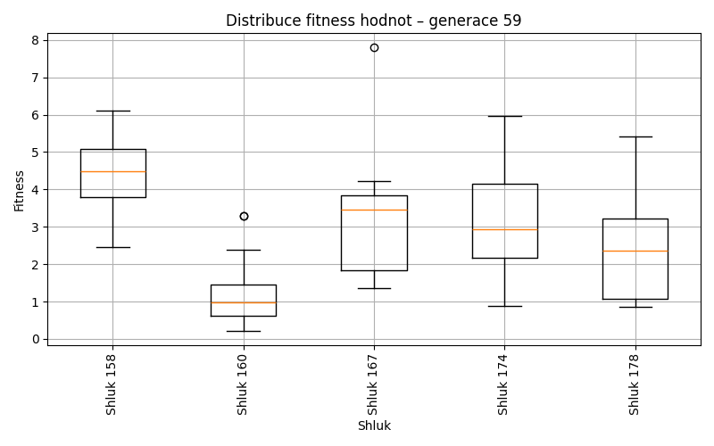
Generace 60
Stabilita mezi generací 59 → 60:
Shluk 160 → 174: 11 jedinců (20.4 %)
Shluk 160 → 179: 10 jedinců (18.5 %)
Shluk 160 → 160: 13 jedinců (24.1 %)
Shluk 160 → 167: 2 jedinců (3.7 %)
Shluk 160 → 180: 8 jedinců (14.8 %)
Shluk 160 → 178: 5 jedinců (9.3 %)
Shluk 160 → 158: 5 jedinců (9.3 %)
Shluk 158 → 174: 2 jedinců (28.6 %)
Shluk 158 → 178: 1 jedinců (14.3 %)
Shluk 158 → 180: 1 jedinců (14.3 %)
Shluk 158 → 158: 2 jedinců (28.6 %)
Shluk 158 → 167: 1 jedinců (14.3 %)
Shluk 167 → 167: 2 jedinců (20.0 %)
Shluk 167 → 174: 4 jedinců (40.0 %)
Shluk 167 → 158: 2 jedinců (20.0 %)
Shluk 167 → 160: 1 jedinců (10.0 %)
Shluk 167 → 179: 1 jedinců (10.0 %)
Shluk 178 → 179: 3 jedinců (17.6 %)
Shluk 178 → 158: 2 jedinců (11.8 %)
Shluk 178 → 160: 2 jedinců (11.8 %)
Shluk 178 → 174: 5 jedinců (29.4 %)
Shluk 178 → 178: 4 jedinců (23.5 %)
Shluk 178 → 180: 1 jedinců (5.9 %)
Shluk 174 → 174: 5 jedinců (41.7 %)
Shluk 174 → 179: 2 jedinců (16.7 %)
Shluk 174 → 167: 2 jedinců (16.7 %)
Shluk 174 → 180: 2 jedinců (16.7 %)
Shluk 174 → 160: 1 jedinců (8.3 %)
Jaccardovo mapování a overlap: Generace 59 → 60
- Shluk 160 → 160 (Jaccard: 0.22, Overlap: 0.76)
- Shluk 158 → 158 (Jaccard: 0.12, Overlap: 0.29)
- Shluk 167 → 167 (Jaccard: 0.13, Overlap: 0.29)
- Shluk 178 → 178 (Jaccard: 0.17, Overlap: 0.40)
- Shluk 174 → 174 (Jaccard: 0.15, Overlap: 0.42)
Posun centroidů mezi generací 59 → 60:
- Shluk 0: 1.4316
- Shluk 1: 1.4008
- Shluk 2: 1.7746
- Shluk 3: 1.1667
- Shluk 4: 1.3980
Generace 61
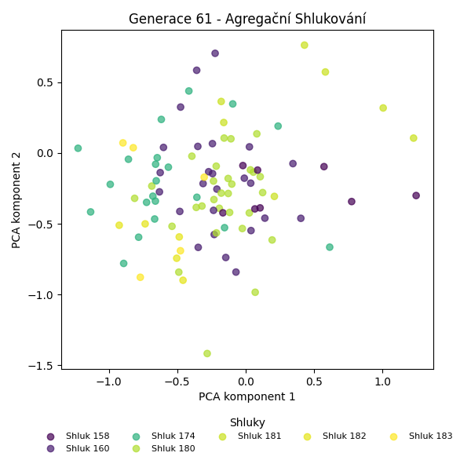
Stabilita mezi generací 60 → 61:
Shluk 174 → 180: 6 jedinců (22.2 %)
Shluk 174 → 158: 1 jedinců (3.7 %)
Shluk 174 → 174: 8 jedinců (29.6 %)
Shluk 174 → 160: 7 jedinců (25.9 %)
Shluk 174 → 182: 2 jedinců (7.4 %)
Shluk 174 → 181: 2 jedinců (7.4 %)
Shluk 174 → 183: 1 jedinců (3.7 %)
Shluk 179 → 180: 5 jedinců (31.2 %)
Shluk 179 → 181: 1 jedinců (6.2 %)
Shluk 179 → 160: 4 jedinců (25.0 %)
Shluk 179 → 174: 3 jedinců (18.8 %)
Shluk 179 → 182: 1 jedinců (6.2 %)
Shluk 179 → 183: 2 jedinců (12.5 %)
Shluk 167 → 174: 2 jedinců (28.6 %)
Shluk 167 → 180: 2 jedinců (28.6 %)
Shluk 167 → 160: 2 jedinců (28.6 %)
Shluk 167 → 158: 1 jedinců (14.3 %)
Shluk 158 → 160: 2 jedinců (18.2 %)
Shluk 158 → 180: 4 jedinců (36.4 %)
Shluk 158 → 182: 1 jedinců (9.1 %)
Shluk 158 → 181: 1 jedinců (9.1 %)
Shluk 158 → 158: 2 jedinců (18.2 %)
Shluk 158 → 174: 1 jedinců (9.1 %)
Shluk 178 → 158: 1 jedinců (10.0 %)
Shluk 178 → 180: 4 jedinců (40.0 %)
Shluk 178 → 174: 2 jedinců (20.0 %)
Shluk 178 → 160: 2 jedinců (20.0 %)
Shluk 178 → 181: 1 jedinců (10.0 %)
Shluk 160 → 180: 3 jedinců (17.6 %)
Shluk 160 → 160: 8 jedinců (47.1 %)
Shluk 160 → 158: 3 jedinců (17.6 %)
Shluk 160 → 182: 1 jedinců (5.9 %)
Shluk 160 → 174: 1 jedinců (5.9 %)
Shluk 160 → 183: 1 jedinců (5.9 %)
Shluk 180 → 180: 5 jedinců (41.7 %)
Shluk 180 → 181: 2 jedinců (16.7 %)
Shluk 180 → 174: 4 jedinců (33.3 %)
Shluk 180 → 183: 1 jedinců (8.3 %)
Jaccardovo mapování a overlap: Generace 60 → 61
- Shluk 174 → 174 (Jaccard: 0.20, Overlap: 0.38)
- Shluk 179 → 180 (Jaccard: 0.12, Overlap: 0.31)
- Shluk 167 → 174 (Jaccard: 0.08, Overlap: 0.29)
- Shluk 158 → 158 (Jaccard: 0.12, Overlap: 0.25)
- Shluk 178 → 180 (Jaccard: 0.11, Overlap: 0.40)
- Shluk 160 → 160 (Jaccard: 0.24, Overlap: 0.47)
- Shluk 180 → 180 (Jaccard: 0.14, Overlap: 0.42)
Posun centroidů mezi generací 60 → 61:
- Shluk 0: 1.2889
- Shluk 1: 1.5131
- Shluk 2: 0.8890
- Shluk 3: 1.7518
- Shluk 4: 0.8173
- Shluk 5: 1.5090
- Shluk 6: 1.2611
Generace 62

Stabilita mezi generací 61 → 62:
Shluk 180 → 158: 4 jedinců (13.8 %)
Shluk 180 → 160: 13 jedinců (44.8 %)
Shluk 180 → 174: 8 jedinců (27.6 %)
Shluk 180 → 184: 3 jedinců (10.3 %)
Shluk 180 → 181: 1 jedinců (3.4 %)
Shluk 158 → 184: 2 jedinců (25.0 %)
Shluk 158 → 158: 2 jedinců (25.0 %)
Shluk 158 → 160: 3 jedinců (37.5 %)
Shluk 158 → 174: 1 jedinců (12.5 %)
Shluk 181 → 181: 4 jedinců (57.1 %)
Shluk 181 → 174: 1 jedinců (14.3 %)
Shluk 181 → 184: 1 jedinců (14.3 %)
Shluk 181 → 160: 1 jedinců (14.3 %)
Shluk 174 → 158: 4 jedinců (19.0 %)
Shluk 174 → 160: 6 jedinců (28.6 %)
Shluk 174 → 184: 5 jedinců (23.8 %)
Shluk 174 → 174: 6 jedinců (28.6 %)
Shluk 160 → 174: 4 jedinců (16.0 %)
Shluk 160 → 160: 15 jedinců (60.0 %)
Shluk 160 → 181: 1 jedinců (4.0 %)
Shluk 160 → 184: 4 jedinců (16.0 %)
Shluk 160 → 158: 1 jedinců (4.0 %)
Shluk 182 → 160: 2 jedinců (40.0 %)
Shluk 182 → 158: 1 jedinců (20.0 %)
Shluk 182 → 184: 1 jedinců (20.0 %)
Shluk 182 → 182: 1 jedinců (20.0 %)
Shluk 183 → 184: 1 jedinců (20.0 %)
Shluk 183 → 160: 2 jedinců (40.0 %)
Shluk 183 → 182: 1 jedinců (20.0 %)
Shluk 183 → 174: 1 jedinců (20.0 %)
Jaccardovo mapování a overlap: Generace 61 → 62
- Shluk 180 → 160 (Jaccard: 0.22, Overlap: 0.45)
- Shluk 158 → 158 (Jaccard: 0.11, Overlap: 0.25)
- Shluk 181 → 181 (Jaccard: 0.44, Overlap: 0.67)
- Shluk 174 → 174 (Jaccard: 0.17, Overlap: 0.29)
- Shluk 160 → 160 (Jaccard: 0.29, Overlap: 0.60)
- Shluk 182 → 182 (Jaccard: 0.17, Overlap: 0.50)
- Shluk 183 → 182 (Jaccard: 0.17, Overlap: 0.50)
Posun centroidů mezi generací 61 → 62:
- Shluk 0: 1.1266
- Shluk 1: 1.7415
- Shluk 2: 1.1333
- Shluk 3: 1.8122
- Shluk 4: 0.5823
- Shluk 5: 1.7955
Generace 63
Stabilita mezi generací 62 → 63:
Shluk 158 → 158: 3 jedinců (25.0 %)
Shluk 158 → 160: 4 jedinců (33.3 %)
Shluk 158 → 186: 1 jedinců (8.3 %)
Shluk 158 → 184: 1 jedinců (8.3 %)
Shluk 158 → 181: 1 jedinců (8.3 %)
Shluk 158 → 182: 2 jedinců (16.7 %)
Shluk 184 → 184: 3 jedinců (17.6 %)
Shluk 184 → 160: 5 jedinců (29.4 %)
Shluk 184 → 181: 1 jedinců (5.9 %)
Shluk 184 → 182: 3 jedinců (17.6 %)
Shluk 184 → 185: 3 jedinců (17.6 %)
Shluk 184 → 158: 2 jedinců (11.8 %)
Shluk 160 → 185: 2 jedinců (4.8 %)
Shluk 160 → 160: 16 jedinců (38.1 %)
Shluk 160 → 158: 7 jedinců (16.7 %)
Shluk 160 → 181: 11 jedinců (26.2 %)
Shluk 160 → 186: 4 jedinců (9.5 %)
Shluk 160 → 184: 2 jedinců (4.8 %)
Shluk 181 → 160: 3 jedinců (50.0 %)
Shluk 181 → 181: 2 jedinců (33.3 %)
Shluk 181 → 185: 1 jedinců (16.7 %)
Shluk 174 → 186: 2 jedinců (9.5 %)
Shluk 174 → 184: 1 jedinců (4.8 %)
Shluk 174 → 160: 8 jedinců (38.1 %)
Shluk 174 → 181: 4 jedinců (19.0 %)
Shluk 174 → 185: 4 jedinců (19.0 %)
Shluk 174 → 182: 1 jedinců (4.8 %)
Shluk 174 → 158: 1 jedinců (4.8 %)
Shluk 182 → 160: 1 jedinců (50.0 %)
Shluk 182 → 182: 1 jedinců (50.0 %)
Jaccardovo mapování a overlap: Generace 62 → 63
- Shluk 158 → 158 (Jaccard: 0.14, Overlap: 0.25)
- Shluk 184 → 184 (Jaccard: 0.14, Overlap: 0.43)
- Shluk 160 → 160 (Jaccard: 0.25, Overlap: 0.43)
- Shluk 181 → 181 (Jaccard: 0.09, Overlap: 0.33)
- Shluk 174 → 160 (Jaccard: 0.16, Overlap: 0.38)
- Shluk 182 → 182 (Jaccard: 0.12, Overlap: 0.50)
Posun centroidů mezi generací 62 → 63:
- Shluk 0: 1.1894
- Shluk 1: 1.5868
- Shluk 2: 0.7015
- Shluk 3: 1.9775
- Shluk 4: 0.9379
- Shluk 5: 3.0939
Generace 64
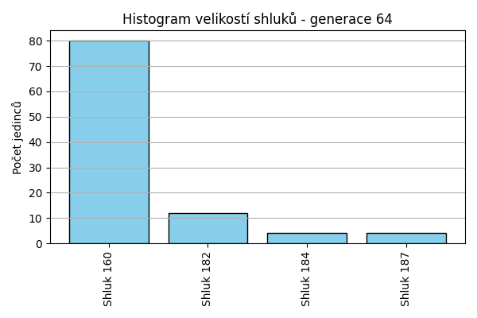
Stabilita mezi generací 63 → 64:
Shluk 158 → 160: 11 jedinců (84.6 %)
Shluk 158 → 184: 2 jedinců (15.4 %)
Shluk 184 → 160: 5 jedinců (71.4 %)
Shluk 184 → 184: 1 jedinců (14.3 %)
Shluk 184 → 182: 1 jedinců (14.3 %)
Shluk 185 → 160: 7 jedinců (70.0 %)
Shluk 185 → 187: 1 jedinců (10.0 %)
Shluk 185 → 184: 1 jedinců (10.0 %)
Shluk 185 → 182: 1 jedinců (10.0 %)
Shluk 160 → 160: 28 jedinců (75.7 %)
Shluk 160 → 182: 6 jedinců (16.2 %)
Shluk 160 → 187: 3 jedinců (8.1 %)
Shluk 186 → 160: 6 jedinců (85.7 %)
Shluk 186 → 182: 1 jedinců (14.3 %)
Shluk 181 → 160: 18 jedinců (94.7 %)
Shluk 181 → 182: 1 jedinců (5.3 %)
Shluk 182 → 182: 2 jedinců (28.6 %)
Shluk 182 → 160: 5 jedinců (71.4 %)
Jaccardovo mapování a overlap: Generace 63 → 64
- Shluk 158 → 160 (Jaccard: 0.13, Overlap: 0.85)
- Shluk 184 → 184 (Jaccard: 0.10, Overlap: 0.25)
- Shluk 185 → 160 (Jaccard: 0.08, Overlap: 0.70)
- Shluk 160 → 160 (Jaccard: 0.31, Overlap: 0.76)
- Shluk 186 → 160 (Jaccard: 0.07, Overlap: 0.86)
- Shluk 181 → 160 (Jaccard: 0.22, Overlap: 0.95)
- Shluk 182 → 182 (Jaccard: 0.12, Overlap: 0.29)
Posun centroidů mezi generací 63 → 64:
- Shluk 0: 0.9287
- Shluk 1: 1.8905
- Shluk 2: 0.9624
- Shluk 3: 1.9869
Generace 65
Stabilita mezi generací 64 → 65:
Shluk 160 → 160: 33 jedinců (41.2 %)
Shluk 160 → 188: 10 jedinců (12.5 %)
Shluk 160 → 189: 4 jedinců (5.0 %)
Shluk 160 → 184: 11 jedinců (13.8 %)
Shluk 160 → 182: 10 jedinců (12.5 %)
Shluk 160 → 190: 7 jedinců (8.8 %)
Shluk 160 → 191: 5 jedinců (6.2 %)
Shluk 182 → 189: 1 jedinců (8.3 %)
Shluk 182 → 188: 2 jedinců (16.7 %)
Shluk 182 → 184: 2 jedinců (16.7 %)
Shluk 182 → 182: 3 jedinců (25.0 %)
Shluk 182 → 160: 3 jedinců (25.0 %)
Shluk 182 → 190: 1 jedinců (8.3 %)
Shluk 184 → 184: 3 jedinců (75.0 %)
Shluk 184 → 188: 1 jedinců (25.0 %)
Shluk 187 → 184: 2 jedinců (50.0 %)
Shluk 187 → 160: 2 jedinců (50.0 %)
Jaccardovo mapování a overlap: Generace 64 → 65
- Shluk 160 → 160 (Jaccard: 0.39, Overlap: 0.87)
- Shluk 182 → 182 (Jaccard: 0.14, Overlap: 0.25)
- Shluk 184 → 184 (Jaccard: 0.16, Overlap: 0.75)
- Shluk 187 → 184 (Jaccard: 0.10, Overlap: 0.50)
Posun centroidů mezi generací 64 → 65:
- Shluk 0: 0.7252
- Shluk 1: 2.1132
- Shluk 2: 1.0145
- Shluk 3: 1.4295
Generace 66
Stabilita mezi generací 65 → 66:
Shluk 160 → 192: 4 jedinců (10.5 %)
Shluk 160 → 160: 19 jedinců (50.0 %)
Shluk 160 → 188: 6 jedinců (15.8 %)
Shluk 160 → 184: 5 jedinců (13.2 %)
Shluk 160 → 193: 2 jedinců (5.3 %)
Shluk 160 → 194: 2 jedinců (5.3 %)
Shluk 188 → 160: 5 jedinců (38.5 %)
Shluk 188 → 184: 1 jedinců (7.7 %)
Shluk 188 → 188: 5 jedinců (38.5 %)
Shluk 188 → 192: 2 jedinců (15.4 %)
Shluk 189 → 160: 5 jedinců (100.0 %)
Shluk 184 → 184: 4 jedinců (22.2 %)
Shluk 184 → 192: 3 jedinců (16.7 %)
Shluk 184 → 160: 8 jedinců (44.4 %)
Shluk 184 → 188: 2 jedinců (11.1 %)
Shluk 184 → 193: 1 jedinců (5.6 %)
Shluk 182 → 192: 2 jedinců (15.4 %)
Shluk 182 → 160: 8 jedinců (61.5 %)
Shluk 182 → 193: 1 jedinců (7.7 %)
Shluk 182 → 188: 2 jedinců (15.4 %)
Shluk 190 → 160: 5 jedinců (62.5 %)
Shluk 190 → 184: 2 jedinců (25.0 %)
Shluk 190 → 193: 1 jedinců (12.5 %)
Shluk 191 → 184: 2 jedinců (40.0 %)
Shluk 191 → 160: 1 jedinců (20.0 %)
Shluk 191 → 188: 1 jedinců (20.0 %)
Shluk 191 → 193: 1 jedinců (20.0 %)
Jaccardovo mapování a overlap: Generace 65 → 66
- Shluk 160 → 160 (Jaccard: 0.27, Overlap: 0.50)
- Shluk 188 → 188 (Jaccard: 0.21, Overlap: 0.38)
- Shluk 189 → 160 (Jaccard: 0.10, Overlap: 1.00)
- Shluk 184 → 184 (Jaccard: 0.14, Overlap: 0.29)
- Shluk 182 → 160 (Jaccard: 0.14, Overlap: 0.62)
- Shluk 190 → 184 (Jaccard: 0.10, Overlap: 0.25)
- Shluk 191 → 184 (Jaccard: 0.12, Overlap: 0.40)
Posun centroidů mezi generací 65 → 66:
- Shluk 0: 0.7278
- Shluk 1: 0.8166
- Shluk 2: 1.0473
- Shluk 3: 1.6207
- Shluk 4: 1.5173
- Shluk 5: 1.8477
Generace 67
Stabilita mezi generací 66 → 67:
Shluk 192 → 160: 9 jedinců (81.8 %)
Shluk 192 → 194: 2 jedinců (18.2 %)
Shluk 160 → 195: 4 jedinců (7.8 %)
Shluk 160 → 160: 38 jedinců (74.5 %)
Shluk 160 → 194: 9 jedinců (17.6 %)
Shluk 184 → 194: 1 jedinců (7.1 %)
Shluk 184 → 195: 2 jedinců (14.3 %)
Shluk 184 → 160: 11 jedinců (78.6 %)
Shluk 188 → 160: 13 jedinců (81.2 %)
Shluk 188 → 195: 2 jedinců (12.5 %)
Shluk 188 → 194: 1 jedinců (6.2 %)
Shluk 193 → 160: 5 jedinců (83.3 %)
Shluk 193 → 194: 1 jedinců (16.7 %)
Shluk 194 → 160: 1 jedinců (50.0 %)
Shluk 194 → 194: 1 jedinců (50.0 %)
Jaccardovo mapování a overlap: Generace 66 → 67
- Shluk 192 → 160 (Jaccard: 0.11, Overlap: 0.82)
- Shluk 160 → 160 (Jaccard: 0.42, Overlap: 0.75)
- Shluk 184 → 160 (Jaccard: 0.14, Overlap: 0.79)
- Shluk 188 → 160 (Jaccard: 0.16, Overlap: 0.81)
- Shluk 193 → 160 (Jaccard: 0.06, Overlap: 0.83)
- Shluk 194 → 194 (Jaccard: 0.06, Overlap: 0.50)
Posun centroidů mezi generací 66 → 67:
- Shluk 0: 0.3723
- Shluk 1: 1.2693
- Shluk 2: 0.9513
Generace 68
Stabilita mezi generací 67 → 68:
Shluk 160 → 160: 47 jedinců (61.0 %)
Shluk 160 → 195: 8 jedinců (10.4 %)
Shluk 160 → 196: 22 jedinců (28.6 %)
Shluk 195 → 195: 4 jedinců (50.0 %)
Shluk 195 → 160: 3 jedinců (37.5 %)
Shluk 195 → 196: 1 jedinců (12.5 %)
Shluk 194 → 195: 2 jedinců (13.3 %)
Shluk 194 → 196: 3 jedinců (20.0 %)
Shluk 194 → 160: 10 jedinců (66.7 %)
Jaccardovo mapování a overlap: Generace 67 → 68
- Shluk 160 → 160 (Jaccard: 0.52, Overlap: 0.78)
- Shluk 195 → 195 (Jaccard: 0.22, Overlap: 0.50)
- Shluk 194 → 160 (Jaccard: 0.15, Overlap: 0.67)
Posun centroidů mezi generací 67 → 68:
- Shluk 0: 0.2136
- Shluk 1: 2.0939
- Shluk 2: 0.7418
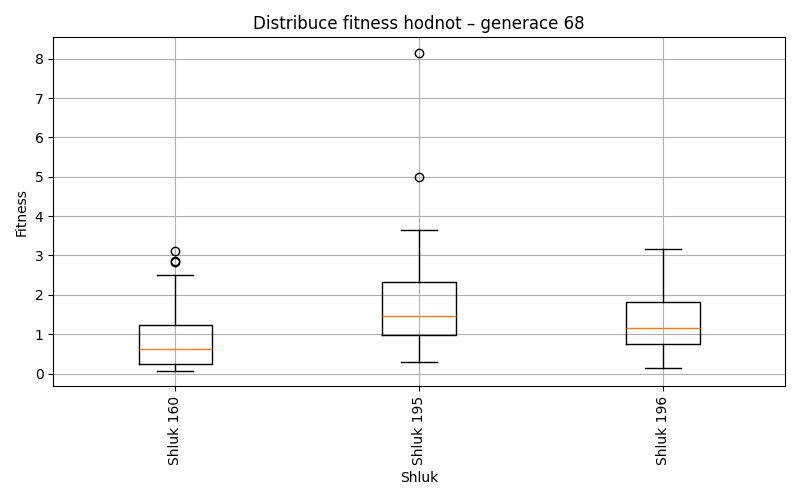
Generace 69
Stabilita mezi generací 68 → 69:
Shluk 160 → 197: 7 jedinců (11.7 %)
Shluk 160 → 160: 37 jedinců (61.7 %)
Shluk 160 → 200: 2 jedinců (3.3 %)
Shluk 160 → 198: 2 jedinců (3.3 %)
Shluk 160 → 195: 8 jedinců (13.3 %)
Shluk 160 → 199: 3 jedinců (5.0 %)
Shluk 160 → 201: 1 jedinců (1.7 %)
Shluk 195 → 195: 5 jedinců (35.7 %)
Shluk 195 → 160: 8 jedinců (57.1 %)
Shluk 195 → 201: 1 jedinců (7.1 %)
Shluk 196 → 160: 14 jedinců (53.8 %)
Shluk 196 → 198: 1 jedinců (3.8 %)
Shluk 196 → 199: 4 jedinců (15.4 %)
Shluk 196 → 197: 3 jedinců (11.5 %)
Shluk 196 → 195: 2 jedinců (7.7 %)
Shluk 196 → 200: 2 jedinců (7.7 %)
Jaccardovo mapování a overlap: Generace 68 → 69
- Shluk 160 → 160 (Jaccard: 0.45, Overlap: 0.63)
- Shluk 195 → 195 (Jaccard: 0.21, Overlap: 0.36)
- Shluk 196 → 160 (Jaccard: 0.20, Overlap: 0.54)
Posun centroidů mezi generací 68 → 69:
- Shluk 0: 0.8536
- Shluk 1: 0.9211
- Shluk 2: 1.1779
Generace 70
Stabilita mezi generací 69 → 70:
Shluk 197 → 201: 1 jedinců (10.0 %)
Shluk 197 → 202: 3 jedinců (30.0 %)
Shluk 197 → 160: 2 jedinců (20.0 %)
Shluk 197 → 197: 3 jedinců (30.0 %)
Shluk 197 → 198: 1 jedinců (10.0 %)
Shluk 195 → 160: 8 jedinců (53.3 %)
Shluk 195 → 202: 4 jedinců (26.7 %)
Shluk 195 → 195: 3 jedinců (20.0 %)
Shluk 160 → 160: 47 jedinců (79.7 %)
Shluk 160 → 202: 6 jedinců (10.2 %)
Shluk 160 → 197: 4 jedinců (6.8 %)
Shluk 160 → 201: 1 jedinců (1.7 %)
Shluk 160 → 195: 1 jedinců (1.7 %)
Shluk 198 → 198: 1 jedinců (33.3 %)
Shluk 198 → 160: 1 jedinců (33.3 %)
Shluk 198 → 195: 1 jedinců (33.3 %)
Shluk 199 → 160: 4 jedinců (57.1 %)
Shluk 199 → 197: 2 jedinců (28.6 %)
Shluk 199 → 201: 1 jedinců (14.3 %)
Shluk 200 → 201: 1 jedinců (25.0 %)
Shluk 200 → 160: 2 jedinců (50.0 %)
Shluk 200 → 197: 1 jedinců (25.0 %)
Shluk 201 → 160: 1 jedinců (50.0 %)
Shluk 201 → 201: 1 jedinců (50.0 %)
Jaccardovo mapování a overlap: Generace 69 → 70
- Shluk 197 → 197 (Jaccard: 0.18, Overlap: 0.30)
- Shluk 195 → 195 (Jaccard: 0.18, Overlap: 0.60)
- Shluk 160 → 160 (Jaccard: 0.61, Overlap: 0.80)
- Shluk 198 → 198 (Jaccard: 0.25, Overlap: 0.50)
- Shluk 199 → 197 (Jaccard: 0.13, Overlap: 0.29)
- Shluk 200 → 201 (Jaccard: 0.12, Overlap: 0.25)
- Shluk 201 → 201 (Jaccard: 0.17, Overlap: 0.50)
Posun centroidů mezi generací 69 → 70:
- Shluk 0: 1.2898
- Shluk 1: 1.1729
- Shluk 2: 1.3351
- Shluk 3: 2.0889
- Shluk 4: 2.5486
- Shluk 5: 1.0009
Generace 71
Stabilita mezi generací 70 → 71:
Shluk 201 → 197: 2 jedinců (40.0 %)
Shluk 201 → 203: 1 jedinců (20.0 %)
Shluk 201 → 198: 1 jedinců (20.0 %)
Shluk 201 → 201: 1 jedinců (20.0 %)
Shluk 160 → 203: 25 jedinců (38.5 %)
Shluk 160 → 160: 28 jedinců (43.1 %)
Shluk 160 → 197: 5 jedinců (7.7 %)
Shluk 160 → 198: 4 jedinců (6.2 %)
Shluk 160 → 205: 1 jedinců (1.5 %)
Shluk 160 → 204: 2 jedinců (3.1 %)
Shluk 202 → 197: 3 jedinců (23.1 %)
Shluk 202 → 201: 1 jedinců (7.7 %)
Shluk 202 → 160: 4 jedinců (30.8 %)
Shluk 202 → 203: 3 jedinců (23.1 %)
Shluk 202 → 204: 1 jedinců (7.7 %)
Shluk 202 → 198: 1 jedinců (7.7 %)
Shluk 195 → 203: 2 jedinců (40.0 %)
Shluk 195 → 198: 2 jedinců (40.0 %)
Shluk 195 → 160: 1 jedinců (20.0 %)
Shluk 198 → 198: 2 jedinců (100.0 %)
Shluk 197 → 197: 4 jedinců (40.0 %)
Shluk 197 → 201: 1 jedinců (10.0 %)
Shluk 197 → 203: 1 jedinců (10.0 %)
Shluk 197 → 160: 2 jedinců (20.0 %)
Shluk 197 → 204: 1 jedinců (10.0 %)
Shluk 197 → 205: 1 jedinců (10.0 %)
Jaccardovo mapování a overlap: Generace 70 → 71
- Shluk 201 → 201 (Jaccard: 0.14, Overlap: 0.33)
- Shluk 160 → 160 (Jaccard: 0.39, Overlap: 0.80)
- Shluk 202 → 197 (Jaccard: 0.12, Overlap: 0.23)
- Shluk 195 → 198 (Jaccard: 0.15, Overlap: 0.40)
- Shluk 198 → 198 (Jaccard: 0.20, Overlap: 1.00)
- Shluk 197 → 197 (Jaccard: 0.20, Overlap: 0.40)
Posun centroidů mezi generací 70 → 71:
- Shluk 0: 0.8454
- Shluk 1: 1.0506
- Shluk 2: 0.8304
- Shluk 3: 2.1069
- Shluk 4: 1.8460
- Shluk 5: 0.4336
Generace 72
Stabilita mezi generací 71 → 72:
Shluk 197 → 160: 10 jedinců (71.4 %)
Shluk 197 → 206: 1 jedinců (7.1 %)
Shluk 197 → 197: 3 jedinců (21.4 %)
Shluk 203 → 160: 19 jedinců (59.4 %)
Shluk 203 → 201: 5 jedinců (15.6 %)
Shluk 203 → 197: 4 jedinců (12.5 %)
Shluk 203 → 206: 1 jedinců (3.1 %)
Shluk 203 → 204: 3 jedinců (9.4 %)
Shluk 160 → 205: 2 jedinců (5.7 %)
Shluk 160 → 160: 33 jedinců (94.3 %)
Shluk 201 → 201: 1 jedinců (33.3 %)
Shluk 201 → 160: 2 jedinců (66.7 %)
Shluk 198 → 204: 2 jedinců (20.0 %)
Shluk 198 → 160: 4 jedinců (40.0 %)
Shluk 198 → 201: 2 jedinců (20.0 %)
Shluk 198 → 206: 1 jedinců (10.0 %)
Shluk 198 → 197: 1 jedinců (10.0 %)
Shluk 204 → 160: 2 jedinců (50.0 %)
Shluk 204 → 204: 2 jedinců (50.0 %)
Shluk 205 → 205: 1 jedinců (50.0 %)
Shluk 205 → 201: 1 jedinců (50.0 %)
Jaccardovo mapování a overlap: Generace 71 → 72
- Shluk 197 → 197 (Jaccard: 0.16, Overlap: 0.38)
- Shluk 203 → 160 (Jaccard: 0.23, Overlap: 0.59)
- Shluk 160 → 160 (Jaccard: 0.46, Overlap: 0.94)
- Shluk 201 → 201 (Jaccard: 0.09, Overlap: 0.33)
- Shluk 198 → 204 (Jaccard: 0.13, Overlap: 0.29)
- Shluk 204 → 204 (Jaccard: 0.22, Overlap: 0.50)
- Shluk 205 → 205 (Jaccard: 0.25, Overlap: 0.50)
Posun centroidů mezi generací 71 → 72:
- Shluk 0: 0.3525
- Shluk 1: 0.9542
- Shluk 2: 0.9903
- Shluk 3: 1.3282
- Shluk 4: 1.2927
- Shluk 5: 1.4323
Generace 73
Stabilita mezi generací 72 → 73:
Shluk 160 → 197: 4 jedinců (5.7 %)
Shluk 160 → 160: 56 jedinců (80.0 %)
Shluk 160 → 207: 7 jedinců (10.0 %)
Shluk 160 → 206: 2 jedinců (2.9 %)
Shluk 160 → 204: 1 jedinců (1.4 %)
Shluk 205 → 160: 1 jedinců (33.3 %)
Shluk 205 → 197: 1 jedinců (33.3 %)
Shluk 205 → 207: 1 jedinců (33.3 %)
Shluk 201 → 160: 7 jedinců (77.8 %)
Shluk 201 → 206: 1 jedinců (11.1 %)
Shluk 201 → 197: 1 jedinců (11.1 %)
Shluk 204 → 160: 5 jedinců (71.4 %)
Shluk 204 → 197: 1 jedinců (14.3 %)
Shluk 204 → 204: 1 jedinců (14.3 %)
Shluk 197 → 197: 2 jedinců (25.0 %)
Shluk 197 → 160: 4 jedinců (50.0 %)
Shluk 197 → 207: 2 jedinců (25.0 %)
Shluk 206 → 160: 1 jedinců (33.3 %)
Shluk 206 → 197: 1 jedinců (33.3 %)
Shluk 206 → 206: 1 jedinců (33.3 %)
Jaccardovo mapování a overlap: Generace 72 → 73
- Shluk 160 → 160 (Jaccard: 0.64, Overlap: 0.80)
- Shluk 205 → 197 (Jaccard: 0.08, Overlap: 0.33)
- Shluk 201 → 160 (Jaccard: 0.09, Overlap: 0.78)
- Shluk 204 → 204 (Jaccard: 0.12, Overlap: 0.50)
- Shluk 197 → 197 (Jaccard: 0.12, Overlap: 0.25)
- Shluk 206 → 206 (Jaccard: 0.17, Overlap: 0.33)
Posun centroidů mezi generací 72 → 73:
- Shluk 0: 0.1810
- Shluk 1: 1.2605
- Shluk 2: 1.2715
- Shluk 3: 1.1892
- Shluk 4: 2.3083
Generace 74
Stabilita mezi generací 73 → 74:
Shluk 197 → 160: 8 jedinců (80.0 %)
Shluk 197 → 209: 1 jedinců (10.0 %)
Shluk 197 → 208: 1 jedinců (10.0 %)
Shluk 160 → 160: 64 jedinců (86.5 %)
Shluk 160 → 208: 4 jedinců (5.4 %)
Shluk 160 → 209: 5 jedinců (6.8 %)
Shluk 160 → 206: 1 jedinců (1.4 %)
Shluk 207 → 160: 9 jedinců (90.0 %)
Shluk 207 → 209: 1 jedinců (10.0 %)
Shluk 206 → 208: 1 jedinců (25.0 %)
Shluk 206 → 160: 1 jedinců (25.0 %)
Shluk 206 → 209: 1 jedinců (25.0 %)
Shluk 206 → 206: 1 jedinců (25.0 %)
Shluk 204 → 160: 2 jedinců (100.0 %)
Jaccardovo mapování a overlap: Generace 73 → 74
- Shluk 197 → 160 (Jaccard: 0.09, Overlap: 0.80)
- Shluk 160 → 160 (Jaccard: 0.68, Overlap: 0.86)
- Shluk 207 → 160 (Jaccard: 0.11, Overlap: 0.90)
- Shluk 206 → 206 (Jaccard: 0.20, Overlap: 0.50)
- Shluk 204 → 160 (Jaccard: 0.02, Overlap: 1.00)
Posun centroidů mezi generací 73 → 74:
- Shluk 0: 0.2127
- Shluk 1: 0.5396
- Shluk 2: 1.5197
- Shluk 3: 1.4262
Generace 75
Stabilita mezi generací 74 → 75:
Shluk 160 → 160: 64 jedinců (76.2 %)
Shluk 160 → 208: 1 jedinců (1.2 %)
Shluk 160 → 210: 8 jedinců (9.5 %)
Shluk 160 → 211: 4 jedinců (4.8 %)
Shluk 160 → 209: 4 jedinců (4.8 %)
Shluk 160 → 206: 3 jedinců (3.6 %)
Shluk 208 → 208: 2 jedinců (33.3 %)
Shluk 208 → 209: 1 jedinců (16.7 %)
Shluk 208 → 160: 3 jedinců (50.0 %)
Shluk 209 → 209: 3 jedinců (37.5 %)
Shluk 209 → 210: 1 jedinců (12.5 %)
Shluk 209 → 208: 2 jedinců (25.0 %)
Shluk 209 → 211: 2 jedinců (25.0 %)
Shluk 206 → 206: 1 jedinců (50.0 %)
Shluk 206 → 160: 1 jedinců (50.0 %)
Jaccardovo mapování a overlap: Generace 74 → 75
- Shluk 160 → 160 (Jaccard: 0.73, Overlap: 0.94)
- Shluk 208 → 208 (Jaccard: 0.22, Overlap: 0.40)
- Shluk 209 → 209 (Jaccard: 0.23, Overlap: 0.38)
- Shluk 206 → 206 (Jaccard: 0.20, Overlap: 0.50)
Posun centroidů mezi generací 74 → 75:
- Shluk 0: 1.1666
- Shluk 1: 1.1247
- Shluk 2: 2.0354
- Shluk 3: 1.8789
Generace 76
Stabilita mezi generací 75 → 76:
Shluk 160 → 212: 16 jedinců (23.5 %)
Shluk 160 → 209: 8 jedinců (11.8 %)
Shluk 160 → 160: 42 jedinců (61.8 %)
Shluk 160 → 208: 2 jedinců (2.9 %)
Shluk 208 → 212: 2 jedinců (40.0 %)
Shluk 208 → 160: 2 jedinců (40.0 %)
Shluk 208 → 208: 1 jedinců (20.0 %)
Shluk 209 → 160: 2 jedinců (25.0 %)
Shluk 209 → 213: 1 jedinců (12.5 %)
Shluk 209 → 208: 1 jedinců (12.5 %)
Shluk 209 → 209: 3 jedinců (37.5 %)
Shluk 209 → 212: 1 jedinců (12.5 %)
Shluk 210 → 212: 2 jedinců (22.2 %)
Shluk 210 → 160: 6 jedinců (66.7 %)
Shluk 210 → 209: 1 jedinců (11.1 %)
Shluk 211 → 212: 2 jedinců (33.3 %)
Shluk 211 → 208: 1 jedinců (16.7 %)
Shluk 211 → 209: 1 jedinců (16.7 %)
Shluk 211 → 160: 2 jedinců (33.3 %)
Shluk 206 → 212: 1 jedinců (25.0 %)
Shluk 206 → 160: 2 jedinců (50.0 %)
Shluk 206 → 209: 1 jedinců (25.0 %)
Jaccardovo mapování a overlap: Generace 75 → 76
- Shluk 160 → 160 (Jaccard: 0.51, Overlap: 0.75)
- Shluk 208 → 208 (Jaccard: 0.11, Overlap: 0.20)
- Shluk 209 → 209 (Jaccard: 0.16, Overlap: 0.38)
- Shluk 210 → 160 (Jaccard: 0.10, Overlap: 0.67)
- Shluk 211 → 208 (Jaccard: 0.10, Overlap: 0.20)
- Shluk 206 → 209 (Jaccard: 0.06, Overlap: 0.25)
Posun centroidů mezi generací 75 → 76:
- Shluk 0: 1.2635
- Shluk 1: 0.9153
- Shluk 2: 0.8471
- Shluk 3: 1.9473
- Shluk 4: 2.4972
Generace 77
Stabilita mezi generací 76 → 77:
Shluk 212 → 160: 15 jedinců (62.5 %)
Shluk 212 → 212: 9 jedinců (37.5 %)
Shluk 209 → 160: 7 jedinců (50.0 %)
Shluk 209 → 209: 5 jedinců (35.7 %)
Shluk 209 → 208: 1 jedinců (7.1 %)
Shluk 209 → 214: 1 jedinců (7.1 %)
Shluk 160 → 160: 44 jedinců (78.6 %)
Shluk 160 → 212: 7 jedinců (12.5 %)
Shluk 160 → 214: 2 jedinců (3.6 %)
Shluk 160 → 209: 1 jedinců (1.8 %)
Shluk 160 → 208: 2 jedinců (3.6 %)
Shluk 213 → 160: 1 jedinců (100.0 %)
Shluk 208 → 212: 2 jedinců (40.0 %)
Shluk 208 → 208: 1 jedinců (20.0 %)
Shluk 208 → 160: 2 jedinců (40.0 %)
Jaccardovo mapování a overlap: Generace 76 → 77
- Shluk 212 → 212 (Jaccard: 0.27, Overlap: 0.50)
- Shluk 209 → 209 (Jaccard: 0.33, Overlap: 0.83)
- Shluk 160 → 160 (Jaccard: 0.54, Overlap: 0.79)
- Shluk 213 → 160 (Jaccard: 0.01, Overlap: 1.00)
- Shluk 208 → 208 (Jaccard: 0.12, Overlap: 0.25)
Posun centroidů mezi generací 76 → 77:
- Shluk 0: 0.2564
- Shluk 1: 1.0065
- Shluk 2: 1.4602
- Shluk 3: 1.6640
- Shluk 4: 1.9812
Generace 78
Stabilita mezi generací 77 → 78:
Shluk 160 → 160: 31 jedinců (44.9 %)
Shluk 160 → 214: 29 jedinců (42.0 %)
Shluk 160 → 208: 2 jedinců (2.9 %)
Shluk 160 → 215: 5 jedinců (7.2 %)
Shluk 160 → 209: 2 jedinců (2.9 %)
Shluk 212 → 215: 2 jedinců (11.1 %)
Shluk 212 → 160: 7 jedinců (38.9 %)
Shluk 212 → 209: 1 jedinců (5.6 %)
Shluk 212 → 214: 7 jedinců (38.9 %)
Shluk 212 → 208: 1 jedinců (5.6 %)
Shluk 209 → 214: 3 jedinců (50.0 %)
Shluk 209 → 209: 1 jedinců (16.7 %)
Shluk 209 → 208: 1 jedinců (16.7 %)
Shluk 209 → 215: 1 jedinců (16.7 %)
Shluk 214 → 214: 3 jedinců (100.0 %)
Shluk 208 → 214: 1 jedinců (25.0 %)
Shluk 208 → 208: 1 jedinců (25.0 %)
Shluk 208 → 215: 1 jedinců (25.0 %)
Shluk 208 → 160: 1 jedinců (25.0 %)
Jaccardovo mapování a overlap: Generace 77 → 78
- Shluk 160 → 160 (Jaccard: 0.40, Overlap: 0.79)
- Shluk 212 → 160 (Jaccard: 0.14, Overlap: 0.39)
- Shluk 209 → 209 (Jaccard: 0.11, Overlap: 0.25)
- Shluk 214 → 214 (Jaccard: 0.07, Overlap: 1.00)
- Shluk 208 → 208 (Jaccard: 0.12, Overlap: 0.25)
Posun centroidů mezi generací 77 → 78:
- Shluk 0: 0.9478
- Shluk 1: 0.7198
- Shluk 2: 1.0011
- Shluk 3: 1.3562
- Shluk 4: 1.3549
Generace 79
Stabilita mezi generací 78 → 79:
Shluk 160 → 215: 1 jedinců (2.6 %)
Shluk 160 → 160: 36 jedinců (92.3 %)
Shluk 160 → 208: 1 jedinců (2.6 %)
Shluk 160 → 216: 1 jedinců (2.6 %)
Shluk 215 → 209: 1 jedinců (11.1 %)
Shluk 215 → 215: 1 jedinců (11.1 %)
Shluk 215 → 160: 5 jedinců (55.6 %)
Shluk 215 → 208: 1 jedinců (11.1 %)
Shluk 215 → 216: 1 jedinců (11.1 %)
Shluk 214 → 160: 31 jedinců (72.1 %)
Shluk 214 → 216: 4 jedinců (9.3 %)
Shluk 214 → 215: 1 jedinců (2.3 %)
Shluk 214 → 209: 6 jedinců (14.0 %)
Shluk 214 → 208: 1 jedinců (2.3 %)
Shluk 208 → 208: 3 jedinců (60.0 %)
Shluk 208 → 160: 1 jedinců (20.0 %)
Shluk 208 → 216: 1 jedinců (20.0 %)
Shluk 209 → 160: 2 jedinců (50.0 %)
Shluk 209 → 216: 1 jedinců (25.0 %)
Shluk 209 → 209: 1 jedinců (25.0 %)
Jaccardovo mapování a overlap: Generace 78 → 79
- Shluk 160 → 160 (Jaccard: 0.46, Overlap: 0.92)
- Shluk 215 → 215 (Jaccard: 0.09, Overlap: 0.33)
- Shluk 214 → 160 (Jaccard: 0.36, Overlap: 0.72)
- Shluk 208 → 208 (Jaccard: 0.38, Overlap: 0.60)
- Shluk 209 → 209 (Jaccard: 0.09, Overlap: 0.25)
Posun centroidů mezi generací 78 → 79:
- Shluk 0: 1.6277
- Shluk 1: 0.1572
- Shluk 2: 0.6282
- Shluk 3: 1.1896
- Shluk 4: 1.1568
Generace 80
Stabilita mezi generací 79 → 80:
Shluk 215 → 160: 2 jedinců (66.7 %)
Shluk 215 → 215: 1 jedinců (33.3 %)
Shluk 160 → 217: 5 jedinců (6.7 %)
Shluk 160 → 160: 58 jedinců (77.3 %)
Shluk 160 → 218: 10 jedinců (13.3 %)
Shluk 160 → 215: 2 jedinců (2.7 %)
Shluk 209 → 160: 7 jedinců (87.5 %)
Shluk 209 → 218: 1 jedinců (12.5 %)
Shluk 216 → 160: 2 jedinců (25.0 %)
Shluk 216 → 217: 2 jedinců (25.0 %)
Shluk 216 → 218: 2 jedinců (25.0 %)
Shluk 216 → 216: 2 jedinců (25.0 %)
Shluk 208 → 160: 4 jedinců (66.7 %)
Shluk 208 → 215: 1 jedinců (16.7 %)
Shluk 208 → 218: 1 jedinců (16.7 %)
Jaccardovo mapování a overlap: Generace 79 → 80
- Shluk 215 → 215 (Jaccard: 0.17, Overlap: 0.33)
- Shluk 160 → 160 (Jaccard: 0.64, Overlap: 0.79)
- Shluk 209 → 160 (Jaccard: 0.09, Overlap: 0.88)
- Shluk 216 → 216 (Jaccard: 0.25, Overlap: 1.00)
- Shluk 208 → 215 (Jaccard: 0.11, Overlap: 0.25)
Posun centroidů mezi generací 79 → 80:
- Shluk 0: 1.0715
- Shluk 1: 0.1130
- Shluk 2: 1.5875
- Shluk 3: 1.4447
- Shluk 4: 1.2073
Generace 81
Stabilita mezi generací 80 → 81:
Shluk 160 → 160: 58 jedinců (79.5 %)
Shluk 160 → 219: 11 jedinců (15.1 %)
Shluk 160 → 220: 3 jedinců (4.1 %)
Shluk 160 → 218: 1 jedinců (1.4 %)
Shluk 217 → 160: 7 jedinců (100.0 %)
Shluk 215 → 219: 2 jedinců (50.0 %)
Shluk 215 → 215: 1 jedinců (25.0 %)
Shluk 215 → 160: 1 jedinců (25.0 %)
Shluk 218 → 218: 3 jedinců (21.4 %)
Shluk 218 → 219: 3 jedinců (21.4 %)
Shluk 218 → 160: 6 jedinců (42.9 %)
Shluk 218 → 220: 1 jedinců (7.1 %)
Shluk 218 → 215: 1 jedinců (7.1 %)
Shluk 216 → 160: 1 jedinců (50.0 %)
Shluk 216 → 216: 1 jedinců (50.0 %)
Jaccardovo mapování a overlap: Generace 80 → 81
- Shluk 160 → 160 (Jaccard: 0.66, Overlap: 0.79)
- Shluk 217 → 160 (Jaccard: 0.10, Overlap: 1.00)
- Shluk 215 → 215 (Jaccard: 0.20, Overlap: 0.50)
- Shluk 218 → 218 (Jaccard: 0.20, Overlap: 0.75)
- Shluk 216 → 216 (Jaccard: 0.50, Overlap: 1.00)
Posun centroidů mezi generací 80 → 81:
- Shluk 0: 0.4817
- Shluk 1: 0.4473
- Shluk 2: 1.7700
- Shluk 3: 1.2392
- Shluk 4: 1.9568
Generace 82
Stabilita mezi generací 81 → 82:
Shluk 160 → 160: 59 jedinců (80.8 %)
Shluk 160 → 221: 8 jedinců (11.0 %)
Shluk 160 → 222: 3 jedinců (4.1 %)
Shluk 160 → 220: 1 jedinců (1.4 %)
Shluk 160 → 219: 1 jedinců (1.4 %)
Shluk 160 → 223: 1 jedinců (1.4 %)
Shluk 219 → 160: 8 jedinců (50.0 %)
Shluk 219 → 219: 3 jedinců (18.8 %)
Shluk 219 → 221: 4 jedinců (25.0 %)
Shluk 219 → 220: 1 jedinců (6.2 %)
Shluk 220 → 221: 1 jedinců (25.0 %)
Shluk 220 → 160: 2 jedinců (50.0 %)
Shluk 220 → 220: 1 jedinců (25.0 %)
Shluk 218 → 160: 3 jedinců (75.0 %)
Shluk 218 → 219: 1 jedinců (25.0 %)
Shluk 215 → 219: 1 jedinců (50.0 %)
Shluk 215 → 221: 1 jedinců (50.0 %)
Shluk 216 → 160: 1 jedinců (100.0 %)
Jaccardovo mapování a overlap: Generace 81 → 82
- Shluk 160 → 160 (Jaccard: 0.68, Overlap: 0.81)
- Shluk 219 → 219 (Jaccard: 0.16, Overlap: 0.50)
- Shluk 220 → 220 (Jaccard: 0.17, Overlap: 0.33)
- Shluk 218 → 219 (Jaccard: 0.11, Overlap: 0.25)
- Shluk 215 → 219 (Jaccard: 0.14, Overlap: 0.50)
- Shluk 216 → 160 (Jaccard: 0.01, Overlap: 1.00)
Posun centroidů mezi generací 81 → 82:
- Shluk 0: 0.6307
- Shluk 1: 0.6805
- Shluk 2: 1.0098
- Shluk 3: 1.2039
- Shluk 4: 1.8148
- Shluk 5: 1.8643
Generace 83
Stabilita mezi generací 82 → 83:
Shluk 160 → 160: 69 jedinců (94.5 %)
Shluk 160 → 220: 2 jedinců (2.7 %)
Shluk 160 → 224: 1 jedinců (1.4 %)
Shluk 160 → 222: 1 jedinců (1.4 %)
Shluk 219 → 160: 6 jedinců (100.0 %)
Shluk 221 → 160: 12 jedinců (85.7 %)
Shluk 221 → 222: 1 jedinců (7.1 %)
Shluk 221 → 220: 1 jedinců (7.1 %)
Shluk 222 → 160: 2 jedinců (66.7 %)
Shluk 222 → 222: 1 jedinců (33.3 %)
Shluk 220 → 220: 2 jedinců (66.7 %)
Shluk 220 → 160: 1 jedinců (33.3 %)
Shluk 223 → 220: 1 jedinců (100.0 %)
Jaccardovo mapování a overlap: Generace 82 → 83
- Shluk 160 → 160 (Jaccard: 0.73, Overlap: 0.95)
- Shluk 219 → 160 (Jaccard: 0.07, Overlap: 1.00)
- Shluk 221 → 160 (Jaccard: 0.13, Overlap: 0.86)
- Shluk 222 → 222 (Jaccard: 0.20, Overlap: 0.33)
- Shluk 220 → 220 (Jaccard: 0.29, Overlap: 0.67)
- Shluk 223 → 220 (Jaccard: 0.17, Overlap: 1.00)
Posun centroidů mezi generací 82 → 83:
- Shluk 0: 0.7122
- Shluk 1: 0.8296
- Shluk 2: 1.9914
- Shluk 3: 1.8299
Generace 84
Stabilita mezi generací 83 → 84:
Shluk 160 → 160: 85 jedinců (94.4 %)
Shluk 160 → 222: 4 jedinců (4.4 %)
Shluk 160 → 220: 1 jedinců (1.1 %)
Shluk 220 → 160: 2 jedinců (33.3 %)
Shluk 220 → 222: 1 jedinců (16.7 %)
Shluk 220 → 220: 2 jedinců (33.3 %)
Shluk 220 → 225: 1 jedinců (16.7 %)
Shluk 224 → 222: 1 jedinců (100.0 %)
Shluk 222 → 222: 2 jedinců (66.7 %)
Shluk 222 → 160: 1 jedinců (33.3 %)
Jaccardovo mapování a overlap: Generace 83 → 84
- Shluk 160 → 160 (Jaccard: 0.91, Overlap: 0.97)
- Shluk 220 → 220 (Jaccard: 0.29, Overlap: 0.67)
- Shluk 224 → 222 (Jaccard: 0.12, Overlap: 1.00)
- Shluk 222 → 222 (Jaccard: 0.22, Overlap: 0.67)
Posun centroidů mezi generací 83 → 84:
- Shluk 0: 0.1683
- Shluk 1: 0.9383
- Shluk 2: 2.4159
- Shluk 3: 1.5475
Generace 85
Stabilita mezi generací 84 → 85:
Shluk 160 → 160: 74 jedinců (84.1 %)
Shluk 160 → 226: 5 jedinců (5.7 %)
Shluk 160 → 222: 9 jedinců (10.2 %)
Shluk 222 → 226: 2 jedinců (25.0 %)
Shluk 222 → 222: 4 jedinců (50.0 %)
Shluk 222 → 160: 2 jedinců (25.0 %)
Shluk 220 → 220: 2 jedinců (66.7 %)
Shluk 220 → 226: 1 jedinců (33.3 %)
Shluk 225 → 160: 1 jedinců (100.0 %)
Jaccardovo mapování a overlap: Generace 84 → 85
- Shluk 160 → 160 (Jaccard: 0.81, Overlap: 0.96)
- Shluk 222 → 222 (Jaccard: 0.24, Overlap: 0.50)
- Shluk 220 → 220 (Jaccard: 0.67, Overlap: 1.00)
- Shluk 225 → 160 (Jaccard: 0.01, Overlap: 1.00)
Posun centroidů mezi generací 84 → 85:
- Shluk 0: 1.1984
- Shluk 1: 0.9001
- Shluk 2: 1.7568
- Shluk 3: 0.8811

Generace 86
Stabilita mezi generací 85 → 86:
Shluk 160 → 160: 69 jedinců (89.6 %)
Shluk 160 → 226: 8 jedinců (10.4 %)
Shluk 226 → 160: 4 jedinců (50.0 %)
Shluk 226 → 226: 4 jedinců (50.0 %)
Shluk 222 → 160: 12 jedinců (92.3 %)
Shluk 222 → 226: 1 jedinců (7.7 %)
Shluk 220 → 160: 1 jedinců (50.0 %)
Shluk 220 → 226: 1 jedinců (50.0 %)
Jaccardovo mapování a overlap: Generace 85 → 86
- Shluk 160 → 160 (Jaccard: 0.73, Overlap: 0.90)
- Shluk 226 → 226 (Jaccard: 0.22, Overlap: 0.50)
- Shluk 222 → 160 (Jaccard: 0.14, Overlap: 0.92)
- Shluk 220 → 226 (Jaccard: 0.07, Overlap: 0.50)
Posun centroidů mezi generací 85 → 86:
- Shluk 0: 1.5879
- Shluk 1: 0.5357
Generace 87
Stabilita mezi generací 86 → 87:
Shluk 160 → 160: 74 jedinců (86.0 %)
Shluk 160 → 227: 7 jedinců (8.1 %)
Shluk 160 → 228: 4 jedinců (4.7 %)
Shluk 160 → 229: 1 jedinců (1.2 %)
Shluk 226 → 160: 7 jedinců (50.0 %)
Shluk 226 → 227: 3 jedinců (21.4 %)
Shluk 226 → 230: 1 jedinců (7.1 %)
Shluk 226 → 226: 3 jedinců (21.4 %)
Jaccardovo mapování a overlap: Generace 86 → 87
- Shluk 160 → 160 (Jaccard: 0.80, Overlap: 0.91)
- Shluk 226 → 226 (Jaccard: 0.21, Overlap: 1.00)
Posun centroidů mezi generací 86 → 87:
- Shluk 0: 0.4003
- Shluk 1: 0.5333
Generace 88
Stabilita mezi generací 87 → 88:
Shluk 160 → 160: 68 jedinců (84.0 %)
Shluk 160 → 228: 4 jedinců (4.9 %)
Shluk 160 → 226: 4 jedinců (4.9 %)
Shluk 160 → 230: 5 jedinců (6.2 %)
Shluk 227 → 160: 7 jedinců (70.0 %)
Shluk 227 → 230: 1 jedinců (10.0 %)
Shluk 227 → 228: 2 jedinců (20.0 %)
Shluk 228 → 230: 1 jedinců (25.0 %)
Shluk 228 → 228: 2 jedinců (50.0 %)
Shluk 228 → 160: 1 jedinců (25.0 %)
Shluk 229 → 160: 1 jedinců (100.0 %)
Shluk 230 → 230: 1 jedinců (100.0 %)
Shluk 226 → 228: 1 jedinců (33.3 %)
Shluk 226 → 160: 1 jedinců (33.3 %)
Shluk 226 → 226: 1 jedinců (33.3 %)
Jaccardovo mapování a overlap: Generace 87 → 88
- Shluk 160 → 160 (Jaccard: 0.75, Overlap: 0.87)
- Shluk 227 → 228 (Jaccard: 0.12, Overlap: 0.22)
- Shluk 228 → 228 (Jaccard: 0.18, Overlap: 0.50)
- Shluk 229 → 160 (Jaccard: 0.01, Overlap: 1.00)
- Shluk 230 → 230 (Jaccard: 0.12, Overlap: 1.00)
- Shluk 226 → 226 (Jaccard: 0.14, Overlap: 0.33)
Posun centroidů mezi generací 87 → 88:
- Shluk 0: 0.5178
- Shluk 1: 0.5477
- Shluk 2: 0.9206
- Shluk 3: 0.9554
Generace 89
Stabilita mezi generací 88 → 89:
Shluk 160 → 160: 78 jedinců (100.0 %)
Shluk 228 → 160: 7 jedinců (77.8 %)
Shluk 228 → 230: 2 jedinců (22.2 %)
Shluk 226 → 160: 4 jedinců (80.0 %)
Shluk 226 → 226: 1 jedinců (20.0 %)
Shluk 230 → 160: 4 jedinců (50.0 %)
Shluk 230 → 230: 3 jedinců (37.5 %)
Shluk 230 → 226: 1 jedinců (12.5 %)
Jaccardovo mapování a overlap: Generace 88 → 89
- Shluk 160 → 160 (Jaccard: 0.84, Overlap: 1.00)
- Shluk 228 → 230 (Jaccard: 0.17, Overlap: 0.40)
- Shluk 226 → 226 (Jaccard: 0.17, Overlap: 0.50)
- Shluk 230 → 230 (Jaccard: 0.30, Overlap: 0.60)
Posun centroidů mezi generací 88 → 89:
- Shluk 0: 1.0716
- Shluk 1: 0.0810
- Shluk 2: 1.2271
Generace 90
Stabilita mezi generací 89 → 90:
Shluk 160 → 160: 77 jedinců (82.8 %)
Shluk 160 → 231: 10 jedinců (10.8 %)
Shluk 160 → 232: 6 jedinců (6.5 %)
Shluk 230 → 232: 1 jedinců (20.0 %)
Shluk 230 → 226: 1 jedinců (20.0 %)
Shluk 230 → 231: 1 jedinců (20.0 %)
Shluk 230 → 160: 1 jedinců (20.0 %)
Shluk 230 → 230: 1 jedinců (20.0 %)
Shluk 226 → 226: 1 jedinců (50.0 %)
Shluk 226 → 232: 1 jedinců (50.0 %)
Jaccardovo mapování a overlap: Generace 89 → 90
- Shluk 160 → 160 (Jaccard: 0.82, Overlap: 0.99)
- Shluk 230 → 230 (Jaccard: 0.20, Overlap: 1.00)
- Shluk 226 → 226 (Jaccard: 0.33, Overlap: 0.50)
Posun centroidů mezi generací 89 → 90:
- Shluk 0: 0.7563
- Shluk 1: 1.0603
- Shluk 2: 0.9881
Generace 91
Stabilita mezi generací 90 → 91:
Shluk 160 → 160: 77 jedinců (98.7 %)
Shluk 160 → 226: 1 jedinců (1.3 %)
Shluk 231 → 233: 1 jedinců (9.1 %)
Shluk 231 → 160: 7 jedinců (63.6 %)
Shluk 231 → 232: 2 jedinců (18.2 %)
Shluk 231 → 226: 1 jedinců (9.1 %)
Shluk 232 → 160: 5 jedinců (62.5 %)
Shluk 232 → 232: 3 jedinců (37.5 %)
Shluk 226 → 226: 1 jedinců (50.0 %)
Shluk 226 → 160: 1 jedinců (50.0 %)
Shluk 230 → 160: 1 jedinců (100.0 %)
Jaccardovo mapování a overlap: Generace 90 → 91
- Shluk 160 → 160 (Jaccard: 0.84, Overlap: 0.99)
- Shluk 231 → 232 (Jaccard: 0.14, Overlap: 0.40)
- Shluk 232 → 232 (Jaccard: 0.30, Overlap: 0.60)
- Shluk 226 → 226 (Jaccard: 0.25, Overlap: 0.50)
- Shluk 230 → 160 (Jaccard: 0.01, Overlap: 1.00)
Posun centroidů mezi generací 90 → 91:
- Shluk 0: 0.0887
- Shluk 1: 1.2639
- Shluk 2: 1.0704
- Shluk 3: 1.9546
Generace 92
Stabilita mezi generací 91 → 92:
Shluk 160 → 160: 81 jedinců (89.0 %)
Shluk 160 → 234: 6 jedinců (6.6 %)
Shluk 160 → 232: 2 jedinců (2.2 %)
Shluk 160 → 226: 2 jedinců (2.2 %)
Shluk 233 → 233: 1 jedinců (100.0 %)
Shluk 232 → 160: 3 jedinců (60.0 %)
Shluk 232 → 234: 1 jedinců (20.0 %)
Shluk 232 → 232: 1 jedinců (20.0 %)
Shluk 226 → 226: 2 jedinců (66.7 %)
Shluk 226 → 160: 1 jedinců (33.3 %)
Jaccardovo mapování a overlap: Generace 91 → 92
- Shluk 160 → 160 (Jaccard: 0.85, Overlap: 0.95)
- Shluk 233 → 233 (Jaccard: 1.00, Overlap: 1.00)
- Shluk 232 → 232 (Jaccard: 0.14, Overlap: 0.33)
- Shluk 226 → 226 (Jaccard: 0.40, Overlap: 0.67)
Posun centroidů mezi generací 91 → 92:
- Shluk 0: 0.0678
- Shluk 1: 1.0894
- Shluk 2: 1.3643
- Shluk 3: 2.3950
Generace 93
Stabilita mezi generací 92 → 93:
Shluk 160 → 160: 69 jedinců (81.2 %)
Shluk 160 → 234: 14 jedinců (16.5 %)
Shluk 160 → 232: 1 jedinců (1.2 %)
Shluk 160 → 235: 1 jedinců (1.2 %)
Shluk 234 → 160: 2 jedinců (28.6 %)
Shluk 234 → 226: 1 jedinců (14.3 %)
Shluk 234 → 234: 4 jedinců (57.1 %)
Shluk 233 → 233: 1 jedinců (100.0 %)
Shluk 232 → 234: 2 jedinců (66.7 %)
Shluk 232 → 232: 1 jedinců (33.3 %)
Shluk 226 → 234: 1 jedinců (25.0 %)
Shluk 226 → 160: 1 jedinců (25.0 %)
Shluk 226 → 232: 1 jedinců (25.0 %)
Shluk 226 → 226: 1 jedinců (25.0 %)
Jaccardovo mapování a overlap: Generace 92 → 93
- Shluk 160 → 160 (Jaccard: 0.78, Overlap: 0.96)
- Shluk 234 → 234 (Jaccard: 0.17, Overlap: 0.57)
- Shluk 233 → 233 (Jaccard: 1.00, Overlap: 1.00)
- Shluk 232 → 232 (Jaccard: 0.20, Overlap: 0.33)
- Shluk 226 → 226 (Jaccard: 0.20, Overlap: 0.50)
Posun centroidů mezi generací 92 → 93:
- Shluk 0: 0.2585
- Shluk 1: 0.6090
- Shluk 2: 0.6036
- Shluk 3: 1.6489
- Shluk 4: 1.3721
Generace 94
Stabilita mezi generací 93 → 94:
Shluk 160 → 160: 72 jedinců (100.0 %)
Shluk 234 → 160: 18 jedinců (85.7 %)
Shluk 234 → 226: 3 jedinců (14.3 %)
Shluk 233 → 233: 1 jedinců (100.0 %)
Shluk 226 → 226: 1 jedinců (50.0 %)
Shluk 226 → 160: 1 jedinců (50.0 %)
Shluk 232 → 160: 3 jedinců (100.0 %)
Shluk 235 → 160: 1 jedinců (100.0 %)
Jaccardovo mapování a overlap: Generace 93 → 94
- Shluk 160 → 160 (Jaccard: 0.76, Overlap: 1.00)
- Shluk 234 → 160 (Jaccard: 0.18, Overlap: 0.86)
- Shluk 233 → 233 (Jaccard: 1.00, Overlap: 1.00)
- Shluk 226 → 226 (Jaccard: 0.20, Overlap: 0.50)
- Shluk 232 → 160 (Jaccard: 0.03, Overlap: 1.00)
- Shluk 235 → 160 (Jaccard: 0.01, Overlap: 1.00)
Posun centroidů mezi generací 93 → 94:
- Shluk 0: 0.2854
- Shluk 1: 1.9753
- Shluk 2: 0.8086
Generace 95

Stabilita mezi generací 94 → 95:
Shluk 160 → 160: 91 jedinců (95.8 %)
Shluk 160 → 236: 4 jedinců (4.2 %)
Shluk 233 → 160: 1 jedinců (100.0 %)
Shluk 226 → 160: 2 jedinců (50.0 %)
Shluk 226 → 226: 1 jedinců (25.0 %)
Shluk 226 → 236: 1 jedinců (25.0 %)
Jaccardovo mapování a overlap: Generace 94 → 95
- Shluk 160 → 160 (Jaccard: 0.93, Overlap: 0.97)
- Shluk 233 → 160 (Jaccard: 0.01, Overlap: 1.00)
- Shluk 226 → 226 (Jaccard: 0.25, Overlap: 1.00)
Posun centroidů mezi generací 94 → 95:
- Shluk 0: 0.0894
- Shluk 1: 2.4698
- Shluk 2: 0.7796
Generace 96
Stabilita mezi generací 95 → 96:
Shluk 160 → 160: 94 jedinců (100.0 %)
Shluk 236 → 160: 5 jedinců (100.0 %)
Shluk 226 → 160: 1 jedinců (100.0 %)
Jaccardovo mapování a overlap: Generace 95 → 96
- Shluk 160 → 160 (Jaccard: 0.94, Overlap: 1.00)
- Shluk 236 → 160 (Jaccard: 0.05, Overlap: 1.00)
- Shluk 226 → 160 (Jaccard: 0.01, Overlap: 1.00)
Posun centroidů mezi generací 95 → 96:
- Shluk 0: 0.0544
Generace 97
Stabilita mezi generací 96 → 97:
Shluk 160 → 160: 98 jedinců (98.0 %)
Shluk 160 → 237: 2 jedinců (2.0 %)
Jaccardovo mapování a overlap: Generace 96 → 97
- Shluk 160 → 160 (Jaccard: 0.98, Overlap: 1.00)
Posun centroidů mezi generací 96 → 97:
- Shluk 0: 0.0621
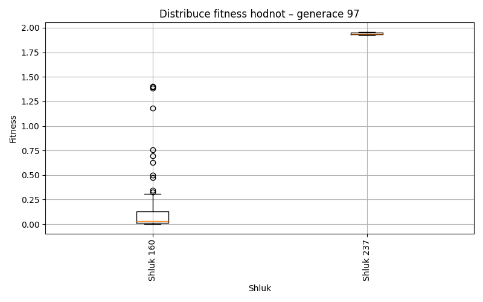
Generace 98
Stabilita mezi generací 97 → 98:
Shluk 160 → 160: 96 jedinců (98.0 %)
Shluk 160 → 238: 1 jedinců (1.0 %)
Shluk 160 → 237: 1 jedinců (1.0 %)
Shluk 237 → 160: 1 jedinců (50.0 %)
Shluk 237 → 237: 1 jedinců (50.0 %)
Jaccardovo mapování a overlap: Generace 97 → 98
- Shluk 160 → 160 (Jaccard: 0.97, Overlap: 0.99)
- Shluk 237 → 237 (Jaccard: 0.33, Overlap: 0.50)
Posun centroidů mezi generací 97 → 98:
- Shluk 0: 0.0485
- Shluk 1: 0.8014
Generace 99
Stabilita mezi generací 98 → 99:
Shluk 160 → 160: 96 jedinců (99.0 %)
Shluk 160 → 239: 1 jedinců (1.0 %)
Shluk 237 → 160: 2 jedinců (100.0 %)
Shluk 238 → 160: 1 jedinců (100.0 %)
Jaccardovo mapování a overlap: Generace 98 → 99
- Shluk 160 → 160 (Jaccard: 0.96, Overlap: 0.99)
- Shluk 237 → 160 (Jaccard: 0.02, Overlap: 1.00)
- Shluk 238 → 160 (Jaccard: 0.01, Overlap: 1.00)
Posun centroidů mezi generací 98 → 99:
- Shluk 0: 0.0700
- Shluk 1: 1.0177
Generace 100
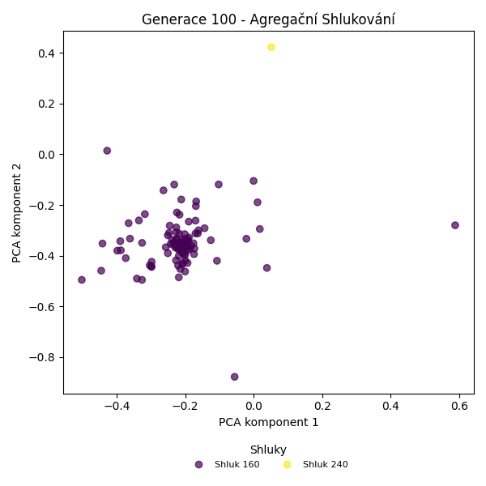
Stabilita mezi generací 99 → 100:
Shluk 160 → 160: 98 jedinců (99.0 %)
Shluk 160 → 240: 1 jedinců (1.0 %)
Shluk 239 → 160: 1 jedinců (100.0 %)
Jaccardovo mapování a overlap: Generace 99 → 100
- Shluk 160 → 160 (Jaccard: 0.98, Overlap: 0.99)
- Shluk 239 → 160 (Jaccard: 0.01, Overlap: 1.00)
Posun centroidů mezi generací 99 → 100:
- Shluk 0: 0.0542
- Shluk 1: 2.2228
Generace 101
Stabilita mezi generací 100 → 101:
Shluk 160 → 160: 89 jedinců (89.9 %)
Shluk 160 → 241: 7 jedinců (7.1 %)
Shluk 160 → 242: 1 jedinců (1.0 %)
Shluk 160 → 243: 1 jedinců (1.0 %)
Shluk 160 → 244: 1 jedinců (1.0 %)
Shluk 240 → 160: 1 jedinců (100.0 %)
Jaccardovo mapování a overlap: Generace 100 → 101
- Shluk 160 → 160 (Jaccard: 0.89, Overlap: 0.99)
- Shluk 240 → 160 (Jaccard: 0.01, Overlap: 1.00)
Posun centroidů mezi generací 100 → 101:
- Shluk 0: 0.4554
- Shluk 1: 1.7991
Generace 102
Stabilita mezi generací 101 → 102:
Shluk 160 → 160: 90 jedinců (100.0 %)
Shluk 241 → 160: 6 jedinců (85.7 %)
Shluk 241 → 241: 1 jedinců (14.3 %)
Shluk 242 → 160: 1 jedinců (100.0 %)
Shluk 243 → 160: 1 jedinců (100.0 %)
Shluk 244 → 160: 1 jedinců (100.0 %)
Jaccardovo mapování a overlap: Generace 101 → 102
- Shluk 160 → 160 (Jaccard: 0.91, Overlap: 1.00)
- Shluk 241 → 241 (Jaccard: 0.14, Overlap: 1.00)
- Shluk 242 → 160 (Jaccard: 0.01, Overlap: 1.00)
- Shluk 243 → 160 (Jaccard: 0.01, Overlap: 1.00)
- Shluk 244 → 160 (Jaccard: 0.01, Overlap: 1.00)
Posun centroidů mezi generací 101 → 102:
- Shluk 0: 0.4236
- Shluk 1: 1.4102
Generace 103
Stabilita mezi generací 102 → 103:
Shluk 160 → 160: 92 jedinců (92.9 %)
Shluk 160 → 245: 1 jedinců (1.0 %)
Shluk 160 → 241: 5 jedinců (5.1 %)
Shluk 160 → 246: 1 jedinců (1.0 %)
Shluk 241 → 241: 1 jedinců (100.0 %)
Jaccardovo mapování a overlap: Generace 102 → 103
- Shluk 160 → 160 (Jaccard: 0.93, Overlap: 1.00)
- Shluk 241 → 241 (Jaccard: 0.17, Overlap: 1.00)
Posun centroidů mezi generací 102 → 103:
- Shluk 0: 0.5894
- Shluk 1: 1.4106
Generace 104
Stabilita mezi generací 103 → 104:
Shluk 160 → 247: 1 jedinců (1.1 %)
Shluk 160 → 160: 91 jedinců (98.9 %)
Shluk 245 → 160: 1 jedinců (100.0 %)
Shluk 241 → 160: 4 jedinců (66.7 %)
Shluk 241 → 241: 1 jedinců (16.7 %)
Shluk 241 → 248: 1 jedinců (16.7 %)
Shluk 246 → 160: 1 jedinců (100.0 %)
Jaccardovo mapování a overlap: Generace 103 → 104
- Shluk 160 → 160 (Jaccard: 0.93, Overlap: 0.99)
- Shluk 245 → 160 (Jaccard: 0.01, Overlap: 1.00)
- Shluk 241 → 241 (Jaccard: 0.17, Overlap: 1.00)
- Shluk 246 → 160 (Jaccard: 0.01, Overlap: 1.00)
Posun centroidů mezi generací 103 → 104:
- Shluk 0: 0.5710
- Shluk 1: 1.0093
- Shluk 2: 1.6877
- Shluk 3: 1.5903
Generace 105
Stabilita mezi generací 104 → 105:
Shluk 247 → 160: 1 jedinců (100.0 %)
Shluk 160 → 160: 95 jedinců (97.9 %)
Shluk 160 → 249: 2 jedinců (2.1 %)
Shluk 241 → 160: 1 jedinců (100.0 %)
Shluk 248 → 248: 1 jedinců (100.0 %)
Jaccardovo mapování a overlap: Generace 104 → 105
- Shluk 247 → 160 (Jaccard: 0.01, Overlap: 1.00)
- Shluk 160 → 160 (Jaccard: 0.96, Overlap: 0.98)
- Shluk 241 → 160 (Jaccard: 0.01, Overlap: 1.00)
- Shluk 248 → 248 (Jaccard: 1.00, Overlap: 1.00)
Posun centroidů mezi generací 104 → 105:
- Shluk 0: 0.0656
- Shluk 1: 2.5986
- Shluk 2: 1.6232
Generace 106
Stabilita mezi generací 105 → 106:
Shluk 160 → 160: 97 jedinců (100.0 %)
Shluk 249 → 160: 1 jedinců (50.0 %)
Shluk 249 → 249: 1 jedinců (50.0 %)
Shluk 248 → 160: 1 jedinců (100.0 %)
Jaccardovo mapování a overlap: Generace 105 → 106
- Shluk 160 → 160 (Jaccard: 0.98, Overlap: 1.00)
- Shluk 249 → 249 (Jaccard: 0.50, Overlap: 1.00)
- Shluk 248 → 160 (Jaccard: 0.01, Overlap: 1.00)
Posun centroidů mezi generací 105 → 106:
- Shluk 0: 0.0407
- Shluk 1: 2.6623
Generace 107
Stabilita mezi generací 106 → 107:
Shluk 160 → 160: 98 jedinců (99.0 %)
Shluk 160 → 250: 1 jedinců (1.0 %)
Shluk 249 → 160: 1 jedinců (100.0 %)
Jaccardovo mapování a overlap: Generace 106 → 107
- Shluk 160 → 160 (Jaccard: 0.98, Overlap: 0.99)
- Shluk 249 → 160 (Jaccard: 0.01, Overlap: 1.00)
Posun centroidů mezi generací 106 → 107:
- Shluk 0: 0.0433
- Shluk 1: 2.6410

Generace 108
Stabilita mezi generací 107 → 108:
Shluk 160 → 160: 96 jedinců (97.0 %)
Shluk 160 → 251: 2 jedinců (2.0 %)
Shluk 160 → 250: 1 jedinců (1.0 %)
Shluk 250 → 250: 1 jedinců (100.0 %)
Jaccardovo mapování a overlap: Generace 107 → 108
- Shluk 160 → 160 (Jaccard: 0.97, Overlap: 1.00)
- Shluk 250 → 250 (Jaccard: 0.50, Overlap: 1.00)
Posun centroidů mezi generací 107 → 108:
- Shluk 0: 0.8027
- Shluk 1: 1.4225
Generace 109
Stabilita mezi generací 108 → 109:
Shluk 160 → 160: 96 jedinců (100.0 %)
Shluk 251 → 160: 2 jedinců (100.0 %)
Shluk 250 → 250: 2 jedinců (100.0 %)
Jaccardovo mapování a overlap: Generace 108 → 109
- Shluk 160 → 160 (Jaccard: 0.98, Overlap: 1.00)
- Shluk 251 → 160 (Jaccard: 0.02, Overlap: 1.00)
- Shluk 250 → 250 (Jaccard: 1.00, Overlap: 1.00)
Posun centroidů mezi generací 108 → 109:
- Shluk 0: 0.8164
- Shluk 1: 1.0624

Generace 110
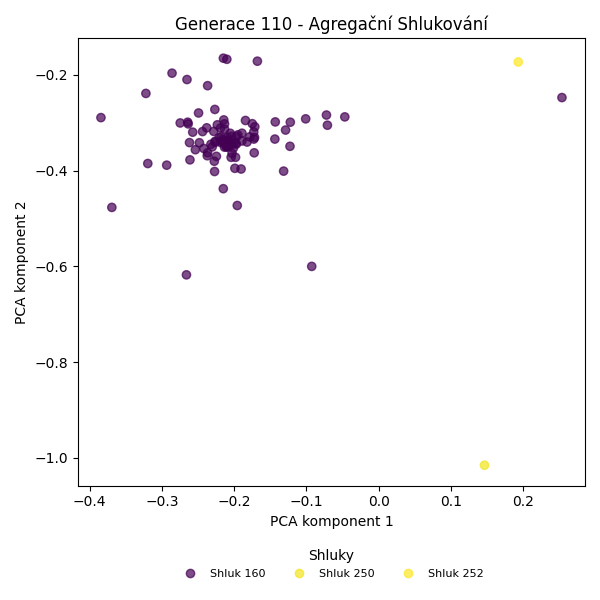
Stabilita mezi generací 109 → 110:
Shluk 160 → 160: 97 jedinců (99.0 %)
Shluk 160 → 252: 1 jedinců (1.0 %)
Shluk 250 → 160: 1 jedinců (50.0 %)
Shluk 250 → 250: 1 jedinců (50.0 %)
Jaccardovo mapování a overlap: Generace 109 → 110
- Shluk 160 → 160 (Jaccard: 0.98, Overlap: 0.99)
- Shluk 250 → 250 (Jaccard: 0.50, Overlap: 1.00)
Posun centroidů mezi generací 109 → 110:
- Shluk 0: 0.0263
- Shluk 1: 2.1882

Generace 111
Stabilita mezi generací 110 → 111:
Shluk 160 → 160: 97 jedinců (99.0 %)
Shluk 160 → 252: 1 jedinců (1.0 %)
Shluk 252 → 252: 1 jedinců (100.0 %)
Shluk 250 → 160: 1 jedinců (100.0 %)
Jaccardovo mapování a overlap: Generace 110 → 111
- Shluk 160 → 160 (Jaccard: 0.98, Overlap: 0.99)
- Shluk 252 → 252 (Jaccard: 0.50, Overlap: 1.00)
- Shluk 250 → 160 (Jaccard: 0.01, Overlap: 1.00)
Posun centroidů mezi generací 110 → 111:
- Shluk 0: 0.0221
- Shluk 1: 1.4109
Generace 112

Stabilita mezi generací 111 → 112:
Shluk 160 → 160: 97 jedinců (99.0 %)
Shluk 160 → 253: 1 jedinců (1.0 %)
Shluk 252 → 160: 2 jedinců (100.0 %)
Jaccardovo mapování a overlap: Generace 111 → 112
- Shluk 160 → 160 (Jaccard: 0.97, Overlap: 0.99)
- Shluk 252 → 160 (Jaccard: 0.02, Overlap: 1.00)
Posun centroidů mezi generací 111 → 112:
- Shluk 0: 0.0183
- Shluk 1: 1.3847
Generace 113
Stabilita mezi generací 112 → 113:
Shluk 160 → 160: 98 jedinců (99.0 %)
Shluk 160 → 254: 1 jedinců (1.0 %)
Shluk 253 → 160: 1 jedinců (100.0 %)
Jaccardovo mapování a overlap: Generace 112 → 113
- Shluk 160 → 160 (Jaccard: 0.98, Overlap: 0.99)
- Shluk 253 → 160 (Jaccard: 0.01, Overlap: 1.00)
Posun centroidů mezi generací 112 → 113:
- Shluk 0: 0.0179
- Shluk 1: 1.4410
Generace 114
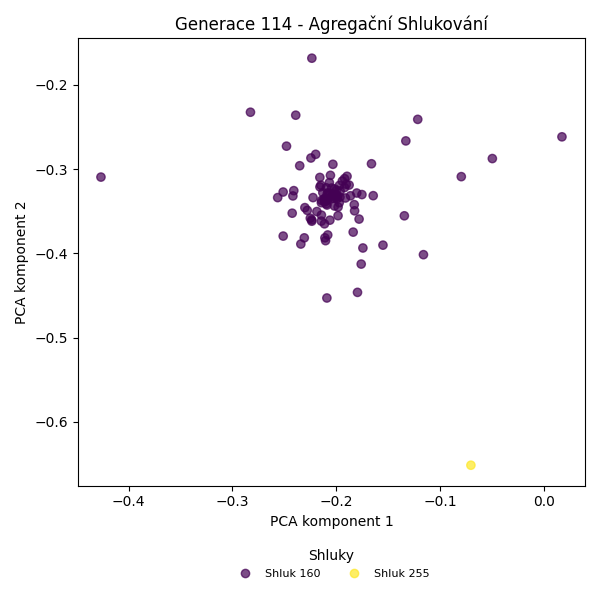
Stabilita mezi generací 113 → 114:
Shluk 160 → 160: 98 jedinců (99.0 %)
Shluk 160 → 255: 1 jedinců (1.0 %)
Shluk 254 → 160: 1 jedinců (100.0 %)
Jaccardovo mapování a overlap: Generace 113 → 114
- Shluk 160 → 160 (Jaccard: 0.98, Overlap: 0.99)
- Shluk 254 → 160 (Jaccard: 0.01, Overlap: 1.00)
Posun centroidů mezi generací 113 → 114:
- Shluk 0: 0.0141
- Shluk 1: 1.1877
Generace 115
Stabilita mezi generací 114 → 115:
Shluk 160 → 160: 99 jedinců (100.0 %)
Shluk 255 → 255: 1 jedinců (100.0 %)
Jaccardovo mapování a overlap: Generace 114 → 115
- Shluk 160 → 160 (Jaccard: 1.00, Overlap: 1.00)
- Shluk 255 → 255 (Jaccard: 1.00, Overlap: 1.00)
Posun centroidů mezi generací 114 → 115:
- Shluk 0: 0.0298
- Shluk 1: 1.9131
Generace 116
Stabilita mezi generací 115 → 116:
Shluk 160 → 160: 98 jedinců (99.0 %)
Shluk 160 → 256: 1 jedinců (1.0 %)
Shluk 255 → 160: 1 jedinců (100.0 %)
Jaccardovo mapování a overlap: Generace 115 → 116
- Shluk 160 → 160 (Jaccard: 0.98, Overlap: 0.99)
- Shluk 255 → 160 (Jaccard: 0.01, Overlap: 1.00)
Posun centroidů mezi generací 115 → 116:
- Shluk 0: 0.0247
- Shluk 1: 1.7128
Generace 117
Stabilita mezi generací 116 → 117:
Shluk 160 → 160: 99 jedinců (100.0 %)
Shluk 256 → 160: 1 jedinců (100.0 %)
Jaccardovo mapování a overlap: Generace 116 → 117
- Shluk 160 → 160 (Jaccard: 0.99, Overlap: 1.00)
- Shluk 256 → 160 (Jaccard: 0.01, Overlap: 1.00)
Posun centroidů mezi generací 116 → 117:
- Shluk 0: 0.0225
Generace 118
Stabilita mezi generací 117 → 118:
Shluk 160 → 160: 98 jedinců (98.0 %)
Shluk 160 → 257: 1 jedinců (1.0 %)
Shluk 160 → 258: 1 jedinců (1.0 %)
Jaccardovo mapování a overlap: Generace 117 → 118
- Shluk 160 → 160 (Jaccard: 0.98, Overlap: 1.00)
Posun centroidů mezi generací 117 → 118:
- Shluk 0: 0.0183
Generace 119
Stabilita mezi generací 118 → 119:
Shluk 160 → 160: 97 jedinců (99.0 %)
Shluk 160 → 259: 1 jedinců (1.0 %)
Shluk 257 → 160: 1 jedinců (100.0 %)
Shluk 258 → 160: 1 jedinců (100.0 %)
Jaccardovo mapování a overlap: Generace 118 → 119
- Shluk 160 → 160 (Jaccard: 0.97, Overlap: 0.99)
- Shluk 257 → 160 (Jaccard: 0.01, Overlap: 1.00)
- Shluk 258 → 160 (Jaccard: 0.01, Overlap: 1.00)
Posun centroidů mezi generací 118 → 119:
- Shluk 0: 0.0164
- Shluk 1: 1.1211
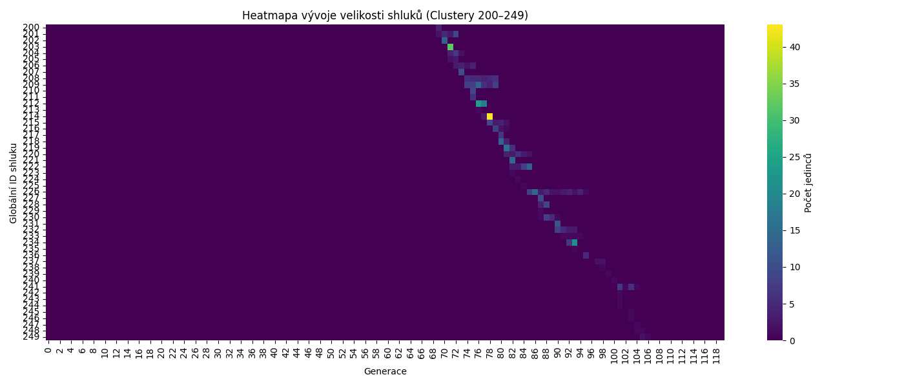